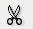
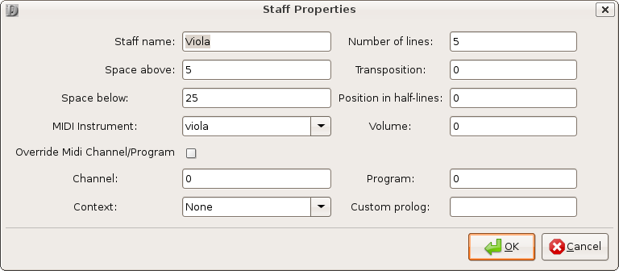

Version 0.9.4 mostly with some updates for 1.0
Copyright © 2009, 2010, 2011, 2012, 2013 Denemo Project
This Manual is released under the Creative Commons Attribution-Share Alike 3.0 Unported license.
Table of Contents
- Introduction
- Getting Started
- Overall View of Denemo
- The Denemo Input Window
- The Main Menubar
- Toolbar
- Playback Controls
- Midi In Controls
- Object Menu
- Music Snippets
- The Print View Window
- The Score Layouts Window
- A Survey of the Input Methods
- Playing Notes into Denemo - MIDI
- Transcribing from Facsimile or Hand-written Score
- Playing Notes into Denemo - Audio (Souncard Mic Input)
- Score Setup
- Adding Key/Mouse Shortcuts
- More Commands
- Variables Defined in Scheme
- Functions Callable from Scheme
- Denemo Directives
- Directive Edit Scripts
- LilyPond Editing
- Using the Denemo From the PC keyboard
- Publishing
- Advanced Features
- Denemo Command Line Options
Denemo lets you create musical scores. You can type music in using the keyboard or play it in using a MIDI contoller or the microphone input. You can edit your music - the input display window shows you what you are working on in music notation - and you can playback to check how it sounds. The typeset display window shows the final printed score and typeset to the highest standards used in the music publishing industry - thanks to the Lilypond music typesetting program.
This separation of the final typesetting window from the input display avoids the constant dragging about of overlapping notation which is typical of music notation programs. Nevertheless, if you do wish to tweak the appearance dragging and re-positioning of notation is possible on the final typeset display.
Denemo is available from a variety of sources for different distributions. The latest stable release (tar.gz and .deb formats) is available for download from http://download.savannah.gnu.org/releases/denemo/. You can install Denemo from the Debian unstable repositories, using the command apt-get install denemo. Builds for Macintosh are available from the Gnu-Darwin project. The Denemo development branch can be downloaded using anonymous CVS or Git.
Anonymous Git checkout:
git clone git://git.savannah.gnu.org/denemo.git
Anonymous CVS checkout:
cvs -d:pserver:anonymous@pserver.git.sv.gnu.org:/denemo.git co -d denemo master
To build Denemo from a source package, the following !!out of date!! dependent packages should be installed first. (See website for up-to-date list). Remember to install the development packages as well (check your distribution for the specific package name):
![[Note]](images/note.png) | For Debian Users |
|---|---|
Type apt-cache showsrc denemo at a command line to determine what are the package names for Denemo dependencies. Type apt-get build-dep denemo to build the dependent files or use apt-get to install the packages individually by copying and pasting their names to the command line. |
g++ 2.95 or higher
cdbs
gettext
libgtk2.0-dev or 3
gtk+ 2 or 3
libglib2.0-dev
libxml2
libxml2-dev
autoconf 2.59 or higher
automake1.7
libaubio
libfftw3-dev
libportaudio
Denemo can use other applications for printing. You may install the following applications, and edit the preferences menu to tell Denemo which you want it to use.
A PDF viewer (ghostview, evince etc)
An image viewer such as EOG
Denemo is available in a variety of formats. The current stable release is available either as source code or in binary format. The Development branch of Denemo is available as a GIT source tree.
Procedure 1. To install from source code:
Open a terminal window.
Change directory to the directory to which you downloaded the Denemo source package.
Uncompress the source package using standard Linux tools (tar and gunzip).
Change directory to the uncompressed source directory.
Most people will start with playing around with Denemo via the pc keyboard. The default setup means that keys a-g represent the note names and 0-6 the different durations (whole note, half note etc). When the cursor is appending (blue) pressing key "0" will insert a note at the cursor. Pressing key "a" will append the nearest A. If the duration of the next note is the same you can simply type the note name, it will use the last entered duration. There are keypresses (+/-, and plus/minus on the numeric keypad) to set sharp/flat/double-sharp/double-flat for the next entered note and to sharpen or flatten. Use +/- with the shift key for editing. Likewise, Shift with a number key edits the duration.
When the cursor is moved on to a note (with the arrow key right or mouse) the cursor turns green and then a-g edits the note name. To insert a note before a note at the cursor use a double strike A,A-G,G. When the cursor is green the keys 0-6 change the duration of the note, while Shift-0 6 insert a note before the cursor. (If you use the numeric keypad you can use Shift-KP 0-6 for this). The arrow keys move the cursor around, the period key adds a dot while Alt-a-g add notes to the chord at the cursor. Ins inserts a note in a chord whether the cursor is on (green) or after (blue) a note, a double Del, Del removes it.
| Note |
|---|---|
| When in the appending position the cursor shows as a large blue or red rectangle on a note-position. Blue indicates a note can be appended at that point without overflowing the measure. Red indicates that the measure is already full. When the cursor is a smaller green rectangle it indicates that you are not in the appending position: you can edit the note/object at the cursor or insert before it. The vertical blue line indicates the insertion point. |
You can find more shortcuts by exploring the menu system - e.g. under the Notes/Rests menu the Select Duration submenu gives Remove Dot with the shortcut Control-period shown next to the command.
Here are a few of the keyboard shortcuts that are commonly used in Denemo.
- Letters a-g edit the note at the cursor to be A-G, if the cursor is in the appending position then notes are added. Letters A-G (either caps lock or shift) insert a note at the cursor.
- Numbers 0-6 are used to refer to the note durations Whole Note ... 64th Note. They insert a duration at the cursor, which you then give a pitch to with a note name. With the shift key held (or the CapsLock on) 0-6 edits the duration of the note at the cursor. The corresponding Numeric Keypad keys can be used instead.
- "." dots a note, Ctrl-"." undots it.
- Alt-0-6 inserts a rest.
- Alt-a-g Add notes to a chord. Or position the cursor and use Insert to add a note, Ctrl-Insert to remove it.
- 7 starts a slur, 8 extends it, while 9 reduces it.
- Shift-/ inserts a cautionary accidental
Here are a few of the mouse shortcuts that are commonly used in Denemo (keyboards may vary, for control, shift, alt etc modifiers). Note that under the Input menu is an option to turn on more mouse-friendly buttons, this is the default for Windows users.
- Scroll Wheel pans up/down to bring staffs out of view into the window.
- Shift Key and Scroll Wheel pans the score left/right.
- Control Key and Scroll Wheel zooms.
- Shift Key and Left mouse button drags notes up and down.
- CapsLock AND Shift key with Left mouse drag inserts a crescendo
- CapsLock AND AltGr key with Left mouse drag inserts a diminuendo
For more serious use of Denemo, for transcribing hundreds of measures of music, for example, you should explore other key shortcut schemes. These are available via the Command Manager. The Arranger scheme uses two-key bindings such as "B,s" for start repeat barline and "B,e" for end repeat barline. Composer shortcuts is another scheme concentrating on rapid entry from the pc-keyboard. The LilyPond shortcuts scheme will be familiar to those who know the LilyPond music typesetting language, as well as including commands which generate easier-to-read LilyPond output.
The MIDI keyboard too can be customized to perform different actions. Usually, playing notes adds or edits the score (like hitting note names at the pc-keyboard). With the sustain pedal pressed chords are generated (the Alt key can be used for this too). If the interval between the notes played is augmented or diminished it is played on a different channel, so that you are alerted to possible pitch spelling errors (e.g. inputting A-sharp for B-flat). By holding down the Control key a score can be checked by playing the notes - the cursor only advances if the right note is played, and the Shift key can be held down to route the MIDI keyboard straight to the output (e.g. to check a phrase before playing it in). The Pitch Bend controller can be used to set the range of sharps and flats to be used, and the modulation controller can be used to mark sections of the music. With the MIDI controller set as Input source (Input menu) the duration keys create pure durations (notes colored yellow/brown) - you can enter as much of the rhythm as you wish, and then play the notes on top.
Denemo is used via the computer keyboard, MIDI controller or playing in via a musical instrument. Quite a few mouse operations are also included by default. Clicking on the score will select items, and the status bar at the bottom will describe the item clicked. Right-clicking on items in the score allows you to edit any special attributes, (called Directives, see the section called “Denemo Directives”), that they may have. Clicking on the initial clef, key or timesignature lets you edit these, clicking to the right or left of the measures visible moves you forwards and backwards in the score. Selections can be made by dragging with the mouse from one note to another. And right-clicking any menu item gets help and the opportunity to set a shortcuts for the menu item. Furthermore, scripts are available in the menu system that give the mouse further uses.
The unit of work in Denemo is a musical score, which can be saved in a single file (with .denemo suffix). This is represented on the screen by a "tab". If you have several tabs open at once they appear just above the music in the main window, and you can switch between them by clicking on the tab.
One score may contain several movements, which you can move between, insert and delete with the Movements menu. A movement is a continuous piece of music with titles etc.
| Note |
|---|---|
| It is not all that easy to tell that you have several movements; the first thing on the status bar is the movement number. If you try to move to a new movement which isn't there the bell sounds (if enabled). |
Within a movement there are staffs (arranged vertically) and within the staffs Denemo Objects. These can be notes, chords and Denemo Directives (see the section called “Denemo Directives”). The notes and chords are displayed in conventional format (though not fully typeset). The Denemo Directives are used for most things that are not chords or notes: Metronome marks, repeat barlines etc are good examples. They can also be attached to chords, individual notes in a chord, to a staff as a whole and to the score as a whole; in this case the directive can be thought of as an attribute of the object it is attached to. Each Denemo Directive carries its own display method. For example the Close Repeat barline appears as a Denemo Object in the converional music notation, while a Directive attached to a staff (e.g. Smaller Staff) may appear in a menu under a tools icon to the right of the staff. In the case of "Smaller Staff" the directive directs the LilyPond typesetter to make the staff smaller, and it can be edited from the menu under the tools icon to the left of the clef. Another tools icon appears if directives are attached to voices within a staff, again to the left of the clef, below the staff one.
If there is more than one voice on a staff it is best displayed on a separate staff in the Denemo Display, for ease of editing - the clef is drawn pale and there is no timesignature for such extra voices so it is easy to understand what is going on. The Print Preview window as usual shows the final typeset appearance.
In the Denemo display a cursor shows where the next note will be entered/edited. It is red for an over-full bar, blue for appending into an under-full one and green when editing (i.e. on an already entered object).
There are two sorts of titles. Book titles have a separate title page with titles for individual movements which can be listed in an automatically generated table of contents. Simple titles give a Title and (optionally) movement titles on the same page. Comments can be place on chords in the score and these can be automatically collected into an appendix.
When a file is loaded it opens at the point where you left off editing it. The position and size of the window is restored as well as the position and size of the source pdf you are transcribing from.
The main window has menus and toolbars at the top. The Titles Etc appear next, along with any extra menu items which you may have placed there (e.g. the Print Part button). With View->Score View checked there is next the drawing area where the music input is displayed. When zoomed out you see just the few measures you are working on. By dragging the red bar at the bottom of the score upwards you get space for more of the music. If you have many staffs they may not all fit: you can still drag the red bar upwards to see several lines of just one or two staffs for instance. Below this is a "Console Pane" showing any LilyPond messages while typesetting the music. At the bottom is a status line showing which movement you are in and what sort of object the cursor is on. If there are any MIDI filters that active they will be noted at the right in the status bar. The small colored rectangle is the Denemo Cursor, which shows where notes etc will be added/edited next - the insertion point is marked as a blue vertical bar. Selected music is indicated by a green background.
The menus in Denemo are unusual: they not only let you do some particular action, but also each menu item lets you enquire what the action does in more detail and lets you see or set keyboard/mouse shortcuts for the action. A single keystroke can be set as a shortcut simply by pressing the key while the menu item is selected. You are warned if you are stealing this shortcut from something else. All the extra functionality of menu items can be accessed by right-clicking the menu item, while the usual left click is for executing the action itself. The menus can always be torn off for working with particular items (e.g. working with different movements or with measures, dynamics etc.). Also available by right-clicking is creating new actions - often by modifying ones that are already there.
The Main Menubar has submenus for overall control of the program. It contains the following submenus:
File
Navigation
Edit
View
Input
Playback
More
Help
Educational
| Note |
|---|---|
This menu has been re-organized, so the following is only a rough guide. |
Use the menu to perform global operations related to storing and retrieving from file systems. The File menu contains the following Menu Items:
| Menu Item | Description |
|---|---|
| New | Create score from scratch. |
| Open | Open an existing Denemo file. |
| Add Staffs | Open an existing Denemo file and append the staffs from the (first) movement of it to the staffs in the current movement. |
| Add Movements | Open an existing Denemo file and append the movements from it to the current score. |
| Open Recent | Open a file recently edited. |
| Open Standard Template | Create score from a stock template. |
| Open from Gallery | Create score from an example in the Gallery. |
| Open Custom Template | Create score from a template you have saved. |
| New Window | Open another instance of Denemo. |
| Open in New | Open an existing Denemo file in a new tab (or "page") so that both can be used at once. |
| Save | Save the current file. |
| Save As | Save the current file with a new name. |
| Save Parts | Saves a set of parts (staves) in LilyPond format. |
| Export PDF | Run LilyPond on the current file to create a PDF. |
| Displays the score in a pdf view, from which it can be printed. | |
| Print excerpt | Displays only the selection in image viewer, from which it can be saved. |
| Print Current Part | Displays one part taken from the score in a pdf view, from which it can be printed. |
| Score Wizard | Open a Score Setup Wizard. |
| Close | Close the current score but keep other Denemo scores open. |
| Quit | Close the current scores and exit Denemo. |
Use the menu to access common editing commands.
| Menu Item | Description |
|---|---|
| Undo | Undo the pitch and rhythm just added. |
| Redo | Redo the pitch and rhythm just added. |
| Select | Menu items for selecting music in the score. |
| Cut | Copy the selected notation to the clipboard and delete the selection. |
| Copy | Copy the selected notation to the clipboard. |
| Paste | Paste the copied notation at the cursor point. |
| Paste LilyPond Notes | Paste text as LilyPond notes. Open a .ly file in a text editor, copy some notes and then execute this command to capture them into Denemo. |
| Edit Object | A general interface to editing whatever is at the cursor, especially Directives attached to notes/chords. |
| Change Preferences | Set external programs (LilyPond, PDF viewer etc.), autosave interval etc. These values will bre remembered when you re-start the program |
| Customize Commands, Shortcuts... | |
| Quick settings checkbox | One touch setting of keyboad shortcuts |
| Save Command Set. | Save your current customization of the menu commands and shortcuts. |
| Manage Command Set. | Hide/Delete/Show menu items, set keyboard shortcuts, set cursor shapes, load/save all these. |
Use the menu to toggle toolbars and palettes used with the mouse.
| Menu Item | Description |
|---|---|
| Score View | Shows the score in panorama format for editing. The printed score will generally look different. |
| Print View | Shows the score as engraved by the LilyPond typesetter. You cannot edit in this window, but you can drag items to indicate how you want an item edited. |
| Lyrics View | Shows any lyrics for the current staff/voice. Each verse has its own tab, when selected the lyric placement shows in the Denemo display, so you can adjust by typing in the lyrics view window |
| Rhythms Patterns | Allows custom rhythm patterns. Enter rhythms by setting up patterns and then overlay the rhythms with pitches via MIDI or microphone |
| Note and Rest Entry | Notes and rests buttons – the highlighted button is current duration – click a button to enter a note/rest, or to edit the note under the cursor in edit mode |
| Articulation Palette | A (limited) palette of expression marks etc to apply to notes. More are in the menu system under Markings. |
| Score Titles, Controls etc | If this is checked any Titles, indent settings etc applying to the score can be shown as buttons at the top of the score. They must be created with their graphic field set for this. |
| Menu of Objects | Menu of all the Denemo commands listed under type of object |
| Show LilyPond | Pops up a window for customizing the LilyPond |
| Show Scheme Script | Pops up a window for showing scripts written in scheme to control Denemo |
Choose whether to use external sources (Audio from the Mic input or MIDI) for Denemo. To use these you may need to review the settings in Edit->Prefs first.
Add commands to Denemo. Extra commands are available (those which not everyone will want) via this menu. More Commands gives commands shipped with Denemo, while My Commands gives ones that you have created locally. Note that the extra commands can also be loaded at the menu where you are looking for them (you right-click on a menu item, and if there are more commands for that menu the More Commands for this Menu item will show),
Update Commands from the Internet allows you to get the latest versions of commands directly from ftp://denemo.org. They are stored in the .denemo/download directory in your home directory. You can set a preference to have this happen in the background every time you start Denemo, if you prefer.
Use the Playback menu to start playback of your score. Denemo lets you hear your score, using an internal synthesizer.
| Menu Item | Description |
|---|---|
| Play | Plays from the start marker to the end marker |
| Stop | Stops the playback |
Use the Toolbar to access common Denemo commands quickly. The Tool Bar contains the following icons:
| Icon | Description |
|---|---|
 | Creates a new document. |
| Creates a new document using the score wizard. | |
 | Opens the Open File dialog box. |
 | Saves the current file |
 | Runs LilyPond to convert the current file to PDF and sends it to the printer for printing |
 | Undoes the last action. |
 | Redoes the previous undo action. |
 | Cuts the current selection to the clipboard. |
 | Copies the selected notation to the clipboard. |
 | Pastes the current clipboard item at the cursor position. |
| Jumps to the first measure of the movement. | |
 | Jumps to the last measure of the movement. |

Use this frame to control MIDI playback of the current movement. It has the following controls:
| Icon | Description |
|---|---|
 | Runs DenemoFirst script. |
 | Runs DenemoGoBack script. |
| Moves the start playback position backwards. Runs DenemoGoBack script. |
 | Sets start playback position to cursor. Runs DenemoStartToCursor script. |
 | Moves the start playback position forwards. Runs DenemoNext script. |
 | Runs DenemoRewind script. |
 | Runs DenemoStop script. |
 | Runs DenemoPlay script. |
 | Starts playing back while recording from MIDI-in.(Runs DenemoRecord scriptto do this). |
 | Moves the end playback position backwards.Runs DenemoGoForward script. |
 | Sets the end playback position to the cursor.Runs DenemoEndToCursor script. |
 | Moves the end playback position forwards. Runs DenemoLast script. |
| Loop | Runs DenemoLoop script. |
| Conductor | When you press Play the music advances past the cursor only while the mouse is moving. |
| Reset | Internal Synth only. Performs a reset on the synth. Also resets the start/end play positions to whole piece (the visual display shows just a red bar at the start) |
| Panic | Jack only. Emits jack panic. |
| Set from Selection | Sets the selection to be the start/end. Note first use in a session is buggy. |
| Tempo | For movements with a single tempo this tempo is changed for rest of the playback. If the movement has an embedded MIDI tempo change, the change will be altered proportionally. The movement tempo setting itself is not altered - you are just altering the playback.(See next button or Movements->MIDI Tempo for setting that) |
| Set Tempo | Sets the overall tempo of the movement to the value fixed by the Tempo slider |
| Volume | Reduces the current volume by the % set. Again, this applies only to playback and proportionally affects embedded dynamics. |
| Set | Calls the DenemoSetPlaybackIntervalToSelection script. |

Use this frame to control MIDI input to the current movement. It has the following controls:
| Icon | Description |
|---|---|
 | Sets the end sharps and flats to use. |
| MIDI->Score | Directs the MIDI in to the score or to a MIDI recorder. The MIDI recorder is active when Record button is pressed. When you wish to return to score editing, this button re-directs MIDI-in to the score. |
| Delete | Deletes your MIDI recording. |
| Convert | Converts your MIDI recording to Notation. Not yet at all practical! |
| MIDI status | Tells you how MIDI in will be treated. Press Control/Shift/Alt keys to modify |
| Switch to Play Along Playback | With this set, when you press Play the music will not advance past the cursor until you play the note. (Mute the current staff to prevent double sounding of notes) |
The object menus give you actions (such as insert, delete ...) ordered by the objects (notes, staffs, measures ...) that they act on.
| Menu Item | Description |
|---|---|
| Score | Settings that apply to the whole score. |
| Movements | Insert/remove navigate, change the properties of movements. |
| Staffs/Voices | Insert/remove, navigate, swap, change the properties of staffs or voices |
| Measures | Insert/remove navigate measures . |
| Notes/Rests | The first menu item in this menu depends on which mode you have chosen. For example in Classic mode there is a function to move the cursor to a new note while in Insert mode the function inserts a note of the given name. These menu items are present mainly to allow you to set shortcuts – it would be too slow to use them for actually entering notes/rests. I addition there are menu items for inserting rests, deleting, tied notes, setting the notehead style and stem direction, grace notes, triplets, transposing and more |
| Chords | Insert/remove notes from a chord. |
| Clefs | Insert change or set the initial clef. |
| Keys | Insert a change or set the initial key. |
| Time Signatures | Insert a change or set the initial time signature. |
| Markings | Insert/remove tempo indications, dynamics, slurs, trills etc. |
| Cursor | Navigation of the (Denemo) cursor. |
| Bookmarks | Create/delete or move to bookmarked positions in the current movement. |
| Lyrics | Create and delete lyrics. |
| Other | Enter chord symbols, figured basses or LilyPond directives. Clear overlays. |
In the score properties dialog things that affect the whole piece can be set, as well as the titles of the current movement. In the score properties dialog you can include directives to apply to all the movements.
| Note |
|---|---|
When a file is loaded it opens with the final movement set as the current movement. |
Dynamics, Slurs, Trills, Tempo Indications etc are in the Notes/Rests menu (if attached to a note or chord) or Directives menu (if standalone objects)
You can collect together your favorite ones, either by assigning shortcuts, or creating a menu of favorite commands which just invoke the action you use.
The Music Snippet toolbar lets you keep a number of snippets of music for pasting into your score. You can enter notes following a rhythmic pattern of a snippet. If you have a pattern in your music that appears many times you only need to type it once. By selecting it and clicking Create Snippet you install that snippet on the toolbar. Then as you enter notes (in Insert Mode) the notes follow the rhythmic pattern chosen. Pressing a duration key goes back to adding notes of the prevailing duration. You can have several snippets like this and switch between them using the space bar (or other keybinding of your choice). Another (more musical) way of entering rhythms is to "drum" them in using the keys on the computer keyboard for quarter-note, eighth-note etc, a curious sort of "musical instrument" where you change key for different durations. Use the numeric keypad for this. Drumming in is quickly learnt and, by playing in the notes rhythmically you can keep your place in the music. Use the immediate feedback option for this, so that you get a bell to confirm when you have completed a measure.
The snippets toolbar is also where "special" notes such as Breve, Longa will appear.
Using Input->Midi or Audio allows you to enter pitches directly. If you have entered your piece of music as pure rhythm you can overlay with the pitches using a MIDI controller or musical instrument with mic, headphones out or pickup attached to your soundcard.
The print view window is shown by checking View->Print View. At the top are buttons to turn continuous typesetting off or on, and to select Full score or Parts. The mouse scroll buttons enable vertical panning and with Control pressed, zooming. Use Ctrl+Shft for finer control zoom. Right click for help with tweaking beam angles, slurs etc.
Right clicking in this pane also allows you to drag offsets to apply to items that LilyPond has positioned badly. Slurs and beaming can be altered here, and page or line breaks added. Or you can select an amount of padding to apply to some object. This is generally a better way of indicating that it is too close to something else, since other objects will move away from it as needed - that is, if you later edit something it will behave more intelligently.
The score layouts window is shown by checking View->Score Layout. You can use layouts to print the music in different ways. For example, one layout may have the score transposed, or be for just two parts printed together.
You can customize any layout in this window - positioning lyrics above the staff rather than below for example, or setting the staff groupings.
You can make Denemo Directives conditional on the score layout, so that for example a page break only applies when printing the full score, or is just for printing one part. In this way if, for example, one part does not need separate first and second time bars, then these can be marked as not being for that layout. See Directives->Conditional Directives for setting this.
Introduction
Denemo allows you to explore all the actions (insert/delete/edit/navigate...) using the menus. So, for example, inserting notes can be found under Notes/Rests while inserting a Staff comes under Staffs/Voices. When you have found the action you need hovering over the item will give an explanation of what it does. The keyboard or mouse shortcut to use for the command is in blue on the right. You can set the keyboard shortcut just by pressing the desired key while the menu item is selected. You can right click on the menu item to set a a two-key keyboard shortcut or mouse shortcut to activate the action. In addition you can customize the mouse actions to initiate commands, and set the cursor that will show while certain mouse conditions apply.
Denemo offers several ways of entering music: typing at the keyboard, playing in via a MIDI keyboard (controller), playing in acoustically using a microphone or choosing items from the menu system.
Using the menus for everything would be very slow, but next to each menu item is the keypress that you can use instead. If there is no keypress shown, and you want to use that item often, then right click on the menu item and you can set a key combination for that menu action. Right clicking is also useful for getting a description of what the menu action is.
Typing at the keyboard can be very fast, if you forget which keypress you need you can consult the menu system to find out. This method is good for touch typists.
For entering a lot of already written-out music, playing the music in via a MIDI keyboard or microphone can offer the fastest and most musical method.
One way to do this is enter the music as pure rhythms, ignoring the note names. The durations show as yellow/brown notes. Each duration sounds its own pitch and length as you enter the durations. As you start each measure the bell will sound so that you can keep your eyes on the score you are copying without needing to look up and check that you haven't miss-typed. If you are a reading musician you will find that you tap in the rhythm rhythmically which helps to keep your place in the piece you are entering.
Once you have entered the rhythms for one or two measures you play the notes via MIDI - they automatically fill in the rhythm for you. When you play notes in via MIDI they give their pitches to the rhythm you have notated. By this means you can enter a piece of music in the time taken to play it twice - once to give the rhythm and once to give the pitches. If the piece modulates strongly you may need to shift the set of accidentals used to match the score. If entering pitches via a mic you need to navigate to the start point, but this isn't needed for MIDI in.
The oldest Denemo keymaps are no longer supported. (see the section called “Adding Key/Mouse Shortcuts”). (Input via MIDI keyboard and Mic in is now available). Denemo shortcuts also work on Numeric Keypad.
Denemo can take pitches directly from MIDI input. Select Input->Midi Input. The control panel allows you to choose the enharmonic range. Under Input->MIDI are various "MIDI filters" that allow you to control how the MIDI input is used: with none active the behavior is as if you had entered the notes using the pc-keyboard, but with the following advantages
- The octave, accidental and note name are all entered in one press of the MIDI key.
- The duration keys enter the yellow/brown duration-only notes, when you play a MIDI key the cursor automatically moves to the first of these.
- Holding down the Alt key (or sustain pedal) lets you enter chords.
- Holding down the Ctrl key lets you check the pitches of a piece already entered. The cursor only advances if the note played is the one at the cursor.
- Holding down the Shift key lets you listen to the MIDI keyboard without affecting the score.
- The problem of entering the wrong enharmonic is largely avoided by Denemo's simple pitch-spelling strategy. The more extreme intervals are played in a separate MIDI channel so that if, for example you enter F - A-sharp it sounds quite distinct from F - B-flat
The MIDI filters are scheme scripts, so they can be tailored to do whatever you wish. One example is a filter that enables you to enter Figured Bass figures by playing the notes corresponding to the figures while holding down the bass note. Another is the "AngryDelete" filter. With this filter on notes are entered normally with the cursor advancing automatically, but if you make a mistake and press the wrong note just hit the next one much louder and it will make the correction for you! MIDI filters are found under Input->MIDI
| Note |
|---|---|
| This feature is now largely redundant as you can now open a source pdf and place links to it in the Denemo score, which is quicker to do |
This is particularly useful for difficult-to-read scores. Each measure of the original can be captured as an image and stored along with the Denemo measure that is your transcription. This makes the transcribing process much easier as you can glance at your original without losing your place in a large messy manuscript. Capturing the images of the measures is done using a screenshot type of process - you need to have the original visible on the screen so you can indicate the extent of each measure.
First display the original score or part on the screen using your pdf viewer or other image display software. Then, in Denemo, choose one of the Capture Measures commands. For a Full score you can capture all the parts at once - choose Movement->Capture Score->Capture Measures (Score). If you have parts use Staff->Capture Score->Capture Measures (One Staff).
Now you can continuously enter measures by left clicking at each measure. You can adjust the start position of the measure (which is normally the end of the last one) by right-clicking. As you enter a measure image a Denemo measure is entered into the score and the image placed underneath it. To stop entering images press a key on the keyboard. There are also commands to delete an erroneous measure-image and to insert a new one - N.B. when you delete the image for a measure all the other measures shift along by one, so they are under the wrong bars until you insert a new screenshot for the measure.
Now you can transcribe the music straight from the images directly under the measure you have selected. LaManina.denemo is an example: the original print made in Venice is quite difficult to decipher and has a couple of errors. In this Denemo file each measure for each part can be seen directly beneath the transcription. You will notice that in places the original measure was split across two lines; at the moment there is no mechanism for joining up the two halves, so instead the following measure has an image containing the remainder of the measure plus the next measure.
Denemo can listen for, and detect the pitch of notes on the mic input of the computer; it doesn't attempt to guess the rhythm - such systems do not work well - but you will find that playing the notes in time will help you to play them in, as well as make playing them in a musical experience rather than a chore.
Playing the notes in can be much quicker than using the keyboard since the note octave and accidental are all given just by playing the note. If you are able to play a musical instrument then this will probably be much faster for you than typing note names, octave shifts and accidentals at the computer keyboard. Using the headphones out of an electronic keyboard avoids "noises-off" interfering with the pitch detection. Many microphones and pickups benefit from some pre-amplification - it is worth getting the level right before you begin.
When you select the Input->Audio on the Main Menu the Pitch Recognition window pops up. While the mouse pointer is inside the score drawing area the score is sensitive to pitches heard via the microphone input. The background colour of the score changes to show that the notes will be entered into the score.
There are two ways of using the pitch entry - Overlay mode (default) and Insert mode. The button marked Insert causes notes to be entered into the current measure in the prevailing rhythm - the mode is set to Insert for this. The button marked Overlays overlays the notes already present with the pitches you sound. There is a third button, marked Tuning, which is a state-of-the art musical instrument tuner.
Music is entered into the measure which holds the cursor. If you are overlaying a rhythm already entered, then the first un-overlayed note in the measure is overlayed by the note detected. You can delete the overlay using the regular delete keys, or clear them altogether if you want to start over in a measure. If you are in Insert mode then the notes detected will be inserted at the cursor position.
Use the enharmonic shift to select whether Bb or A# should be entered when you enter the given pitch - you can usefully go as far as B# and Fb.
Use the transpose control to shift up or down by octaves.
Most of the other settings would require study of the Aubio documentation to understand, but the one marked threshold may be useful to make the detection less sensitive to ambient noises if using a microphone with an acoustic instrument.
The best set-up is to plug the headphones-out socket of an electronic keyboard into the mic input, and choose a piano setting on the electronic keyboard.
If you don't have any musical instrument that you can plug directly into the mic in, then you can use an acoustic instrument with a microphone, in which case move your microphone closer or further from your instrument to get reliable detection. Too close and you get double detections, too far and you get missed ones. To check for good detection open a piece of music, set Overlay mode and put the cursor in the first measure and play the piece in – the notes should all turn blue if you have perfect detection. It is worth while getting perfect detection – more than one or two miss-detects per piece of music and you may want to use the Insert rather than the Overlay method.
The Audio Input button introduces a special entry mode where the pitches you play in will overlay the rhythm, appearing as blue notes. You can delete any wrong pitches using the usual delete keys, without deleting the rhythm. In fact if you have an "interloper" (an extra spurious note) you can delete it and the other pitches will all move along to their correct places.
Another method of playing music in acoustically doesn't involve entering the rhythm separately. For this select Input->Audio and then choose Insert instead of Overlays on the Pitch Recognition Panel that pops up. With Insert the sounded notes are entered as in the prevailing rhythm. The same applies if you have MIDI, only you just need to select Insert mode to enter the notes in that case. So by choosing a rhythm (e.g. half-note, quarter-note, or a custom rhythm pattern) and playing in the pitches you can enter the music into a blank score.
Denemo provides different ways to set up scores:
Create template with the special name "default.denemo". If this is placed at the top level of your templates directory (that is ~/.denemo/templates/default.denemo), then it will be opened each time you start a new score.
Create an init.denemo score with everything you want to start up with, and any actions you want to be taken before you begin. This will be opened when you first start Denemo (that is once per Denemo session). See the section called “Musical Score that Do Things!” for details on what actions you can have Denemo perform before you start.
Use a Template
Use shortcut keys to add staves and set attributes
Use Menus
Denemo comes with a few preinstalled templates. You can also design your own templates as well.
Navigate to , , The Open dialog box appears.
Double click on a template name from the list of templates. The dialog box closes and the template appears.
| Note |
|---|---|
Adjust the clef, key and time signatures as needed. |
Inserting attributes with shortcut keys is an effective way to quickly customize a template.
Navigate to the Staff you want to change an attribute using one of these shortcuts:
Select Staffs/Voices-\>StaffDown to move down one staff
Select Staffs/Voices-\>StaffUp to move up one staff
Denemo Comes with a wide range of prebuilt templates for standard vocal and instrumental scores. If you have a custom score setup you use over and over create a score layout using the Setup Wizard and save it as a template.
Click on File-\>New From Template, The
OpenDialog box appears displaying the currently available Templates.Double click on the template name in the righthand pane. The template loads in the Main Denemo Window.
Note The currently active staff will be black. All other staves will be yellow, until they are active.
Denemo allows you to choose which keys activate which commands. It also allows you to choose Mouse press/release gestures (in combination with keys such as Shift, NumLock, CapsLock etc).
To choose a shortcut for a menu item, right-click on the item and choose the Create Mouse Shortcut, or the Edit Shortcuts option. The Set Mouse Shortcut Dialog requires you to set which button and action you want to use and then to hold/lock the keyboard modifier while clicking on the big button. The setting you have chosen is shown, and you click ok to accept it.
To set a keyboard shortcut, and to delete any sort of shortcut, use the Edit Shortcuts menu item. This dialog also allows you to choose a cursor to show while certain mouse actions are underway.
If your choice of keyboard shortcut already belongs to another command, you are warned about this, and given the chance to change your mind or steal the shortcut. Also, you can choose whether to distinguish between keypresses with, say the NumLock down and those without or to ignore it. If the NumLock is set but no command for that key specifically requires it then the setting of NumLock is ignored and the keypress is treated as if the NumLock was off.
The menu item that activates the command shows the shortcuts that exist in bright blue lettering. PrsL-CapsLoc, for example, is the Press action on the Left mouse key while the CapsLock light is on. In the default command set this is linked to the BeginSlur command, so that together with the RlsL-CapsLoc for the release of the left mouse button, you can "draw" slurs by using the mouse. Similarly, Shift with left mouse button (MveL-Shift) is set to allow you to drag notes up and down the staff. (This is using Command MoveNoteToCursor, which is found under Notes/Rests/Edit/Edit Note/To Cursor)
It is possible to add more commands to the set that Denemo ships with. Some of these are shipped with Denemo, but not added automatically so as to keep the menu sizes manageable. Generally, you right-click to find more menu items to add; once added you can set a keyboard/mouse shortcut and keep the command in your default setup.
You can also get Denemo to remember a frequently used sequence of actions - it can be installed in the menu system and given a keyboard shortcut just like any other command.
To do this you right-click and choose Show Scheme Script. (You do not have to understand what a Scheme Script is to use this!). In the little window that pops up set Record Scheme Script and then do the set of steps you wish Denemo to remember, using the menu items, not keyboard, for each step.
As a simple example, suppose you wanted a command to delete the next note (there are commands to delete the previous note and the current note, so why not?). You would enter some notes, put on Record Scheme Script and then from the menu Cursor select Cursor Right (to move on to the note to be deleted), and with the Notes/Rests->Delete->Delete Object menu item you would delete the note. (Each time you use a menu item you will see a new command entered into the Scheme window). Now turn off Record Scheme Script and you can experiment with your new command by pressing Execute in the Scheme Script window. To save this new command for future use, you right click on a menu item (in the menu where you would like the command to appear) and choose "Save Script as New Menu Item", this will ask you to make up a name for your new command as well as a label for the menu item etc.
You can save the command in your default sequence of commands (via Edit->Customize Commands...->Manage Command Set->Save as Default Command Set). If not you will be asked if you want to save your new commands when you exit. Otherwise you can re-load via the More->My Commands menu item.
There is an even easier way of adding your own favorite LilyPond tweaks, which is by modifying a tweak that has already been done. This can be done by using the text-edit dialog on an existing Denemo Directive (usually found under the Advanced button provided by an edit script). Here you can see the actual LilyPond text that will be inserted, and there is a button to create a script to generate whatever you choose to enter. You can also enter the name of graphic images (.png files) that are to be used to represent your item in the display, and say where it should be positioned.
Once you have created the script, it can be saved in the menu system by right clicking on an item in the menu where you want to place the command, and choosing "Save Script as New Menu Item" as above.
If you are a programmer you will have guessed that you can edit the Scheme Script window to create any command you want. Even if you are not familiar with Scheme you may find that you can adapt other scripts to do what you want.
A good example of this is a script to insert a particular LilyPond directive into the score. This is all that many scripts do: it is easy to see the piece of LilyPond in the Scheme Script window, and by changing it you can create a new command.
For example, from the More menu select the command /menus/ObjectMenu/Instruments/Orchestral/RehearsalMark (the files are laid out in folders/directories in the same way as the menu system itself). Then choose Get Script from the right click menu. With this command its script is appended to the Scheme Script window. Here you can see the part that says
- (d-DirectivePut-standalone-postfix "RehearsalMark" " \\mark \\default" )
which is inserting the LilyPond directive "\mark \default" which inserts the default rehearsal mark. (The extra \s are needed to tell Scheme that you literally mean a \ sign). You can change this to insert any other LilyPond that you need - always doubling the \ signs. The you can save as a new menu item, or use Save Script to customize the script you started with.
More ambitious programmers will need to know all the commands available. Besides the complete Denemo command set (the list is given in the Command Management window) there are the following additional Scheme procedures defined.
- d-InitializeScript deprecated - init.scm is now run automatically. (parameter: action-name) runs a script init.scm in the menupath attached to the action whose name is given. Used by commands that need a time-consuming initialization step which can be skipped on subsequent calls.
- d-GetType returns a scheme string indicating the type of the current object
- d-GetNoteName returns a scheme string, giving the note name a-g of the current note
- d-GetNote returns a scheme string, the note name, accidental and octave of the current note (LilyPond notation)
- d-GetNotes returns a scheme string, the notes of a chord separated by NULL characters
- d-PutNoteName takes a string argument, a note in LilyPond notation. Changes the note at the cursor. Not for use with multi-note chords.
- d-DiatonicShift Deprecated.
- d-NextObject moves cursor to next object, returning TRUE if current object has changed
- d-NextChord as d-NextObject, but skipping non-chord objects. chords includes rests and chords with 1 or more notes.
- d-NextNote as d-NextChord but skipping rests (i.e. chords with 0 notes).
- d-NextStandaloneDirective as NextObject, stopping on a standalone directive. Using d-DirectiveGet-standalone tag a directive of a particular tag can be found.
- (d-Directive-type? optional-tag) where type is one of score, scoreheader, movementcontrol, header, paper, layout, clef, timesig, keysig, staff, voice, standalone, chord or note.This returns #t if the cursor is on a directive of type (with tag optional-tag if optional-tag is present) else #f
- (d-DirectivePut-standalone? tag) inserts a standalone directive with the given tag at the current cursor position and places the cursor on it.
- (d-DirectiveGetTag-type) where type is one of score, scoreheader, movementcontrol, header, paper, layout, clef, timesig, keysig, staff, voice, standalone, chord or note. This returns the tag if the cursor is on a directive of type else #f
- (d-DirectiveGetTagForTag-type tag) returns the tag passed in if the cursor is on directive of type with that tag, else it returns the tag of the first directive of type that is present at the cursor, else #f
- d-WarningDialog Pass a string argument to pop up a warning.
- d-GetOption (parameter string of options). Takes a null separated set of options and pops up a dialog offering them to the user. Returns the one chosen or #f if the user cancels.
- d-GetChar returns a string containing a single character from the user (blocks waiting for a keypress)
- d-GetKeypress returns a string representing a keypress from the user (blocks waiting for a keypress) (e.g. Up for the up arrow key etc.)
- d-GetCommand returns a string containing the command name for the user's keypress (blocks waiting for a keypress)
- d-GetUserInput takes three strings, displays and returns the user's response as a string.
- d-GetMidi
- d-PutMidi
- d-PlayMidiKey
- d-BassFigure
- d-GetNoteAsMidi
- d-RefreshDisplay
- d-InputFilterNames sets the status bar
- d-Chordize Ensure that even a single note is treated as a chord - needed for some LilyPond constructs (e.g. fingerings)
Standard Denemo commands that pop up dialogs will work as usual if no argument is passed to them from Scheme. In general if a string consisting of strings of the form "name=value\0" is passed these will be used and no popup will occur. The field "name" will be given the value "value". The \0 is a NULL character that separates the assignment strings. As a shorthand if there is only one value being passed you can just pass the value. The names of the fields depend on the action being called. So for example
will open the file "myfile.denemo".
This feature is being rolled out, and currently works for
- d-InsertLilyDirective (directive, display. minpixels) (deprecated function)
- d-AttachLilyToChord (prefix, postfix, display) deprecated see d-DirectiveGet-chord-* and d-DirectivePut-chord-* below
- d-AttachLilyToNote (prefix, postfix, display) deprecated see d-DirectiveGet-note* and Put below
- d-StaffProperties understands a couple of property=value settings
- d-InitialClef
- d-InsertClef
- d-InitialKey
- d-InsertKey
- d-Open filename
- d-ScoreProperties (fontsize= size of font to be used for score)
| Variable Name | Meaning |
|---|---|
| LG-Segno | - |
| LG-ReverseTurn | - |
| LG-Signumcongruentiae | - |
| LG-LinePrall | - |
| LG-PrallUp | - |
| LG-PrallDown | - |
| LG-DownMordent | - |
| DenemoPref_lilypath | - |
| DENEMO_VERSION | - |
| DenemoPref_audioplayer | - |
| DENEMO_ACTIONS_DIR | - |
| LG-UpMordent | - |
| DenemoPref_fontspec | - |
| DENEMO_LILYPOND_DIR | - |
| DenemoPref_pdfviewer | - |
| DENEMO_LOCAL_ACTIONS_DIR | - |
| LG-DownPrall | - |
| DenemoPref_imageviewer | - |
| DENEMO_LOCAL_LILYPOND_DIR | - |
| LG-UpPrall | - |
| LG-Prall | - |
| Pitchbend::commandDown | - |
| LG-PrallPrall | - |
| Pitchbend::commandUp | - |
| LG-PrallMordent | - |
| DBLQ | - |
| LFEED | - |
| LG-Turn | - |
| stop | - |
| LG-Trill | - |
| LG-Mordent | - |
| LG-Upprall | - |
| LG-VeryLongFermata | - |
| NotationMagick::ASCIISTRING | - |
| NotationMagick::NOTATIONSTRING | - |
| LG-LongFermata | - |
| LG-ShortFermata | - |
| LG-Fermata | - |
| LG-PlusNoteHead | - |
| LG-Stopped | - |
| LG-ArpeggiatoUp | - |
| LG-ArpeggiatoDown | - |
| LG-Arpeggio | - |
| LG-Snappizzicato | - |
| LG-Harmonic | - |
| LG-Rheel | - |
| LG-Lheel | - |
| LG-Thumb | - |
| LG-DownBow | - |
| LG-UpBow | - |
| LG-Portato | - |
| LG-Tenuto | - |
| LG-Marcato | - |
| LG-Expressivo | - |
| LG-Accent | - |
| LG-Staccatissimo | - |
| LG-Staccato | - |
| DENEMO_VARCODA | - |
| DENEMO_CODA | - |
| DENEMO_SEGNO | - |
| DENEMO_REVERSETURN | - |
| DENEMO_SIGNUMCONGRUENTIAE | - |
| DENEMO_LINEPRALL | - |
| DENEMO_PRALLUP | - |
| DENEMO_PRALLDOWN | - |
| DENEMO_DOWNMORDENT | - |
| DENEMO_UPMORDENT | - |
| DENEMO_DOWNPRALL | - |
| DENEMO_PRALL | - |
| DENEMO_PRALLPRALL | - |
| DENEMO_PRALLMORDENT | - |
| DENEMO_TURN | - |
| DENEMO_TRILL | - |
| DENEMO_MORDENT | - |
| DENEMO_UPPRALL | - |
| DENEMO_VERYLONGFERMATA | - |
| DENEMO_LONGFERMATA | - |
| DENEMO_SHORTFERMATA | - |
| DENEMO_FERMATA | - |
| DENEMO_PLUSNOTEHEAD | - |
| DENEMO_STOPPED | - |
| DENEMO_ARPEGGIATOUP | - |
| DENEMO_ARPEGGIATODOWN | - |
| DENEMO_ARPEGGIO | - |
| DENEMO_SNAPPIZZICATO | - |
| DENEMO_HARMONIC | - |
| DENEMO_RHEEL | - |
| DENEMO_LHEEL | - |
| DENEMO_THUMB | - |
| DENEMO_DOWNBOW | - |
| DENEMO_UPBOW | - |
| Denemo-Rest8 | - |
| DENEMO_PORTATO | - |
| Denemo-Note8 | - |
| DENEMO_TENUTO | - |
| Denemo-Rest7 | - |
| DENEMO_MARCATO | - |
| Denemo-Note7 | - |
| DENEMO_EXPRESSIVO | - |
| Denemo-Rest6 | - |
| DENEMO_ACCENT | - |
| Denemo-Note6 | - |
| DENEMO_STACCATISSIMO | - |
| Denemo-Rest5 | - |
| DENEMO_STACCATO | - |
| Denemo-Note5 | - |
| Denemo-Rest4 | - |
| Denemo-Note4 | - |
| Rest7 | - |
| Denemo-Rest3 | - |
| Denemo-Note3 | - |
| Rest6 | - |
| Denemo-Rest2 | - |
| Denemo-Note2 | - |
| Rest5 | - |
| Denemo-Rest1 | - |
| Denemo-Note1 | - |
| Rest4 | - |
| Denemo-Rest0 | - |
| Denemo-Note0 | - |
| Rest3 | - |
| Rest2 | - |
| Rest1 | - |
| Rest0 | - |
| REST7 | - |
| REST6 | - |
| REST5 | - |
| DenemoPref_browser | - |
| REST4 | - |
| REST3 | - |
| REST2 | - |
| REST1 | - |
| REST0 | - |
| CurrentScript | - |
| DenemoPref_profile | - |
| DenemoPref_username | - |
| DenemoPref_denemopath | - |
| DenemoPref_temperament | - |
| cue-Delete | - |
| cue-SetPadding | - |
| cue-EditText | - |
| cue-OffsetPositionOne | - |
| cue-OffsetPositionAll | - |
| cue-SetRelativeFontSize | - |
| cue-PlaceBelow | - |
| DenemoPref_audio_driver | - |
| cue-PlaceAbove | - |
| DenemoPref_midi_driver | - |
| cue-Advanced | - |
| GlobalRememberInterval | - |
| MusicalSymbols-flat | - |
| DenemoPref_jack_connect_ports_l | - |
| MusicalSymbols-sharp | - |
| DenemoPref_jack_connect_ports_r | - |
| DenemoPref_portaudio_device | - |
| DenemoPref_portmidi_input_device | - |
| DenemoPref_portmidi_output_device | - |
| DenemoPref_fluidsynth_soundfont | - |
| LG-Varcoda | - |
| LG-Coda | - |
| Command Name | Help | Label | Menu Path |
|---|---|---|---|
| DirectiveGetTag-header | No help | - | - |
| Modeless | No help | - | - |
| PrevChordInMeasure | "Moves the cursor the the previous object of type CHORD in the current measure. Returns #f if the cursor did not move" | - | - |
| TogglePrall::params | No help | - | - |
| DirectiveGet-paper-override | "Gets the value of the override field (a string) of the paper directive with the passed tag." | - | - |
| DefaultFinalizePrint | No help | - | - |
| Typesets the score using LilyPond and opens a print dialog | - | ||
| musobj? | No help | - | - |
| SetMovementTempo | Sets the (initial) tempo in quarter notes per minute. | MIDI Tempo | /ObjectMenu/MovementMenu |
| TogglePrall | Adds/Removes a prall to the note | Prall (Off/On) | /ObjectMenu/NotesRests/Markings/Ornaments |
| DirectiveGet-chord-display | "Gets the value of the display field (a string) of the chord directive with the passed tag." | - | - |
| PrintMovement | Typesets the current movement and opens a print dialog | Print Movement | - |
| DeleteLilyPondOnChord | Deletes the LilyPond attached to the chord at the cursor. | Delete LilyPond on Chord | /ObjectMenu/ChordMenu/Directives |
| NotationMagick::ReverseCopyBuffer | No help | - | - |
| SetMovementTempo::params | No help | - | - |
| DefaultInitializePrint | No help | - | - |
| PrintExcerptPreview | Displays a musical excerpt in your image viewer | Print Excerpt | - |
| DirectiveGet-tuplet-display | "Gets the value of the display field (a string) of the tuplet directive with the passed tag." | - | - |
| DeleteLilyPondOnChord::params | No help | - | - |
| musobj.pitch | No help | - | - |
| WriteStatus | "Takes a string putting the scheme controlled status bar; with no argument it hides this status bar" | - | - |
| NextChordInMeasure | "Moves the cursor the the next object of type CHORD in the current measure. Returns #f if the cursor did not move" | - | - |
| DirectiveGet-paper-gy | "Gets the value of the gy field (a string) of the paper directive with the passed tag." | - | - |
| MusbObj::MoveTo | No help | - | - |
| PrintSelection | Displays selected music from score in your pdf viewer | Print Selection | - |
| RemoveDotSelectionSwitcher | Remove one dot for each note in the selection or single note | Remove Dot | /ObjectMenu/NotesRests/EditNote |
| DirectivePut-chord-postfix | "Writes the postfix field (a string) of the chord directive with the passed int tag. Creates the directive of the given type and tag if it does not exist." | - | - |
| ClefChooser | Choose any sort of clef. If the cursor is at the start change initial clef, else insert chosen clef. | Clef Chooser | /ObjectMenu/ClefMenu |
| PrintView | Displays the final finished score in the Print View window | Print Preview | - |
| RemoveDotSelectionSwitcher::params | No help | - | - |
| set!musobj.pitch | No help | - | - |
| OpNine | Wrapper/Dummy for Keypresses | OpNine | /MainMenu/MoreMenu |
| ClefChooser::params | No help | - | - |
| PrintPreview | Displays the final finished score in your pdf viewer | Print Preview | - |
| DirectivePut-tuplet-graphic | "Writes the graphic field (a string) of the tuplet directive with the passed int tag. Creates the directive of the given type and tag if it does not exist." | - | - |
| Directive-header? | No help | - | - |
| InputFilterNames | "Takes a string putting it on the scheme-controlled status bar as a list of active filters" | - | - |
| CreatePartsFromTop | Creates a set of parts extracting the highest part first. | Create Parts (Treble First) | /ObjectMenu/StaffMenu/Voices |
| PrevChord | "Moves the cursor the the previous object of type CHORD in the current staff. Returns #f if the cursor did not move" | - | - |
| DirectiveGet-paper-gx | "Gets the value of the gx field (a string) of the paper directive with the passed tag." | - | - |
| MusObj::maxPitch | No help | - | - |
| ExportMIDI | Export the score as a MIDI file | Export MIDI | - |
| ProcessSchemeCopyBufferMusObj | No help | - | - |
| DirectiveGetTag-movementcontrol | No help | - | - |
| CreatePartsFromTop::params | No help | - | - |
| StopStaff | Stop drawing the staff and barlines in Lilypond. Notes are still drawn. | (Print) Stop Drawing Staff | /ObjectMenu/Directives/Staff |
| DirectivePut-chord-prefix | "Writes the prefix field (a string) of the chord directive with the passed int tag. Creates the directive of the given type and tag if it does not exist." | - | - |
| ExportPNG | Export the score as a PNG image file | Export PNG | - |
| BookCopyright | Prints a copyright notice on title page | Copyright | /ObjectMenu/Score/Titles/Book Titles |
| GetNoteUnderCursorAsLilypond | No help | - | - |
| ExportPDF | Export the score as a PDF document file | Export PDF | - |
| DirectivePut-tuplet-postfix | "Writes the postfix field (a string) of the tuplet directive with the passed int tag. Creates the directive of the given type and tag if it does not exist." | - | - |
| Ambitus | Toggle the ambitus engraver for this staff on or off | (Print) Ambitus (On/Off) | /ObjectMenu/StaffMenu |
| CheckLilyVersion | "Returns a boolean if the installed version of LilyPond is greater than or equal to the passed in version string" | - | - |
| NextChord | "Moves the cursor the the next object of type CHORD in the current staff. Returns #f if the cursor did not move" | - | - |
| DirectiveGet-paper-ty | "Gets the value of the ty field (a string) of the paper directive with the passed tag." | - | - |
| CreateMusObjCursorNote | No help | - | - |
| ExportMUDELA | Export the score as a lilypond file | Export Lilypond | - |
| NotationMagick::MirrorSelection | No help | - | - |
| Ambitus::params | No help | - | - |
| BookCopyright::params | No help | - | - |
| DirectivePut-chord-display | "Writes the display field (a string) of the chord directive with the passed int tag. Creates the directive of the given type and tag if it does not exist." | - | - |
| ChangeExpression | Aka "Sub Volume" or "Percent Volume". The "real" volume. Use Volume as initial value for each staff/channel and change further cresc/desc with expression. | 11 Expression | /ObjectMenu/Directives/MIDI |
| SaveParts | Save Parts: each staff becomes a file in lilypond format | Save Parts | - |
| SchemePaste | No help | - | - |
| ToggleUpprall::params | No help | - | - |
| StopStaff::params | No help | - | - |
| ChangeExpression::params | No help | - | - |
| NewMovement | Create a new movement, usign any default template | New Movement | - |
| DirectivePut-tuplet-prefix | "Writes the prefix field (a string) of the tuplet directive with the passed int tag. Creates the directive of the given type and tag if it does not exist." | - | - |
| SchemeCopy | No help | - | - |
| GetLilyVersion | "Returns the installed LilyPond version" | - | - |
| SelectAllStaffs | Selects the whole movement / All staffs | Select All Staffs | /MainMenu/EditMenu/Select |
| PrevSelectedObject | "Moves the cursor to the previous object in the selection. Returns #t if the cursor moved" | - | - |
| ToggleUpprall | Adds/Removes Up Prall ornament | Up Prall (Off/On) | /ObjectMenu/NotesRests/Markings/Ornaments |
| DirectiveGet-paper-tx | "Gets the value of the tx field (a string) of the paper directive with the passed tag." | - | - |
| InsertMovementAfter | Insert a new movement after the current one | Insert Movement After | - |
| GetPosition | No help | - | - |
| set!musobj.dots | No help | - | - |
| Directive-movementcontrol? | No help | - | - |
| DeleteLilyPondOnNote | Deletes the LilyPond attached to the note where the cursor is. | Delete LilyPond on Note | /ObjectMenu/NotesRests/Directives |
| SelectAllStaffs::params | No help | - | - |
| DirectivePut-score-graphic | "Writes the graphic field (a string) of the score directive with the passed int tag. Creates the directive of the given type and tag if it does not exist." | - | - |
| HideTimesig | On printing, omit the time signature change at the cursor, or the initial time signature if the cursor is not on a time signature change. | (Print) Hide | /ObjectMenu/TimeSig |
| InsertMovementBefore | Insert a new movement before the current one | Insert Movement Before | - |
| DirectiveGetTag-scoreheader | No help | - | - |
| DeleteLilyPondOnNote::params | No help | - | - |
| NewWindow | Create working area (tab with an empty score in it) | New Tab | - |
| DirectivePut-tuplet-display | "Writes the display field (a string) of the tuplet directive with the passed int tag. Creates the directive of the given type and tag if it does not exist." | - | - |
| NotationMagick::ModifySelectedObjects | No help | - | - |
| PianoStaffStart | Start grouping single staves together in order to form multi-stave systems. The PianoStaff is identical to a GrandStaff, except that it supports printing the instrument name directly. | PianoStaff Start | /ObjectMenu/StaffMenu/StaffGroupings |
| NextSelectedObject | "Moves the cursor to the next object in the selection. Returns #t if the cursor moved" | - | - |
| DirectiveGet-paper-y | "Gets the value of the y field (a string) of the paper directive with the passed tag." | - | - |
| GetLabel | "Takes a command name and returns the label for the menu item that executes the command or #f if none" | - | - |
| EndSecondTimeBar | Closes the second time bar peviously opened (printing) | Close Second Time Bar | /ObjectMenu/MeasureMenu/Repeats |
| SaveTemplate | Save the score as a template for re-use as a starting point for new scores | Save Template | - |
| NotationMagick::PutBinaryStringList | No help | - | - |
| set!musobj.baseduration | No help | - | - |
| PianoStaffStart::params | No help | - | - |
| DirectivePut-voice-graphic | "Writes the graphic field (a string) of the voice directive with the passed int tag. Creates the directive of the given type and tag if it does not exist." | - | - |
| EndSecondTimeBar::params | No help | - | - |
| OpenMyTemplate | Start a new score from one of your own template files | Open Custom Template | - |
| Enter | No help | - | - |
| AddLowestUpPerfect5 | Add a perfect fifth as chordnote relative to the lowest note upwards. | Add Perfect 5th above base | /ObjectMenu/ChordMenu/AddAboveBase |
| OpenExample | Start a new score from a built-in example | Open Example | - |
| DirectiveTextEdit-timesig | "Takes a tag. Lets the user edit (by running the editscript named by the tag) a timesig directive of the passed in tag. Returns #f if none" | - | - |
| AddLowestUpPerfect5::params | No help | - | - |
| PrevObjectInMeasure | "Moves the cursor to the previous object in the current measure, returning #f if the cursor was on the first object" | - | - |
| DirectiveGet-paper-x | "Gets the value of the x field (a string) of the paper directive with the passed tag." | - | - |
| AddKeybinding | "Takes a command name or command id and binding name and sets that binding on that command returns the command id that previously had the binding or #f if none" | - | - |
| MovementNoteheadsCross | Cross note head style for the current movement. | Cross | /ObjectMenu/MovementMenu/NoteHeadStyles |
| OpenTemplate | Start a new score from a built-in template file | Open Template | - |
| ChooseTimeSignature | Choose from a set of typical time signatures | Choose Typical Time Signature | /ObjectMenu/TimeSig |
| set!musobj.duration | No help | - | - |
| DirectivePut-staff-graphic | "Writes the graphic field (a string) of the staff directive with the passed int tag. Creates the directive of the given type and tag if it does not exist." | - | - |
| MovementNoteheadsCross::params | No help | - | - |
| SaveCopy | Save a copy of the score | Create Copy | - |
| PrintWithAmbitus | Prints the score printing the range (ambitus) of each part at the start of the staff | Print with Ambitus | /MainMenu/FileMenu/PrintMenu |
| NotationMagick::PutBinaryString | No help | - | - |
| AllegroAssai | Gives Allegro Assai tempo indication | Allegro Assai | /ObjectMenu/NotesRests/Markings/TextMarks/Tempo Indications |
| Directive-scoreheader? | No help | - | - |
| ChooseTimeSignature::params | No help | - | - |
| HideTimesig::params | No help | - | - |
| SaveAs | Save the score under a new name | Save As | - |
| DirectiveActivate-timesig | "Activates a timesig directive widget of the passed in tag. Returns #f if not a button" | - | - |
| NotationMagick::ReverseStringsInList | No help | - | - |
| musobj.duration | No help | - | - |
| AllegroAssai::params | No help | - | - |
| DirectiveGetTag-score | No help | - | - |
| PrintWithAmbitus::params | No help | - | - |
| NextObjectInMeasure | "Moves the cursor to the next object in the current measure, returning #f if there were no more objects to the left in the current measure" | - | - |
| DENEMO_OVERRIDE_ABOVE | No help | - | - |
| DirectivePut-paper-override | "Writes the override field (a string) of the paper directive with the passed int tag. Creates the directive of the given type and tag if it does not exist." | - | - |
| GetId | "Takes a command name and returns and id for it or #f if no command of that name exists" | - | - |
| Save | Save the score | Save | - |
| VERSION_MAJOR | No help | - | - |
| DirectivePut-standalone-graphic | "Writes the graphic field (a string) of the standalone directive with the passed int tag. Creates the directive of the given type and tag if it does not exist." | - | - |
| OpenNewWindow | Open a file containing a music score for editing in a separate working area (tab | Open In New | - |
| NotationMagick::Number->DigitsAsBinary | No help | - | - |
| SelectStaff | Selects the whole staff | Select Staff | /MainMenu/EditMenu/Select |
| VERSION_MINOR | No help | - | - |
| MovementProps | Change properties of this movement | Change Properties | - |
| DirectiveDelete-timesig | "Deletes a timesig directive of the passed in tag. Returns #f if not deleted" | - | - |
| ChangePrintDurationBreve | Change one chord member to appear like a breve duration without changing the original logic like measure calculation or the duration of newly added chord members. | Change chord-member to breve | /ObjectMenu/ChordMenu/ChangePrintDuration |
| EndBeam | Instructs LilyPond engraver to stop previously started manual beaming. Print effect only. | End Beam | /ObjectMenu/NotesRests/Beaming |
| SelectStaff::params | No help | - | - |
| PrevObject | "Moves the cursor to the left returning #t if the cursor moved" | - | - |
| VERSION_MICRO | No help | - | - |
| AppendToVerse | "Appends the passed string to the current verse of the current staff" | - | - |
| AddMovements | Add movements from a Denemo file | Add Movement | - |
| NotationMagick::ListOfNumbers->NumbersAsBinary | No help | - | - |
| DirectivePut-paper-gy | "Writes the gy field (a string) of the paper directive with the passed int tag. Creates the directive of the given type and tag if it does not exist." | - | - |
| EndBeam::params | No help | - | - |
| DeactivateTimeSignatureStencil | Deactivates the stencil for Time Signatures for the whole score, which prevents them from getting drawn and taking space. But the logic is still active. | (Print) Don't Engrave Time Signatures | /ObjectMenu/Score |
| DirectivePut-chord-graphic | "Writes the graphic field (a string) of the chord directive with the passed int tag. Creates the directive of the given type and tag if it does not exist." | - | - |
| AddStaffs | Add staffs from a Denemo file | Add Staffs | - |
| DeactivateTimeSignatureStencil::params | No help | - | - |
| SecondTimeBar | Closes first time bars and starts second time bar(s) (printing) | Second Time Bar | /ObjectMenu/MeasureMenu/Repeats |
| ImportMusicXml | Import a MusicXml file | Import MusicXml | - |
| DirectiveGet-timesig-height | "Gets the value of the height field (a string) of the timesig directive with the passed tag." | - | - |
| Directive-score? | No help | - | - |
| AddHighestDownPerfect5 | Add a perfect fifth as chordnote relative to the highest note downwards. | Add Perfect 5th below top | /ObjectMenu/ChordMenu/AddBelowTop |
| NextObject | "Moves the cursor to the right returning #t if this was possible" | - | - |
| OpFive | Wrapper/Dummy for Keypresses | OpFive | /MainMenu/MoreMenu |
| PutVerse | "Puts the passed string as the current verse of the current staff" | - | - |
| SecondTimeBar::params | No help | - | - |
| ImportMidi | Import a Midi file | Import Midi | - |
| NotationMagick::Digit->binary | No help | - | - |
| DirectivePut-paper-gx | "Writes the gx field (a string) of the paper directive with the passed int tag. Creates the directive of the given type and tag if it does not exist." | - | - |
| DirectiveGetTag-note | No help | - | - |
| AddHighestDownPerfect5::params | No help | - | - |
| OpFive::params | No help | - | - |
| DirectivePut-note-graphic | "Writes the graphic field (a string) of the note directive with the passed int tag. Creates the directive of the given type and tag if it does not exist." | - | - |
| ImportLilypond | Import a Lilypond file | Import Lilypond | - |
| NotationMagick::String->CharsAsBinary | No help | - | - |
| ChangePrintDurationBreve::params | No help | - | - |
| ChangePan | Where in the stereo field the channel sound will be placed. | 10 Pan | /ObjectMenu/Directives/MIDI |
| Open | Open a file containing a music score for editing | Open | - |
| DirectiveGet-timesig-width | "Gets the value of the width field (a string) of the timesig directive with the passed tag." | - | - |
| NotationMagick::Char->binary | No help | - | - |
| DiatonicShift | "Moves the note at the cursor by the number of diatonic steps passed in" | - | - |
| GetVerse | "Gets the current verse of the current staff or #f if none" | - | - |
| ChangePan::params | No help | - | - |
| New | Start a new musical score | New File | - |
| DirectivePut-paper-ty | "Writes the ty field (a string) of the paper directive with the passed int tag. Creates the directive of the given type and tag if it does not exist." | - | - |
| EnterRest | Inserts a rest in the prevailing duration | Insert Rest | /ObjectMenu/NotesRests/RestEntry |
| DirectivePut-score-override | "Writes the override field (a string) of the score directive with the passed int tag. Creates the directive of the given type and tag if it does not exist." | - | - |
| FlattenEnharmonicSet | Shifts the set of accidentals one step flatter | Shift Accidentals Flatwise | - |
| EnterRest::params | No help | - | - |
| use-denemo | No help | - | - |
| CheckTupletsInMeasure | Checks that start/end tuplets match in the current measure. | Check Tuplets | /ObjectMenu/MeasureMenu |
| SharpenEnharmonicSet | Shifts the set of accidentals one step sharper | Shift Accidentals Sharpwise | - |
| DirectiveGet-timesig-override | "Gets the value of the override field (a string) of the timesig directive with the passed tag." | - | - |
| AddLowestUpDiminished5 | Add a diminished fifth as chordnote relative to the lowest note upwards. | Add Diminished 5th above base | /ObjectMenu/ChordMenu/AddAboveBase |
| InsertNoteInChord | "Takes a LilyPond note name, and adds that note to the chord" | - | - |
| GetChecksum | "Takes a string and returns a string representing an MD5 checksum for the passed string." | - | - |
| CheckTupletsInMeasure::params | No help | - | - |
| ExecuteScheme | Execute the scheme code from the scripting window | Execute Scheme | - |
| NotationMagick::LeadingZerosFiller | No help | - | - |
| DirectivePut-paper-tx | "Writes the tx field (a string) of the paper directive with the passed int tag. Creates the directive of the given type and tag if it does not exist." | - | - |
| Directive-note? | No help | - | - |
| ConvertDrum2GmSingleSelection | Converts between the midi-drum notation and a user-drum notation. The user can set his/her drummap in a template in ~/.denemo/templates or choose any other copy he made of the template file to have drummaps for different drummers avaible. | Convert GM-Drum to User-Drum | /MainMenu/EditMenu |
| DirectivePut-voice-override | "Writes the override field (a string) of the voice directive with the passed int tag. Creates the directive of the given type and tag if it does not exist." | - | - |
| AppendMeasureAllStaffs | Appends a blank measure to every staff in this movement | Append Measure All Staffs | - |
| NotationMagick::RandomWithinClefRangeChromatic | No help | - | - |
| DirectiveGetTag-chord | No help | - | - |
| StartBeam | Instructs the LilyPond engraver to start a beam here. (Print effect only) | Start Beam | /ObjectMenu/NotesRests/Beaming |
| ConvertDrum2GmSingleSelection::params | No help | - | - |
| CHORD | No help | - | - |
| NextRhythm | Make next snippet the current snippet. Notes entered will follow the rhythmic pattern of this snippet | Next Snippet | - |
| NotationMagick::RandomWithinClefRangeDiatonic | No help | - | - |
| DirectiveGet-timesig-gy | "Gets the value of the gy field (a string) of the timesig directive with the passed tag." | - | - |
| StartBeam::params | No help | - | - |
| PutRest | "Inserts a rest at the cursor; either passed in duration (note prevailing duration not supported properly)." | - | - |
| TUPOPEN | No help | - | - |
| GetMenuPath | "Takes a command name and returns the menu path to that command or #f if none" | - | - |
| InsertRhythm | No Tooltip yet | Insert Snippet | - |
| DirectivePut-paper-y | "Writes the y field (a string) of the paper directive with the passed int tag. Creates the directive of the given type and tag if it does not exist." | - | - |
| AddLowestUpDiminished5::params | No help | - | - |
| TUPCLOSE | No help | - | - |
| DirectivePut-staff-override | "Writes the override field (a string) of the staff directive with the passed int tag. Creates the directive of the given type and tag if it does not exist." | - | - |
| FirstTimeBar | Closes a repeated section and starts a first time bar (printing) | First Time Bar | /ObjectMenu/MeasureMenu/Repeats |
| ChangePitch | No Tooltip yet | Change Pitch | - |
| ChooseBarline | Choose a barline | Choose Barline | /ObjectMenu/Directives/Barlines |
| CLEF | No help | - | - |
| FirstTimeBar::params | No help | - | - |
| ForceCaution | No Tooltip yet | Force Cautionary Accidental | - |
| ChooseBarline::params | No help | - | - |
| DirectiveGet-timesig-gx | "Gets the value of the gx field (a string) of the timesig directive with the passed tag." | - | - |
| SetAccidental | "Takes a LilyPond note name, changes the note at the cursor to have the accidental passed in either LilyPond string or integer -2..+2. Returns #f if cursor is not on a note position. " | - | - |
| TIMESIG | No help | - | - |
| GetLastChange | "return a string giving the latest step available for Undo" | - | - |
| ToggleGrace | Makes the note at the cursor a grace note, if it is one, makes it normal | Grace Note Off/On | - |
| DirectivePut-paper-x | "Writes the x field (a string) of the paper directive with the passed int tag. Creates the directive of the given type and tag if it does not exist." | - | - |
| GroupStaffEnd | Stop GroupStaff multi-stave system. | GroupStaff End | /ObjectMenu/StaffMenu/StaffGroupings |
| KEYSIG | No help | - | - |
| DirectivePut-note-override | "Writes the override field (a string) of the note directive with the passed int tag. Creates the directive of the given type and tag if it does not exist." | - | - |
| SetGrace | No Tooltip yet | Set Grace | - |
| MIDI-shortcut::pitchbend | No help | - | - |
| BARLINE | No help | - | - |
| OpTwo | Wrapper/Dummy for Keypresses | OpTwo | /MainMenu/MoreMenu |
| Directive-chord? | No help | - | - |
| ToggleEndDiminuendo | No Tooltip yet | End Diminuendo | - |
| Pitchbend::timer | No help | - | - |
| ClosingBarline | Inserts a closing barline (a double bar with last one thicker). | Closing Barline | /ObjectMenu/Directives/Barlines |
| DirectiveGet-timesig-ty | "Gets the value of the ty field (a string) of the timesig directive with the passed tag." | - | - |
| PutNoteName | "Takes a LilyPond note name, and changes the note at the cursor to that note" | - | - |
| STEMDIRECTIVE | No help | - | - |
| OpTwo::params | No help | - | - |
| DirectiveGetTag-standalone | No help | - | - |
| StageForUndo | "Undo normally undoes all the actions performed by a script. This puts a stage at the point in a script where it is called, so that a user-invoked undo will stop at this point, continuing when a further undo is invoked. Returns #t" | - | - |
| MovementNoteheadsDiamond | Diamond note head style for the current movement. | Diamond | /ObjectMenu/MovementMenu/NoteHeadStyles |
| ToggleStartDiminuendo | No Tooltip yet | Start Diminuendo | - |
| DirectiveGet-paper-postfix | "Gets the value of the postfix field (a string) of the paper directive with the passed tag." | - | - |
| ClosingBarline::params | No help | - | - |
| FootPedalConductor | Press the foot pedal at the start of each measure. The bar number is displayed and the beats are interpolated following the timesignature set. Two quick presses of the foot pedal stops the conductor. | Foot Pedal Conductor | /MainMenu/InputMenu/MIDI |
| MEASUREBREAK | No help | - | - |
| ToggleEndCrescendo | No Tooltip yet | End Crescendo | - |
| DirectivePut-chord-override | "Writes the override field (a string) of the chord directive with the passed int tag. Creates the directive of the given type and tag if it does not exist." | - | - |
| STAFFBREAK | No help | - | - |
| BreathMark | Inserts a Breath Mark | Breath Mark | /ObjectMenu/Directives |
| ChangeBalance | Balance. Typically used for a stereo signal tweak without changing the pan itself. Like a CD player. | 8 Balance | /ObjectMenu/Directives/MIDI |
| ToggleStartCrescendo | No Tooltip yet | Start Crescendo | - |
| DirectiveGet-timesig-tx | "Gets the value of the tx field (a string) of the timesig directive with the passed tag." | - | - |
| ChangeChordNotes | "Takes a string of LilyPond note names. Replaces the notes of the chord at the cursor with these notes, preserving other attributes" | - | - |
| DYNAMIC | No help | - | - |
| BreathMark::params | No help | - | - |
| ZoomReset | Zoom to 100%, restore the original size | Zoom to 100% | /MainMenu/ViewMenu/Zoom |
| ToggleEndSlur | Insert/delete end slur on this note | End Slur | - |
| ReloadDrumHash | Reloads the drum map which is needed for DrumGm2User | Reload the "Drum GM to User" map | /MainMenu/EditMenu |
| DirectiveGet-paper-prefix | "Gets the value of the prefix field (a string) of the paper directive with the passed tag." | - | - |
| Blank | No help | - | - |
| Finger5 | Inserts fingering for finger 5 | Finger 5 | /ObjectMenu/NotesRests/Markings/Strings/Fingerings |
| GRACE_START | No help | - | - |
| NotationMagick::RandomWithinClefRange | No help | - | - |
| ZoomReset::params | No help | - | - |
| ChangeBalance::params | No help | - | - |
| ToggleBeginSlur | Insert/delete begin slur on this note | Begin Slur | - |
| ReloadDrumHash::params | No help | - | - |
| GroupStaffEnd::params | No help | - | - |
| DirectivePut-standalone-override | "Writes the override field (a string) of the standalone directive with the passed int tag. Creates the directive of the given type and tag if it does not exist." | - | - |
| Finger5::params | No help | - | - |
| GRACE_END | No help | - | - |
| NotationMagick::InsertMemberRandomlyLy | No help | - | - |
| SetPoint | Extends the selection to the current cursor position | Set Point | - |
| disp | No help | - | - |
| DirectiveGet-timesig-y | "Gets the value of the y field (a string) of the timesig directive with the passed tag." | - | - |
| FootPedalConductor::params | No help | - | - |
| AddMovement | "Appends a new movement without copying staff structure." | - | - |
| LYRIC | No help | - | - |
| DirectivePut-standalone | No help | - | - |
| CloseRepeat | Closes a section that starts with an Open Repeat. Not needed with 1st and 2nd time bars. (Printing) | Close a Repeat Section | /ObjectMenu/MeasureMenu/Repeats |
| UnsetMark | Gets rid of the selection. | Unset Mark | - |
| BookArranger | Prints the arranger name on title page | Arranger | /ObjectMenu/Score/Titles/Book Titles |
| DirectiveGet-paper-display | "Gets the value of the display field (a string) of the paper directive with the passed tag." | - | - |
| MIDI-shortcut::controller | No help | - | - |
| ToggleAccent | Mark/Unmark the current chord accented | Accent (Off/On) | /ObjectMenu/NotesRests/Markings/Articulations |
| %module-public-interface | No help | - | - |
| FIGURE | No help | - | - |
| NotationMagick::InsertListRandomlyLy | No help | - | - |
| DecreaseGuard | "Drop one guard against collecting undo information. Returns #t if there are no more guards (undo information will be collected) or #f if there are still guards in place." | - | - |
| CloseRepeat::params | No help | - | - |
| SetMark | Sets the start point for a selection, the end point of the selection is unaltered | Set Mark | - |
| DirectiveGet-score-override | "Gets the value of the override field (a string) of the score directive with the passed tag." | - | - |
| LILYDIRECTIVE | No help | - | - |
| MovementNoteheadsDiamond::params | No help | - | - |
| SetInitialAflatmin | No Tooltip yet | Set Ab Minor as Initial Keysig | - |
| ToggleAccent::params | No help | - | - |
| DirectiveGet-timesig-x | "Gets the value of the x field (a string) of the timesig directive with the passed tag." | - | - |
| AddLowestUpAugmented4 | Add a tritone/augmented fourth as chordnote relative to the lowest note upwards. | Add Augmented 4th above base | /ObjectMenu/ChordMenu/AddAboveBase |
| FAKECHORD | No help | - | - |
| SetInitialEflatmin | No Tooltip yet | Set Eb Minor as Initial Keysig | - |
| AddHighestDownDiminished5 | Add a tritone/diminished fifth as chordnote relative to the highest note downwards. | Add Diminished 5th below top | /ObjectMenu/ChordMenu/AddBelowTop |
| IncrementKeysig | "Makes the keysig sharper/flatter, affects keysig change when cursor is on one, otherwise affects initial keysig" | - | - |
| DirectivePut-paper-graphic | "Writes the graphic field (a string) of the paper directive with the passed int tag. Creates the directive of the given type and tag if it does not exist." | - | - |
| AddLowestUpAugmented4::params | No help | - | - |
| PARTIAL | No help | - | - |
| OpOne | Wrapper/Dummy for Keypresses | OpOne | /MainMenu/MoreMenu |
| IncreaseGuard | "Stop collecting undo information. Call DecreaseGuard when finished. Returns #f if already guarded, #t if this call is stopping the undo collection" | - | - |
| SetInitialBflatmin | No Tooltip yet | Set Bb Minor as Initial Keysig | - |
| SetMidiShortcut | No help | - | - |
| Beam1234 | Beams end on each quarter note (up to 4). | Beam 4 Beats | /ObjectMenu/NotesRests/Beaming |
| DirectiveGet-voice-override | "Gets the value of the override field (a string) of the voice directive with the passed tag." | - | - |
| SuggestNatural | Prints a natural over the note at the cursor | Suggest Natural | /ObjectMenu/NotesRests/EditNote |
| OpOne::params | No help | - | - |
| SetInitialFmin | No Tooltip yet | Set F Minor as Initial Keysig | - |
| MoveToPreviousEmptyMeasure | Move the cursor left until it finds an empty measure or the staffs beginning | Move To Previous Empty Measure | /MainMenu/NavigationMenu/Seek |
| MIDI-shortcuts::alist | No help | - | - |
| Beam1234::params | No help | - | - |
| DirectivePut-timesig-override | "Writes the override field (a string) of the timesig directive with the passed int tag. Creates the directive of the given type and tag if it does not exist." | - | - |
| SimplifyTies | Converts tied notes to longer notes and removes spurious ties. | Simplify Ties | /ObjectMenu/StaffMenu |
| ToggleDirective | No help | - | - |
| SetInitialCmin | No Tooltip yet | Set C Minor as Initial Keysig | - |
| GetPrevailingDuration | "Returns the prevailing duration, ie duration which will be used for the next inserted note." | - | - |
| DirectivePut-paper-postfix | "Writes the postfix field (a string) of the paper directive with the passed int tag. Creates the directive of the given type and tag if it does not exist." | - | - |
| SuggestNatural::params | No help | - | - |
| MoveToPreviousEmptyMeasure::params | No help | - | - |
| NotationMagick::RandomChromaticLy | No help | - | - |
| SimplifyTies::params | No help | - | - |
| NextAudioTiming | "Returns the next in the list of timings registered by the user during audio play." | - | - |
| SetInitialGmin | No Tooltip yet | Set G Minor as Initial Keysig | - |
| DirectiveGet-staff-override | "Gets the value of the override field (a string) of the staff directive with the passed tag." | - | - |
| False | No help | - | - |
| SetInitialDmin | No Tooltip yet | Set D Minor as Initial Keysig | - |
| AccentSelectionSwitcher | Adds the > accent | Accent (Off/On) | /ObjectMenu/NotesRests/Markings/Articulations |
| True | No help | - | - |
| DirectivePut-timesig-gy | "Writes the gy field (a string) of the timesig directive with the passed int tag. Creates the directive of the given type and tag if it does not exist." | - | - |
| Finger4 | Inserts fingering for finger 4 | Finger 4 | /ObjectMenu/NotesRests/Markings/Strings/Fingerings |
| SetInitialASharpmin | No Tooltip yet | Set A# Minor as Initial Keysig | - |
| AccentSelectionSwitcher::params | No help | - | - |
| GetPrevailingClef | "Returns the prevailing clef at the cursor. Note that non-builtin clefs like drum are not handled yet." | - | - |
| DirectivePut-paper-prefix | "Writes the prefix field (a string) of the paper directive with the passed int tag. Creates the directive of the given type and tag if it does not exist." | - | - |
| Repeat | No help | - | - |
| Finger4::params | No help | - | - |
| CriticalCommentary | Collects together any critical comments from the score and places them in an epilog at the end of the music. The Title and text of the Epilog are created with the CriticalCommentaryIntro command, and critical comments are added with the CriticalComment command. | (Re)Create Epilog - Critical Commentary | /ObjectMenu/Score/Titles/Book Titles/Epilog |
| AudioIsPlaying | "returns #f if audio is not playing else #t" | - | - |
| DirectiveGet-note-override | "Gets the value of the override field (a string) of the note directive with the passed tag." | - | - |
| SetInitialDSharpmin | No Tooltip yet | Set D# Minor as Initial Keysig | - |
| Hide | Hides the object at cursor position with a lilypond directive. Currently only Notes and the three Signatures. No rests! | (Print) Hide Object | /ObjectMenu/Directives |
| AddHighestDownDiminished5::params | No help | - | - |
| OpenRepeat | Marks the point where a repeat will start. A correspond close, or first and second time bars are needed. | Open Repeat Section | /ObjectMenu/MeasureMenu/Repeats |
| SetInitialGSharpmin | No Tooltip yet | Set G# Minor as Initial Keysig | - |
| RepeatUntilFail | No help | - | - |
| DirectivePut-timesig-gx | "Writes the gx field (a string) of the timesig directive with the passed int tag. Creates the directive of the given type and tag if it does not exist." | - | - |
| BookArranger::params | No help | - | - |
| GetPrevailingKeysig | "Returns the prevailing keysignature at the cursor" | - | - |
| DirectivePut-paper-display | "Writes the display field (a string) of the paper directive with the passed int tag. Creates the directive of the given type and tag if it does not exist." | - | - |
| OpenRepeat::params | No help | - | - |
| SetInitialCSharpmin | No Tooltip yet | Set C# Minor as Initial Keysig | - |
| RepeatProcWhileTest | No help | - | - |
| NotationMagick::RandomDiatonicLy | No help | - | - |
| Hide::params | No help | - | - |
| ZoomOut | Zoom Out | Zoom Out | /MainMenu/ViewMenu/Zoom |
| SetAudioLeadIn | "Takes a number of seconds to be used as lead-in for audio. If negative clips that much from the start of the audio. " | - | - |
| DirectiveGet-chord-override | "Gets the value of the override field (a string) of the chord directive with the passed tag." | - | - |
| SetInitialFSharpmin | No Tooltip yet | Set F# Minor as Initial Keysig | - |
| SetInitialBmin | No Tooltip yet | Set B Minor as Initial Keysig | - |
| Replace-nth | No help | - | - |
| DirectivePut-timesig-ty | "Writes the ty field (a string) of the timesig directive with the passed int tag. Creates the directive of the given type and tag if it does not exist." | - | - |
| TypesettingOn | Turns on typesetting from this point forward in all staffs. | TypesettingOn | /ObjectMenu/Directives |
| CursorToNote | "Takes LilyPond note name string. Moves the cursor to the line or space" | - | - |
| DirectiveTextEdit-header | "Takes a tag. Lets the user edit (by running the editscript named by the tag) a header directive of the passed in tag. Returns #f if none" | - | - |
| ChangeModwheel | Change the Modwheel value of a channel/staff | 1 Modwheel | /ObjectMenu/Directives/MIDI |
| SetInitialEmin | No Tooltip yet | Set E Minor as Initial Keysig | - |
| NotationMagick::AskNewAsciistring | No help | - | - |
| HideMovement | Hides the movement on printing. | (Print) Hide Movement | /ObjectMenu/MovementMenu |
| TypesettingOn::params | No help | - | - |
| StopAudioPlay | "Stops audio playback" | - | - |
| DirectiveGet-standalone-override | "Gets the value of the override field (a string) of the standalone directive with the passed tag." | - | - |
| ChangeModwheel::params | No help | - | - |
| SetInitialAmin | No Tooltip yet | Set A Minor as Initial Keysig | - |
| string-escaper | No help | - | - |
| HideMovement::params | No help | - | - |
| ZoomOut::params | No help | - | - |
| SetInitialCflatmaj | No Tooltip yet | Set Cb Major as Initial Keysig | - |
| DirectivePut-timesig-tx | "Writes the tx field (a string) of the timesig directive with the passed int tag. Creates the directive of the given type and tag if it does not exist." | - | - |
| CriticalCommentary::params | No help | - | - |
| GetMeasureNumber | "Returns the measure number at cursor position." | - | - |
| DirectiveActivate-header | "Activates a header directive widget of the passed in tag. Returns #f if not a button" | - | - |
| SetInitialGflatmaj | No Tooltip yet | Set Gb Major as Initial Keysig | - |
| char-escape-spec | No help | - | - |
| NotationMagick::AskNewNotationstring | No help | - | - |
| ChangePrintDuration0 | Change one chord member to appear like a whole-note duration without changing the original logic like measure calculation or the duration of newly added chord members. | Change chord-member to whole note | /ObjectMenu/ChordMenu/ChangePrintDuration |
| OpEight | Wrapper/Dummy for Keypresses | OpEight | /MainMenu/MoreMenu |
| StartAudioPlay | "Plays audio allowing timings to be entered via keypresses if passed #t as parameter. " | - | - |
| TenutoSelectionSwitcher | Toggles the Tenuto Line _ On/Off | Tenuto (Off/On) | /ObjectMenu/NotesRests/Markings/Articulations |
| DirectivePut-movementcontrol-midibytes | "Writes the midibytes field (a string) of the movementcontrol directive with the passed int tag. Creates the directive of the given type and tag if it does not exist." | - | - |
| SetInitialDflatmaj | No Tooltip yet | Set Db Major as Initial Keysig | - |
| string-escape | No help | - | - |
| Finger3 | Inserts fingering for finger 3 | Finger 3 | /ObjectMenu/NotesRests/Markings/Strings/Fingerings |
| TenutoSelectionSwitcher::params | No help | - | - |
| SetInitialAflatmaj | No Tooltip yet | Set Ab Major as Initial Keysig | - |
| string-needs-escape? | No help | - | - |
| DirectivePut-timesig-y | "Writes the y field (a string) of the timesig directive with the passed int tag. Creates the directive of the given type and tag if it does not exist." | - | - |
| Finger3::params | No help | - | - |
| GroupStaffStart | Start grouping single staves together in order to form multi-stave systems. In the StaffGroup context, the group is started with a bracket and bar lines are drawn through all the staves. | GroupStaff Start | /ObjectMenu/StaffMenu/StaffGroupings |
| AttachDirective | No help | - | - |
| OpEight::params | No help | - | - |
| GetEndTick | "Returns the tick count (PPQN) for the end of the object at the cursor, or #f if none" | - | - |
| DirectiveDelete-header | "Deletes a header directive of the passed in tag. Returns #f if not deleted" | - | - |
| SetInitialEflatmaj | No Tooltip yet | Set Eb Major as Initial Keysig | - |
| GroupStaffStart::params | No help | - | - |
| MoveToMovementBeginning | Moves the cursor to the beginning of the movement without altering the selection | Move To Movement Beginning | /MainMenu/NavigationMenu/Cursor |
| CloseSourceAudio | "Closes a source audio attached to the current movement." | - | - |
| AddLowestUpPerfect4 | Add a perfect fourth as chordnote relative to the lowest note upwards. | Add Perfect 4th above base | /ObjectMenu/ChordMenu/AddAboveBase |
| DirectivePut-score-midibytes | "Writes the midibytes field (a string) of the score directive with the passed int tag. Creates the directive of the given type and tag if it does not exist." | - | - |
| MultiMeasureRests | Creates a multi-measure rest from the whole measure rests after the cursor. You must create the whole measure rests first. | Multi-Measure Rests | /ObjectMenu/NotesRests/RestEntry |
| SetInitialBflatmaj | No Tooltip yet | Set Bb Major as Initial Keysig | - |
| MoveToMovementBeginning::params | No help | - | - |
| AddLowestUpPerfect4::params | No help | - | - |
| MultiMeasureRests::params | No help | - | - |
| SetInitialFmaj | No Tooltip yet | Set F Major as Initial Keysig | - |
| DirectivePut-timesig-x | "Writes the x field (a string) of the timesig directive with the passed int tag. Creates the directive of the given type and tag if it does not exist." | - | - |
| SelectMeasure | Create a selection for the entire current measure | Select Measure | /MainMenu/EditMenu/Select |
| ChangePrintDuration0::params | No help | - | - |
| GetBaseDurationInTicks | "Returns the number of ticks (PPQN) for the chord without dots or tuplet effects at the cursor, or #f if not a chord. The value is -ve for special durations (i.e. non-standard notes)" | - | - |
| DirectiveGet-header-height | "Gets the value of the height field (a string) of the header directive with the passed tag." | - | - |
| MovementNoteheadsHarmonic-mixed | Harmonic-black note head style for the current movement. | Harmonic-black | /ObjectMenu/MovementMenu/NoteHeadStyles |
| SetInitialCSharpmaj | No Tooltip yet | Set C# Major as Initial Keysig | - |
| SelectMeasure::params | No help | - | - |
| OpenSourceAudioFile | "Opens a source audio file for transcribing from. " | - | - |
| docport2 | No help | - | - |
| DirectivePut-voice-midibytes | "Writes the midibytes field (a string) of the voice directive with the passed int tag. Creates the directive of the given type and tag if it does not exist." | - | - |
| MovementNoteheadsHarmonic-mixed::params | No help | - | - |
| SetInitialFSharpmaj | No Tooltip yet | Set F# Major as Initial Keysig | - |
| ShowLastChange | Shows the last change recorded on the Undo stack. | Show Last Change | /MainMenu/EditMenu |
| TypesettingOff | Turns off typesetting from that point until turned on. | TypesettingOff | /ObjectMenu/Directives |
| SetInitialBmaj | No Tooltip yet | Set B Major as Initial Keysig | - |
| DirectiveGet-timesig-postfix | "Gets the value of the postfix field (a string) of the timesig directive with the passed tag." | - | - |
| ShowLastChange::params | No help | - | - |
| MovementPageBreak | Prints this movement starting on a new page | Page Break Before | /ObjectMenu/MovementMenu |
| TypesettingOff::params | No help | - | - |
| StandAloneSelfEditDirective | No help | - | - |
| GetDurationInTicks | "Returns the number of ticks (PPQN) for the object at the cursor, or #f if none" | - | - |
| DirectiveGet-header-width | "Gets the value of the width field (a string) of the header directive with the passed tag." | - | - |
| SetInitialEmaj | No Tooltip yet | Set E Major as Initial Keysig | - |
| MovementPageBreak::params | No help | - | - |
| OpenSourceFile | "Opens a source file for transcribing from. Links to this source file can be placed by shift-clicking on its contents" | - | - |
| docport1 | No help | - | - |
| DirectivePut-staff-midibytes | "Writes the midibytes field (a string) of the staff directive with the passed int tag. Creates the directive of the given type and tag if it does not exist." | - | - |
| FixSlursInStaff | Removes incorrectly placed slur start/end markers on current voice/staff. | Fix Slurs | /ObjectMenu/StaffMenu |
| SetInitialAmaj | No Tooltip yet | Set A Major as Initial Keysig | - |
| SetInitialDmaj | No Tooltip yet | Set D Major as Initial Keysig | - |
| html-escape | No help | - | - |
| DirectiveGet-timesig-prefix | "Gets the value of the prefix field (a string) of the timesig directive with the passed tag." | - | - |
| StaccatissimoSelectionSwitcher | Toggles Staccatissimo | Staccatissimo (Off/On) | /ObjectMenu/NotesRests/Markings/Articulations |
| SetDurationInTicks | "Takes an integer, Sets the number of ticks (PPQN) for the object at the cursor, returns #f if none; if the object is a chord it is set undotted" | - | - |
| DirectiveGet-header-override | "Gets the value of the override field (a string) of the header directive with the passed tag." | - | - |
| SetTuningAllStaffs | At this time during playback switch to the temperament set when this command was invoked. | Set Tuning Across All Staffs | /ObjectMenu/Directives/Tuning |
| SetInitialGmaj | No Tooltip yet | Set Initial Keysig to G Major | - |
| ZoomIn | Zoom In | Zoom In | /MainMenu/ViewMenu/Zoom |
| XmlDocumentVariable | No help | - | - |
| Finger2 | Inserts fingering for finger 2 | Finger 2 | /ObjectMenu/NotesRests/Markings/Strings/Fingerings |
| StaccatissimoSelectionSwitcher::params | No help | - | - |
| SetTuningAllStaffs::params | No help | - | - |
| DirectivePut-note-midibytes | "Writes the midibytes field (a string) of the note directive with the passed int tag. Creates the directive of the given type and tag if it does not exist." | - | - |
| OpenSource | "Follows a link to a source file of form string "filename:x:y:page". It opens the file and places a marker there. " | - | - |
| ChangeGeneric | Generic 0xB Control Change - User can give the midi bytes, too. | Generic Control Change | /ObjectMenu/Directives/MIDI |
| SetInitialCmaj | No Tooltip yet | Set Initial Keysig to C Major | - |
| ZoomIn::params | No help | - | - |
| Finger2::params | No help | - | - |
| InsertAflatmin | No Tooltip yet | Insert Ab Minor | - |
| DirectiveGet-timesig-display | "Gets the value of the display field (a string) of the timesig directive with the passed tag." | - | - |
| CreateParts | Create three parts from the current staff. | Create Parts | /ObjectMenu/StaffMenu/Voices |
| Directive-standalone | No help | - | - |
| AddHighestDownAugmented4 | Add a augmented fourth as chordnote relative to the highest note downwards. | Add Augmented 4th below top | /ObjectMenu/ChordMenu/AddBelowTop |
| GetOnsetTime | "Returns start time for the object at the cursor, or #f if it has not been calculated" | - | - |
| DirectiveGet-header-gy | "Gets the value of the gy field (a string) of the header directive with the passed tag." | - | - |
| InsertWholeMeasureRest | Inserts/Appends a rest measure; if the current measure is empty, it simply places the whole measure rest in it. Do not invoke in a populated measure preceding an empty measure. | Insert Whole Measure Rest | /ObjectMenu/NotesRests/RestEntry |
| InsertEflatmin | No Tooltip yet | Insert Eb Minor | - |
| scheme-escape | No help | - | - |
| ANS::InsertMemberRandomly | No help | - | - |
| AddHighestDownAugmented4::params | No help | - | - |
| DirectivePut-chord-midibytes | "Writes the midibytes field (a string) of the chord directive with the passed int tag. Creates the directive of the given type and tag if it does not exist." | - | - |
| TakeSnapshot | "Snapshots the current movement putting it in the undo queue returns #f if no snapshot was taken because of a guard" | - | - |
| InsertWholeMeasureRest::params | No help | - | - |
| InsertBflatmin | No Tooltip yet | Insert Bb Minor | - |
| CreateParts::params | No help | - | - |
| SlurLonga::params | No help | - | - |
| ChangeGeneric::params | No help | - | - |
| InsertFmin | No Tooltip yet | Insert F Minor | - |
| DirectivePut-timesig-graphic | "Writes the graphic field (a string) of the timesig directive with the passed int tag. Creates the directive of the given type and tag if it does not exist." | - | - |
| SynchronizeAudio | Plays the audio attached to the current movment. Creates a timing bar for each space bar press. Music written in the staffs below will synchronize with the audio. | Synchronize Audio | /MainMenu/PlaybackMenu/Audio |
| GetNoteDuration | "Returns the duration in LilyPond syntax of the note at the cursor, or #f if none" | - | - |
| DirectiveGet-header-gx | "Gets the value of the gx field (a string) of the header directive with the passed tag." | - | - |
| SlurLonga | Inserts a 𝅛 and slurs to it, extending previous slur. | ⏜ 𝅛 | /ObjectMenu/NotesRests/EditDuration/Slurs |
| FixSlursInStaff::params | No help | - | - |
| InsertCmin | No Tooltip yet | Insert C Minor | - |
| ParseJson | No help | - | - |
| ANS::InsertListRandomly | No help | - | - |
| Tremolo | Inserts LilyPond directive to make preceding note tremolo.\nGive the duration of the subdivisions required using a duration key. | Tremolo | /ObjectMenu/NotesRests |
| StandAloneDirectiveProto | No help | - | - |
| AddLowestUpMinor3 | Add a minor third as chordnote relative to the lowest note upwards. | Add Minor 3rd above base | /ObjectMenu/ChordMenu/AddAboveBase |
| DirectivePut-standalone-midibytes | "Writes the midibytes field (a string) of the standalone directive with the passed int tag. Creates the directive of the given type and tag if it does not exist." | - | - |
| Exit | "Exits Denemo without saving history, prefs etc." | - | - |
| InsertGmin | No Tooltip yet | Insert G Minor | - |
| ToggleTupletNumbering | Control whether tuplet numbers will be printed over tuplets. | Tuplet Numbering (On/Off) | /ObjectMenu/NotesRests/Tuplets |
| Tremolo::params | No help | - | - |
| XmlDocumentCommand | No help | - | - |
| AddLowestUpMinor3::params | No help | - | - |
| HideKeysig | On printing, omit the key signature change at the cursor, or the initial key signature if the cursor is not on a key signature change. | (Print) Hide | /ObjectMenu/Key |
| InsertDmin | No Tooltip yet | Insert D Minor | - |
| DirectivePut-timesig-postfix | "Writes the postfix field (a string) of the timesig directive with the passed int tag. Creates the directive of the given type and tag if it does not exist." | - | - |
| ToggleTupletNumbering::params | No help | - | - |
| GetDots | "Returns the number of dots on the note at the cursor, or #f if no note" | - | - |
| HideKeysig::params | No help | - | - |
| InsertASharpmin | No Tooltip yet | Insert A# Minor | - |
| NotationMagick-InsertReversedStringAsReversedBinaryRhythm | Give a string to generate a rhythm out of its ascii chars in binary encoding. The string gets reversed before converting. The rhythm for each letter gets reversed before inserting. | Insert Reversed String as Reversed Binary Rhythm | /ObjectMenu/NotationMagick/GenerateRhythmFromString |
| DirectiveGet-header-ty | "Gets the value of the ty field (a string) of the header directive with the passed tag." | - | - |
| DirectiveGet-movementcontrol-midibytes | "Gets the value of the midibytes field (a string) of the movementcontrol directive with the passed tag." | - | - |
| CreateThumbnail | "Creates a thumbnail for the current score. With no argument it waits for the thumbnail to complete, freezing any display. With #t it generates the thumbnail asynchrously. It does not report on completion." | - | - |
| InsertDSharpmin | No Tooltip yet | Insert D# Minor | - |
| StaccatoSelectionSwitcher | Adds the staccato dot or removes it | Staccato (Off/On) | /ObjectMenu/NotesRests/Markings/Articulations |
| InsertGSharpmin | No Tooltip yet | Insert G# Minor | - |
| DirectivePut-timesig-prefix | "Writes the prefix field (a string) of the timesig directive with the passed int tag. Creates the directive of the given type and tag if it does not exist." | - | - |
| Finger1 | Inserts fingering for finger 1 | Finger 1 | /ObjectMenu/NotesRests/Markings/Strings/Fingerings |
| StaccatoSelectionSwitcher::params | No help | - | - |
| GetNotes | "Returns a space separated string of LilyPond notes for the chord at the cursor position or #f if none" | - | - |
| InsertCSharpmin | No Tooltip yet | Insert C# Minor | - |
| Flip-coin | No help | - | - |
| ANS::RandomChromatic | No help | - | - |
| DirectiveGet-header-tx | "Gets the value of the tx field (a string) of the header directive with the passed tag." | - | - |
| Finger1::params | No help | - | - |
| DirectiveGet-score-midibytes | "Gets the value of the midibytes field (a string) of the score directive with the passed tag." | - | - |
| SetThumbnailSelection | "Sets the selection to be used for a thumbnail. Returns #f if no selection or selection not in first movement else #t." | - | - |
| InsertFSharpmin | No Tooltip yet | Insert F# Minor | - |
| Merge-shuffle-list | No help | - | - |
| NotationMagick-InsertReversedStringAsReversedBinaryRhythm::params | No help | - | - |
| SuggestFlat | Prints flat sign over the note at the cursor | Suggest Flat | /ObjectMenu/NotesRests/EditNote |
| WholeMeasureRest | Inserts a whole measure rest at the cursor | Whole Measure Rest | /ObjectMenu/NotesRests/RestEntry |
| InsertBmin | No Tooltip yet | Insert B Minor | - |
| DirectivePut-timesig-display | "Writes the display field (a string) of the timesig directive with the passed int tag. Creates the directive of the given type and tag if it does not exist." | - | - |
| GetNoteFromTop | "Takes optional integer parameter n = 1..., returns LilyPond representation of the nth note of the chord at the cursor counting from the highest, or #f if none" | - | - |
| WholeMeasureRest::params | No help | - | - |
| InsertEmin | No Tooltip yet | Insert E Minor | - |
| SuggestFlat::params | No help | - | - |
| CloseSourceAudioFile::params | No help | - | - |
| DirectiveGet-header-y | "Gets the value of the y field (a string) of the header directive with the passed tag." | - | - |
| SetTuningStaff | At this time in playback the current staff's tuning will switch to the temperament selected when this command is invoked. | Set Tuning for Current Staff | /ObjectMenu/Directives/Tuning |
| duration::GetMetricalPosition | No help | - | - |
| BookTitle | Prints a title on title page | Title | /ObjectMenu/Score/Titles/Book Titles |
| DirectiveGet-voice-midibytes | "Gets the value of the midibytes field (a string) of the voice directive with the passed tag." | - | - |
| MarcatoSelectionSwitcher::params | No help | - | - |
| DeleteSelection | "Deletes all objects in the selection Returns #f if no selection else #t." | - | - |
| InsertAmin | No Tooltip yet | Insert A Minor | - |
| CloseSourceAudioFile | Drops the audio track attached to the current movement. | Close Source Audio File | /MainMenu/PlaybackMenu/Audio |
| duration::GetDenominatorInTicks | No help | - | - |
| BookTitle::params | No help | - | - |
| SetTuningStaff::params | No help | - | - |
| MarcatoSelectionSwitcher | Mark/Unmark the selected notes marcato | Marcato (Off/On) | /ObjectMenu/NotesRests/Markings/Articulations |
| InsertCflatmaj | No Tooltip yet | Insert Cb Major | - |
| DenemoPlayCursorToEnd | Playback all staffs from the current cursor position to the end of the movement. | Play from Cursor to End | /MainMenu/PlaybackMenu |
| duration::GetDenominator | No help | - | - |
| DirectiveTextEdit-clef | "Takes a tag. Lets the user edit (by running the editscript named by the tag) a clef directive of the passed in tag. Returns #f if none" | - | - |
| GetNote | "Takes optional integer parameter n = 1..., returns LilyPond representation of the nth note of the chord at the cursor counting from the lowest, or #f if none" | - | - |
| InsertGflatmaj | No Tooltip yet | Insert Gb Major | - |
| ANS::RandomDiatonic | No help | - | - |
| DirectiveGet-header-x | "Gets the value of the x field (a string) of the header directive with the passed tag." | - | - |
| ScoreIndent | Indent the first system of every movement by the given amount. | Indent | /ObjectMenu/Score/Print Layout |
| DenemoPlayCursorToEnd::params | No help | - | - |
| duration::GetNumerator | No help | - | - |
| MoveRest | Turns the rest at the cursor into a polyphonic rest at the cursor height. | Displace Rest Vertically | /ObjectMenu/NotesRests/RestEntry |
| DirectiveGet-staff-midibytes | "Gets the value of the midibytes field (a string) of the staff directive with the passed tag." | - | - |
| PopClipboard | "Pops the Denemo clipboard (cut/copy buffer) from a stack created by d-PushClipboard. Returs #f if nothing on stack, else #t." | - | - |
| ChangeVolume | Change the Volume of a channel/staff | Volume | /ObjectMenu/Directives/MIDI |
| InsertDflatmaj | No Tooltip yet | Insert Db Major | - |
| ScoreIndent::params | No help | - | - |
| SetPitchBendActions | Takes two keyboard shortcuts and sets the commands as the actions for Pitch Bend controller wheel up/down | Set Pitch Bend Controller | /MainMenu/InputMenu/MIDI |
| ChangeVolume::params | No help | - | - |
| InsertAflatmaj | No Tooltip yet | Insert Ab Major | - |
| DirectiveActivate-clef | "Activates a clef directive widget of the passed in tag. Returns #f if not a button" | - | - |
| PutWholeMeasureRests | "Insert rests at the cursor to the value of the one whole measure in the key signature and return the number of rests inserted" | - | - |
| SetPitchBendActions::params | No help | - | - |
| MovementNoteheadsHarmonic-black | Harmonic-black note head style for the current movement. | Harmonic-black | /ObjectMenu/MovementMenu/NoteHeadStyles |
| InsertEflatmaj | No Tooltip yet | Insert Eb Major | - |
| MoveRest::params | No help | - | - |
| DirectivePut-header-override | "Writes the override field (a string) of the header directive with the passed int tag. Creates the directive of the given type and tag if it does not exist." | - | - |
| Import-MusicXml | Try to Import a MusicXml file | Import MusicXml | /MainMenu/FileMenu/Import |
| duration::InsertBaseDurationList | No help | - | - |
| AddDotSelectionSwitcher | Adds an Augmentation Dot to current note/chord/rest. | Add Dot | /ObjectMenu/NotesRests/EditNote |
| SetDisplayClef | Inserts a clef that affects only the display, not the printed form. Use this after ChangeStaff in the staff the voice will be on is in a different clef. Also useful to display in a familiar clef music which you want to be printed in a less familiar one (e.g. display in treble or bass music to be printed for viola | Display Only Clef | /ObjectMenu/ClefMenu |
| DirectiveGet-note-midibytes | "Gets the value of the midibytes field (a string) of the note directive with the passed tag." | - | - |
| PushClipboard | "Pushes the Denemo clipboard (cut/copy buffer) onto a stack; Use d-PopClipboard to retrieve it." | - | - |
| InsertBflatmaj | No Tooltip yet | Insert Bb Major | - |
| ANS::random | No help | - | - |
| Import-MusicXml::params | No help | - | - |
| Finger0 | Inserts fingering for open string | Finger 0 | /ObjectMenu/NotesRests/Markings/Strings/Fingerings |
| AddDotSelectionSwitcher::params | No help | - | - |
| DeleteSelectionLeaveEmpty | Delete all selected objects and leave empty measures behind | Delete Selected Objects | /MainMenu/EditMenu/Select |
| MovementNoteheadsHarmonic-black::params | No help | - | - |
| InsertFmaj | No Tooltip yet | Insert F Major | - |
| ANS::ConsecutiveIndirect? | No help | - | - |
| DirectiveDelete-clef | "Deletes a clef directive of the passed in tag. Returns #f if not deleted" | - | - |
| Finger0::params | No help | - | - |
| GetNoteName | "Returns the name of the (highest) note in any chord at the cursor position, or #f if none" | - | - |
| DeleteSelectionLeaveEmpty::params | No help | - | - |
| SetDisplayClef::params | No help | - | - |
| InsertCSharpmaj | No Tooltip yet | Insert C# Major | - |
| ANS::ConsecutiveHiddenCrossed? | No help | - | - |
| DirectivePut-header-gy | "Writes the gy field (a string) of the header directive with the passed int tag. Creates the directive of the given type and tag if it does not exist." | - | - |
| DirectiveGet-chord-midibytes | "Gets the value of the midibytes field (a string) of the chord directive with the passed tag." | - | - |
| DeleteScreenshot | "Takes a parameter #t or #f: Delete a screenshot for the current measure, either across staffs or for current staff." | - | - |
| Augment | Augments the current Note/Chord/Rest. Quarter Note becomes Half Note. | Augment | /ObjectMenu/NotesRests |
| InsertFSharpmaj | No Tooltip yet | Insert F# Major | - |
| ANS::ConsecutiveHidden? | No help | - | - |
| AddLowestUpMajor3 | Add a major third as chordnote relative to the lowest note upwards. | Add Major 3rd above base | /ObjectMenu/ChordMenu/AddAboveBase |
| CriticalComment | Adds a comment which can be printed in a critical commentary at the end of all the movements (see CriticalCommentary command to create this). | Critical Comment | /ObjectMenu/Directives |
| Augment::params | No help | - | - |
| InsertBmaj | No Tooltip yet | Insert Bmaj | - |
| SingleDigitTimeSig::params | No help | - | - |
| ANS::ConsecutiveAnti? | No help | - | - |
| DirectiveGet-clef-height | "Gets the value of the height field (a string) of the clef directive with the passed tag." | - | - |
| AddLowestUpMajor3::params | No help | - | - |
| DebugObject | "Prints out information about the object at the cursor" | - | - |
| CriticalComment::params | No help | - | - |
| FiguredBassExercises | Allows you to play in chords to Handel's continuo practice material | Handel's Figured Bass Exercises | /MainMenu/Educational/MIDI |
| UpBowSelectionSwitcher::params | No help | - | - |
| InsertEmaj | No Tooltip yet | Insert Emaj | - |
| NotationMagick-InsertStringAsReversedBinaryRhythm | Give a string to generate a rhythm out of its ascii chars in binary encoding. The rhythm for each letter gets reversed before inserting. | Insert String as Reversed Binary Rhythm | /ObjectMenu/NotationMagick/GenerateRhythmFromString |
| SingleDigitTimeSig | Makes the time signature at the cursor single digit; if no time signature at cursor applies to initial timesig of staff. Operates as On/Off toggle. | (Print) Single Digit (On/Off) | /ObjectMenu/TimeSig |
| ANS::ConsecutiveCrossed? | No help | - | - |
| DirectivePut-header-gx | "Writes the gx field (a string) of the header directive with the passed int tag. Creates the directive of the given type and tag if it does not exist." | - | - |
| ChangePrintDuration1 | Change one chord member to appear like a half-note duration without changing the original logic like measure calculation or the duration of newly added chord members. | Change chord-member to half note | /ObjectMenu/ChordMenu/ChangePrintDuration |
| UpBowSelectionSwitcher | Mark/Unmark current selection or note with UpBow | UpBow (Off/On) | /ObjectMenu/NotesRests/Markings/Articulations |
| UserScreenshot | "Takes a parameter #t or #f and optional position: Get a screenshot from the user and append or insert it in a list (one per measure) either applying across the staffs or to the current staff." | - | - |
| InsertAmaj | No Tooltip yet | Insert Amaj | - |
| DirectiveGet-standalone-midibytes | "Gets the value of the midibytes field (a string) of the standalone directive with the passed tag." | - | - |
| NotationMagick-InsertStringAsReversedBinaryRhythm::params | No help | - | - |
| ForceBarline | Insert barline at cursor, Denemo's measure count is unaffected. | Insert Barline | /ObjectMenu/Directives/Barlines |
| duration::GetSelectionDurationInTicks | No help | - | - |
| InsertDmaj | No Tooltip yet | Insert Dmaj | - |
| Indent | Alter the indent of the opening system for the current movement. | Indent | /ObjectMenu/MovementMenu/Print Layout |
| DirectiveGet-clef-width | "Gets the value of the width field (a string) of the clef directive with the passed tag." | - | - |
| GetCursorNote | "Returns the note name for the line or space where the cursor is" | - | - |
| ForceBarline::params | No help | - | - |
| duration::GetBaseDurationInTicks | No help | - | - |
| InsertGmaj | No Tooltip yet | Insert Gmaj | - |
| DirectivePut-header-ty | "Writes the ty field (a string) of the header directive with the passed int tag. Creates the directive of the given type and tag if it does not exist." | - | - |
| Indent::params | No help | - | - |
| FiguredBassExercises::params | No help | - | - |
| duration::GetNumberOfDotsInTicks | No help | - | - |
| AdjustPlaybackEnd | "Adjust end time for playback by passed number of seconds. Returns #f for bad parameter " | - | - |
| InsertCmaj | No Tooltip yet | Insert Cmaj | - |
| AddHighestDownPerfect4 | Add a perfect fourth as chordnote relative to the highest note downwards. | Add Perfect 4th below top | /ObjectMenu/ChordMenu/AddBelowTop |
| DirectivePut-movementcontrol-minpixels | "Writes the minpixels field (a string) of the movementcontrol directive with the passed int tag. Creates the directive of the given type and tag if it does not exist." | - | - |
| Set98Time | No Tooltip yet | Set 9/8 Time | - |
| ChangePrintDuration1::params | No help | - | - |
| DirectiveGet-clef-override | "Gets the value of the override field (a string) of the clef directive with the passed tag." | - | - |
| GetHorizontalPosition | "Returns the cursor horizontal position in current measure. 1 = first position in measure, n+1 is appending position where n is the number of objects in current measure" | - | - |
| Set128Time | No Tooltip yet | Set 12/8 Time | - |
| Major7Minor7OrDominant7 | Determine which seventh chord is sounded | Major7Minor7Dominant7 | /MainMenu/Educational/Aural Training/Chord-Comparison |
| DirectivePut-header-tx | "Writes the tx field (a string) of the header directive with the passed int tag. Creates the directive of the given type and tag if it does not exist." | - | - |
| Presto | Print Presto in bold italics above the chord. | Presto | /ObjectMenu/NotesRests/Markings/TextMarks/Tempo Indications |
| ANS::ConsecutiveOpen? | No help | - | - |
| SetBarNumber | Enter a number to change the lilypond bar number. The printout will continue to count up from there. | (Print) Set Bar Number | /ObjectMenu/Directives |
| duration::SplitTicksToBaseDurations | No help | - | - |
| AdjustPlaybackStart | "Adjust start time for playback by passed number of seconds. Returns #f for bad parameter " | - | - |
| Set68Time | No Tooltip yet | Set 6/8 Time | - |
| Major7Minor7OrDominant7::params | No help | - | - |
| DirectivePut-layout-minpixels | "Writes the minpixels field (a string) of the layout directive with the passed int tag. Creates the directive of the given type and tag if it does not exist." | - | - |
| Presto::params | No help | - | - |
| SetBarNumber::params | No help | - | - |
| FreeFermata | Adds a standalone fermata which has no playback effect. Can be used to place a Fermata on a barline. | (Print) Standalone Fermata (for Barlines) | /ObjectMenu/Directives |
| Set38Time | No Tooltip yet | Set 3/8 Time | - |
| AddHighestDownPerfect4::params | No help | - | - |
| DirectiveGet-clef-gy | "Gets the value of the gy field (a string) of the clef directive with the passed tag." | - | - |
| ANS::Interval->Sound | No help | - | - |
| FreeFermata::params | No help | - | - |
| Diminish | Diminishs the note/chord/rest. Quarter Note becomes Eight Note. | Diminish | /ObjectMenu/NotesRests |
| Set64Time | No Tooltip yet | Set 6/4 Time | - |
| GetMeasure | "Returns the measure number counting from 1" | - | - |
| DirectivePut-header-y | "Writes the y field (a string) of the header directive with the passed int tag. Creates the directive of the given type and tag if it does not exist." | - | - |
| SetPlaybackInterval | "Set start and/or end time for playback to the passed numbers/strings in seconds. Use #t if a value is not to be changed. Returns #f for bad parameters " | - | - |
| Set24Time | No Tooltip yet | Set 2/4 Time | - |
| ChordsForBar::params | No help | - | - |
| DirectivePut-paper-minpixels | "Writes the minpixels field (a string) of the paper directive with the passed int tag. Creates the directive of the given type and tag if it does not exist." | - | - |
| Diminish::params | No help | - | - |
| DownbowSelectionSwitcher::params | No help | - | - |
| Set34Time | No Tooltip yet | Set 3/4 Time | - |
| ChordsForBar | Plays the current bar. Listens for you to play each bass note in the bar with a chord, notates that chord. When finished re-plays the bar. Allows you to repeat (pitch bend down) or go on to next bar (pitch bend up). | Chords for Bar | /MainMenu/InputMenu/MIDI |
| ChangeProgram | Change the Program of the current channel/staff | Program | /ObjectMenu/Directives/MIDI |
| DirectiveGet-clef-gx | "Gets the value of the gx field (a string) of the clef directive with the passed tag." | - | - |
| DownbowSelectionSwitcher | Mark/Unmark selection or current object | DownBow (Off/On) | /ObjectMenu/NotesRests/Markings/Articulations |
| Set44Time | No Tooltip yet | Set 4/4 Time | - |
| GetStaff | "Returns the staff/voice number counting from 1" | - | - |
| DirectivePut-header-x | "Writes the x field (a string) of the header directive with the passed int tag. Creates the directive of the given type and tag if it does not exist." | - | - |
| ChangeProgram::params | No help | - | - |
| SplitMeasure | Split the current measure into two at the cursor. | Split Measure at Cursor | /ObjectMenu/MeasureMenu |
| GetMidiOffTime | "Return a number, the midi time in seconds for the end of the object at the cursor; return #f if none " | - | - |
| Set42Time | No Tooltip yet | Set 4/2 Time | - |
| SetQuarterCommaMeanTone | No help | - | - |
| ScoreCopyright | Copyright notice, centered at the bottom of the first page. To insert the copyright symbol, see Lilypond Text encoding. | Copyright | /ObjectMenu/Score/Titles/Simple Titles |
| DirectivePut-header-minpixels | "Writes the minpixels field (a string) of the header directive with the passed int tag. Creates the directive of the given type and tag if it does not exist." | - | - |
| CheckScore | Checks score for wrong measure durations, unterminated tuplets, slurs, wrong ties etc. | Check Score | /ObjectMenu/Score |
| AddLowestUpMinor2 | Add a minor second as chordnote relative to the lowest note upwards. | Add Minor 2nd above base | /ObjectMenu/ChordMenu/AddAboveBase |
| SplitMeasure::params | No help | - | - |
| duration::ticks->lilypond | No help | - | - |
| Set32Time | No Tooltip yet | Set 3/2 Time | - |
| ScoreCopyright::params | No help | - | - |
| DirectiveGet-clef-ty | "Gets the value of the ty field (a string) of the clef directive with the passed tag." | - | - |
| Set22Time | No Tooltip yet | Set 2/2 Time | - |
| GetMovement | "Returns the movement number counting from 1" | - | - |
| ANS::GetInterval | No help | - | - |
| DirectiveGet-header-postfix | "Gets the value of the postfix field (a string) of the header directive with the passed tag." | - | - |
| PrintPartWithTitlePage | Prints part with part name on title page | Print Part with Title Page | /MainMenu/FileMenu/PrintMenu |
| CheckScore::params | No help | - | - |
| AddLowestUpMinor2::params | No help | - | - |
| GetMidiOnTime | "Return a number, the midi time in seconds for the start of the object at the cursor; return #f if none " | - | - |
| Insert98Time | No Tooltip yet | Insert 9/8 Time | - |
| ANS::CalculateDiatonicStepDown | No help | - | - |
| DirectivePut-scoreheader-minpixels | "Writes the minpixels field (a string) of the scoreheader directive with the passed int tag. Creates the directive of the given type and tag if it does not exist." | - | - |
| ANS::NoteTable | No help | - | - |
| MajorMinorAugmentedOrDiminished | Determine if the chord sounded is Major Minor Augmented or Diminished | MajorMinorAugmentedDiminished | /MainMenu/Educational/Aural Training/Chord-Comparison |
| ANS::CalculateDiatonicStepUp | No help | - | - |
| Import-Midi | Try to Imports a Midi File | Import Midi | /MainMenu/FileMenu/Import |
| Insert128Time | No Tooltip yet | Insert 12/8 Time | - |
| DirectiveGet-clef-tx | "Gets the value of the tx field (a string) of the clef directive with the passed tag." | - | - |
| Andante | Print Andante in bold italics above the chord. | Andante | /ObjectMenu/NotesRests/Markings/TextMarks/Tempo Indications |
| MajorMinorAugmentedOrDiminished::params | No help | - | - |
| ShiftCursor | "Shifts the cursor up or down by the integer amount passed in" | - | - |
| DirectiveGet-header-prefix | "Gets the value of the prefix field (a string) of the header directive with the passed tag." | - | - |
| DENEMO_OVERRIDE_LILYPOND | No help | - | - |
| MovementNoteheadsHarmonic | Harmonic note head style for the current movement. | Harmonic | /ObjectMenu/MovementMenu/NoteHeadStyles |
| Insert68Time | No Tooltip yet | Insert 6/8 Time | - |
| Andante::params | No help | - | - |
| RestartPlay | "Restart midi play, cancelling any pause" | - | - |
| DENEMO_ALT_OVERRIDE | No help | - | - |
| Import-Midi::params | No help | - | - |
| DirectivePut-keysig-minpixels | "Writes the minpixels field (a string) of the keysig directive with the passed int tag. Creates the directive of the given type and tag if it does not exist." | - | - |
| Insert38Time | No Tooltip yet | Insert 3/8 Time | - |
| NotationMagick-InsertReversedStringAsBinaryRhythm | Give a string to generate a rhythm out of its ascii chars in binary encoding. The string gets reversed before converting. | Insert Reversed String as Binary Rhythm | /ObjectMenu/NotationMagick/GenerateRhythmFromString |
| DENEMO_OVERRIDE_GRAPHIC | No help | - | - |
| DenemoPrintAllHeaders | No help | - | - |
| SearchBookmark | Searches for a named Bookmark in the current staff. | Search Bookmark | /MainMenu/NavigationMenu/Bookmarks |
| Insert64Time | No Tooltip yet | Insert 6/4 Time | - |
| DirectiveGet-clef-y | "Gets the value of the y field (a string) of the clef directive with the passed tag." | - | - |
| NotationMagick-InsertReversedStringAsBinaryRhythm::params | No help | - | - |
| PrintPartWithTitlePage::params | No help | - | - |
| IsInSelection | "Returns #t if the cursor is in the selection area, else #f" | - | - |
| DirectiveGet-header-display | "Gets the value of the display field (a string) of the header directive with the passed tag." | - | - |
| DENEMO_OVERRIDE_EDITOR | No help | - | - |
| SearchBookmark::params | No help | - | - |
| Insert24Time | No Tooltip yet | Insert 2/4 Time | - |
| duration::ticks->denemo | No help | - | - |
| NextMidiNotes | "Takes an interval, returns a pair, a list of the next note-on events that occur within that interval and the time of these events." | - | - |
| HarmonicSelectionSwitcher::params | No help | - | - |
| Upprall | Adds/Removes Up Prall ornament | Up Prall | /ObjectMenu/NotesRests/Markings/Ornaments |
| ANS::CalculateHalfRealStepDown | No help | - | - |
| DENEMO_OVERRIDE_AFFIX | No help | - | - |
| DirectivePut-stemdirective-minpixels | "Writes the minpixels field (a string) of the stemdirective directive with the passed int tag. Creates the directive of the given type and tag if it does not exist." | - | - |
| MovementNoteheadsHarmonic::params | No help | - | - |
| Insert34Time | No Tooltip yet | Insert 3/4 Time | - |
| duration::lilypond->ticks | No help | - | - |
| HarmonicSelectionSwitcher | Mark/Unmark current selection of object with a harmonic | Harmonic (Off/On) | /ObjectMenu/NotesRests/Markings/Articulations |
| Upprall::params | No help | - | - |
| ANS::CalculateHalfRealStepUp | No help | - | - |
| DENEMO_OVERRIDE_TAGEDIT | No help | - | - |
| GraceAfter | Print the grace note(s) at the cursor attached to the previous note. Beware! You must reissue this command if you change the notes in any way, only the pitch and duration when this command was issued will be printed. | Grace After | /ObjectMenu/NotesRests/GraceNotes |
| Insert44Time | No Tooltip yet | Insert 4/4 Time | - |
| DirectiveGet-clef-x | "Gets the value of the x field (a string) of the clef directive with the passed tag." | - | - |
| ReBar | Removes gaps in duration of measures, redistributes the notes according to the time signature. | Adjust the Measure Lengths | /ObjectMenu/MovementMenu |
| duration::denemo->ticks | No help | - | - |
| IsSlurEnd | "Returns #t if there is a chord with slur ending at cursor, else #f" | - | - |
| ANS::CalculateWholeRealStepDown | No help | - | - |
| DirectivePut-header-graphic | "Writes the graphic field (a string) of the header directive with the passed int tag. Creates the directive of the given type and tag if it does not exist." | - | - |
| DENEMO_OVERRIDE_VOLUME | No help | - | - |
| Insert42Time | No Tooltip yet | Insert 4/2 Time | - |
| MovementPiece | Prints the name given above and to the left at the start of the movement. | Piece | /ObjectMenu/MovementMenu/Titles/Simple Titles |
| ReBar::params | No help | - | - |
| duration::lilypond->denemo | No help | - | - |
| RewindMidi | "Rewind the MIDI generated for the current movement. Given a time in seconds it tries to rewind to there." | - | - |
| ANS::CalculateWholeRealStepUp | No help | - | - |
| DENEMO_OVERRIDE_DURATION | No help | - | - |
| DirectivePut-tuplet-minpixels | "Writes the minpixels field (a string) of the tuplet directive with the passed int tag. Creates the directive of the given type and tag if it does not exist." | - | - |
| Insert32Time | No Tooltip yet | Insert 3/2 Time | - |
| MovementPiece::params | No help | - | - |
| DENEMO_OVERRIDE_REPEAT | No help | - | - |
| ANS::CalculateRealOctaveDown | No help | - | - |
| ChangeChannel | Change the Channel of a staff | Channel | /ObjectMenu/Directives/MIDI |
| Insert22Time | No Tooltip yet | Insert 2/2 Time | - |
| DirectivePut-clef-override | "Writes the override field (a string) of the clef directive with the passed int tag. Creates the directive of the given type and tag if it does not exist." | - | - |
| TabStaff | Converts to tablature notation (print only) | Tablature | /ObjectMenu/StaffMenu |
| duration::denemo->lilypond | No help | - | - |
| IsSlurStart | "Returns #t if there is a chord with slur starting at cursor, else #f" | - | - |
| DirectivePut-header-postfix | "Writes the postfix field (a string) of the header directive with the passed int tag. Creates the directive of the given type and tag if it does not exist." | - | - |
| DENEMO_OVERRIDE_CHANNEL | No help | - | - |
| ANS::CalculateRealOctaveUp | No help | - | - |
| GraceAfter::params | No help | - | - |
| ChangeChannel::params | No help | - | - |
| SetInitialSopranoClef | No Tooltip yet | Set Soprano Clef | - |
| TabStaff::params | No help | - | - |
| GetTemperament | "Return name of current temperament" | - | - |
| duration::GetNumberOfDotsInDenemo | No help | - | - |
| MajorOrAugmented | Determine if chord sounded is Major or Augmented | MajorAugmented | /MainMenu/Educational/Aural Training/Chord-Comparison |
| GetHighestNote | No help | - | - |
| DENEMO_OVERRIDE_TEMPO | No help | - | - |
| DirectivePut-timesig-minpixels | "Writes the minpixels field (a string) of the timesig directive with the passed int tag. Creates the directive of the given type and tag if it does not exist." | - | - |
| SetInitialTenorClef | No Tooltip yet | Set Tenor Clef | - |
| Allegro | Print Allegro in bold italics above the chord. | Allegro | /ObjectMenu/NotesRests/Markings/TextMarks/Tempo Indications |
| MajorOrAugmented::params | No help | - | - |
| DENEMO_OVERRIDE_TRANSPOSITION | No help | - | - |
| ANS::AddIntervalAsChordnoteFromHighestDown | No help | - | - |
| SetInitialAltoClef | No Tooltip yet | Set Alto Clef | - |
| DirectivePut-clef-gy | "Writes the gy field (a string) of the clef directive with the passed int tag. Creates the directive of the given type and tag if it does not exist." | - | - |
| NotationMagick-SortSelectionDescending | Sort all notes in the selection, descending order. | Sort Selection (Descending) | /ObjectMenu/NotationMagick |
| duration::GetNumberOfDotsInLilypond | No help | - | - |
| Allegro::params | No help | - | - |
| AddHighestDownMinor3 | Add a minor third as chordnote relative to the highest note downwards. | Add Minor 3rd below top | /ObjectMenu/ChordMenu/AddBelowTop |
| IsTied | "Returns #t if there is a tied note/chord at cursor, else #f" | - | - |
| GetLowestNote | No help | - | - |
| DirectivePut-header-prefix | "Writes the prefix field (a string) of the header directive with the passed int tag. Creates the directive of the given type and tag if it does not exist." | - | - |
| DENEMO_OVERRIDE_ONCE | No help | - | - |
| SetInitialg8clef | No Tooltip yet | Set G8 Clef | - |
| NotationMagick-SortSelectionDescending::params | No help | - | - |
| GetSharpest | "Return name of sharpest degree of current temperament" | - | - |
| duration::CalculateDotsFromTicks | No help | - | - |
| SuggestSharp | Prints a sharp above the note at the cursor | Suggest Sharp | /ObjectMenu/NotesRests/EditNote |
| DENEMO_OVERRIDE_STEP | No help | - | - |
| ANS::AddIntervalAsChordnoteFromLowestUp | No help | - | - |
| DirectivePut-clef-minpixels | "Writes the minpixels field (a string) of the clef directive with the passed int tag. Creates the directive of the given type and tag if it does not exist." | - | - |
| BookmarkNonPrinting | Adds a custom Denemo bookmark without Lilypond output. | Add Non-Printing Bookmark | /MainMenu/NavigationMenu/Bookmarks |
| SetInitialBassClef | No Tooltip yet | Set Bass Clef | - |
| AddHighestDownMinor3::params | No help | - | - |
| DENEMO_OVERRIDE_RAMP | No help | - | - |
| ANS::IntervalCalcDown | No help | - | - |
| BookmarkNonPrinting::params | No help | - | - |
| SetInitialTrebleClef | No Tooltip yet | Set Treble Clef | - |
| DirectivePut-clef-gx | "Writes the gx field (a string) of the clef directive with the passed int tag. Creates the directive of the given type and tag if it does not exist." | - | - |
| AddLowestUpMajor2 | Add a major second as chordnote relative to the lowest note upwards. | Add Major 2nd above base | /ObjectMenu/ChordMenu/AddAboveBase |
| LilyPondInclude | Allows specification of a LilyPond include file from the Denemo provided include files. | LilyPond Include File | /ObjectMenu/Score |
| IsGrace | "Returns #t if there is a grace note/chord at cursor, else #f" | - | - |
| DirectivePut-header-display | "Writes the display field (a string) of the header directive with the passed int tag. Creates the directive of the given type and tag if it does not exist." | - | - |
| DENEMO_OVERRIDE_RELATIVE | No help | - | - |
| InsertSopranoClef | No Tooltip yet | New Soprano Clef | - |
| GetFlattest | "Return name of flattest degree of current temperament" | - | - |
| duration::CalculateTicksWithDots | No help | - | - |
| AddLowestUpMajor2::params | No help | - | - |
| DENEMO_OVERRIDE_PERCENT | No help | - | - |
| ANS::IntervalCalcUp | No help | - | - |
| DirectivePut-score-minpixels | "Writes the minpixels field (a string) of the score directive with the passed int tag. Creates the directive of the given type and tag if it does not exist." | - | - |
| InsertTenorClef | No Tooltip yet | New Tenor Clef | - |
| NotationMagick-InsertStringAsBinaryRhythm | Give a string to generate a rhythm out of its ascii chars in binary encoding | Insert String as Binary Rhythm | /ObjectMenu/NotationMagick/GenerateRhythmFromString |
| MergeWithNextMeasure | Joins two measures together. | Merge with Next Measure | /ObjectMenu/MeasureMenu |
| duration::GuessBaseNoteInTicks | No help | - | - |
| SuggestSharp::params | No help | - | - |
| DENEMO_MIDI_MASK | No help | - | - |
| ANS::GetDiatonic | No help | - | - |
| InsertAltoClef | No Tooltip yet | New Alto Clef | - |
| DirectivePut-clef-ty | "Writes the ty field (a string) of the clef directive with the passed int tag. Creates the directive of the given type and tag if it does not exist." | - | - |
| MovementSubtitle | Prints the given name below the title of the current movement. | Subtitle | /ObjectMenu/MovementMenu/Titles/Simple Titles |
| MergeWithNextMeasure::params | No help | - | - |
| duration::inexact->exact | No help | - | - |
| NotationMagick-InsertStringAsBinaryRhythm::params | No help | - | - |
| SetNonprinting | "Sets the Non Printing attribute of a chord (or note/rest) at the cursor. For a rest this makes a non printing rest, for a note it makes it ia pure rhythm (which will not print, but can be assigned pitch, e.g. via a MIDI keyboard. Pass in #f to unset the attribute" | - | - |
| DirectiveTextEdit-scoreheader | "Takes a tag. Lets the user edit (by running the editscript named by the tag) a scoreheader directive of the passed in tag. Returns #f if none" | - | - |
| DENEMO_MIDI_INTERPRETATION_MASK | No help | - | - |
| NoBarline | Skips the printing of any automatic barline here - allows line break. | (Print) Omit Barline | /ObjectMenu/Directives/Barlines |
| Insertg8clef | No Tooltip yet | New G8 Clef | - |
| MovementSubtitle::params | No help | - | - |
| DENEMO_MIDI_ACTION_MASK | No help | - | - |
| DirectivePut-voice-minpixels | "Writes the minpixels field (a string) of the voice directive with the passed int tag. Creates the directive of the given type and tag if it does not exist." | - | - |
| GetMidiTuning | "Return a string of tuning bytes (offsets from 64) for MIDI tuning message" | - | - |
| InsertBassClef | No Tooltip yet | New Bass Clef | - |
| TocTitle | Gives a heading for a table of contents, inserting the table in the book. | Table of Contents Title | /ObjectMenu/Score/Titles/Book Titles |
| DENEMO_OVERRIDE_DYNAMIC | No help | - | - |
| InsertTrebleClef | No Tooltip yet | New Treble Clef | - |
| DirectivePut-clef-tx | "Writes the tx field (a string) of the clef directive with the passed int tag. Creates the directive of the given type and tag if it does not exist." | - | - |
| Directive-standalone? | No help | - | - |
| DiminishedOrMinor | Determine if the chord sounded is Diminished or Minor | DiminishedMinor | /MainMenu/Educational/Aural Training/Chord-Comparison |
| GetNonprinting | "Returns #t if there is an object at the cursor which has any printing behavior it may have overridden" | - | - |
| DirectiveActivate-scoreheader | "Activates a scoreheader directive widget of the passed in tag. Returns #f if not a button" | - | - |
| ANS::IntervalCalcPrototype | No help | - | - |
| Slur3::params | No help | - | - |
| TallerStaffs | No Tooltip yet | Taller Staffs | - |
| DENEMO_OVERRIDE_HIDDEN | No help | - | - |
| TocTitle::params | No help | - | - |
| MeasureComplete? | No help | - | - |
| D.C.AlFine | Puts a da capo in the score. Position is adjusted via the numbers in the script. | D.C. al fine | /ObjectMenu/NotesRests/Markings/TextMarks |
| DiminishedOrMinor::params | No help | - | - |
| DirectivePut-staff-minpixels | "Writes the minpixels field (a string) of the staff directive with the passed int tag. Creates the directive of the given type and tag if it does not exist." | - | - |
| SetEnharmonicPosition | "Takes a integer sets the enharmonic range to use 0 = E-flat to G-sharp " | - | - |
| Slur3 | Inserts a 𝅘𝅥𝅮 and slurs to it, extending previous slur. | ⏜ 𝅘𝅥𝅮 | /ObjectMenu/NotesRests/EditDuration/Slurs |
| ShorterStaffs | No Tooltip yet | Shorter Staffs | - |
| OverfullMeasure? | No help | - | - |
| D.C.AlFine::params | No help | - | - |
| LilyPondInclude::params | No help | - | - |
| DENEMO_OVERRIDE_MARKUP | No help | - | - |
| ANS::Alteration | No help | - | - |
| NotationMagick-RandomWithinClefRangeDiatonic | Insert a random note within clef range, only diatonic notes according to current keysignature. | Diatonic within Clef Range | /ObjectMenu/NotationMagick/SingleRandomNote |
| WidenMeasures | No Tooltip yet | Widen Measures | - |
| DirectivePut-clef-y | "Writes the y field (a string) of the clef directive with the passed int tag. Creates the directive of the given type and tag if it does not exist." | - | - |
| TinyStaff | Prints current staff in a tiny font. | Tiny Staff | /ObjectMenu/StaffMenu |
| FullDurationMeasure? | No help | - | - |
| HighlightCursor | "Turn highlighting of cursor off/on" | - | - |
| DirectiveDelete-scoreheader | "Deletes a scoreheader directive of the passed in tag. Returns #f if not deleted" | - | - |
| NotationMagick-RandomWithinClefRangeDiatonic::params | No help | - | - |
| BookmarkNamed | Adds a Denemo bookmark combined with a custom Lilypond Rehearsal Mark | Add Named Bookmark | /MainMenu/NavigationMenu/Bookmarks |
| ShrinkMeasures | No Tooltip yet | Shrink Measure | - |
| ANS::GetHalfToneDistanceFromC | No help | - | - |
| DirectivePut-note-minpixels | "Writes the minpixels field (a string) of the note directive with the passed int tag. Creates the directive of the given type and tag if it does not exist." | - | - |
| MasterVolume | "Takes a double or string and scales the volume; returns the volume set " | - | - |
| BookmarkNamed::params | No help | - | - |
| DeleteMeasureAllStaffs | Delete the current measure in all staffs | Delete Measure All Staffs | - |
| OpFour | Wrapper/Dummy for Keypresses | OpFour | /MainMenu/MoreMenu |
| TinyStaff::params | No help | - | - |
| ANS::GetWhiteKey | No help | - | - |
| DeleteMeasure | Delete the current measure in this staff, leaving the staff short | Staff Delete Measure | - |
| OpFour::params | No help | - | - |
| DirectivePut-clef-x | "Writes the x field (a string) of the clef directive with the passed int tag. Creates the directive of the given type and tag if it does not exist." | - | - |
| AdjustXes | "Adjusts the horizontal (x-) positioning of notes etc after paste" | - | - |
| ZoomDialog | Scales the display by value given by user. | Set Display Scale | /MainMenu/ViewMenu/Zoom |
| AppendMeasure | No Tooltip yet | Staff Append Measure | - |
| DirectiveGet-scoreheader-height | "Gets the value of the height field (a string) of the scoreheader directive with the passed tag." | - | - |
| NoOp | Does absolutely nothing. Use to "blank" a shortcut. | Null Operation | /MainMenu/MoreMenu |
| MeasureFillStatus | No help | - | - |
| ANS::GetOctave | No help | - | - |
| DirectivePut-chord-minpixels | "Writes the minpixels field (a string) of the chord directive with the passed int tag. Creates the directive of the given type and tag if it does not exist." | - | - |
| AllowLineBreak | Permits the typesetter to break the line at this point. | Allow Line Break | /ObjectMenu/Directives |
| MovementTempo | "Takes an integer or string number of beats (quarter notes) per minute as the tempo for the current movement; returns the tempo set " | - | - |
| ZoomDialog::params | No help | - | - |
| InsertMeasureAfter | Insert a blank measure in current staff after the current measure | Staff Insert Measure After | - |
| Ottava | Inserts an 8va mark (transposing the notes accordingly) or terminates one already started. | Ottava | /ObjectMenu/Directives |
| MovementTitle | Prints the name given as a title above the current movement. | Title | /ObjectMenu/MovementMenu/Titles/Simple Titles |
| NoOp::params | No help | - | - |
| GoToMeasureEnd | Move the Cursor to the end of the measure | Go To Measure End | - |
| InsertMeasureBefore | Insert a blank measure before the current one (in current staff) | Staff Insert Measure Before | - |
| DirectiveGet-clef-postfix | "Gets the value of the postfix field (a string) of the clef directive with the passed tag." | - | - |
| MovementTitle::params | No help | - | - |
| GetStartTick | No help | - | - |
| VoiceToStaff | "Makes the current voice a independent staff" | - | - |
| ANS::GetNote | No help | - | - |
| MovementNoteheadsPetrucci | Petrucci note head style for the current movement. | Petrucci | /ObjectMenu/MovementMenu/NoteHeadStyles |
| AddMeasure | Insert a blank measure after the current one (in all staffs) | Insert Measure After | - |
| DirectiveGet-scoreheader-width | "Gets the value of the width field (a string) of the scoreheader directive with the passed tag." | - | - |
| Import-Lilypond | Try to Import a Lilypond File | Import Lilypond | /MainMenu/FileMenu/Import |
| AddLowestUpPerfect1 | Add a perfect prime as chordnote relative to the lowest note upwards. | Add Perfect 1st above base | /ObjectMenu/ChordMenu/AddAboveBase |
| DirectivePut-standalone-minpixels | "Writes the minpixels field (a string) of the standalone directive with the passed int tag. Creates the directive of the given type and tag if it does not exist." | - | - |
| AllowLineBreak::params | No help | - | - |
| MasterTempo | "Takes a double or string and scales the tempo; returns the tempo set. With no parameter returns the current master tempo " | - | - |
| MovementNoteheadsPetrucci::params | No help | - | - |
| InsertMeasure | Insert a blank measure before the current one (in all staffs) | Insert Measure Before | - |
| OpenSourceDialog::params | No help | - | - |
| Import-Lilypond::params | No help | - | - |
| BassClefNoteNameSpeedTest | %tests your ability to read the notes of the bass clef staff | Bass Clef Note Name Speed Recognition | /MainMenu/Educational/Note-Reading |
| Slur4::params | No help | - | - |
| DeletePreviousObject | Delete to the left of the cursor. | Delete Previous Object | - |
| DirectiveGet-clef-prefix | "Gets the value of the prefix field (a string) of the clef directive with the passed tag." | - | - |
| OpenSourceDialog | Opens a dialog to fetch a source facsimile or manuscript. Links can be placed in the Denemo score to this source file so that the source passage for a given measure can be re-displayed when reviewing the score. | Open Source for Transcribing | /MainMenu/FileMenu/OpenMenu |
| ChangePrintDuration2 | Change one chord member to appear like a quarter-note duration without changing the original logic like measure calculation or the duration of newly added chord members. | Change Chordmember to Quarter | /ObjectMenu/ChordMenu/ChangePrintDuration |
| TransposeOctaveUp | Instructs the LilyPond Engraver to transpose this score one octave up. | (Print) Transpose Octave Up | /ObjectMenu/Score |
| BassClefNoteNameSpeedTest::params | No help | - | - |
| StaffToVoice | "Makes the current staff a voice belonging to the staff above" | - | - |
| Slur4 | Inserts a 𝅘𝅥𝅯 and slurs to it, extending previous slur. | ⏜ 𝅘𝅥𝅯 | /ObjectMenu/NotesRests/EditDuration/Slurs |
| NoBarline::params | No help | - | - |
| DeleteObject | Delete the object at the cursor | Delete Object | - |
| DirectiveGet-scoreheader-override | "Gets the value of the override field (a string) of the scoreheader directive with the passed tag." | - | - |
| DenemoConvert | No help | - | - |
| ChangePrintDuration2::params | No help | - | - |
| TransposeOctaveUp::params | No help | - | - |
| DirectiveGet-movementcontrol-minpixels | "Gets the value of the minpixels field (a string) of the movementcontrol directive with the passed tag." | - | - |
| Zoom | "Takes a double or string and scales the display; return #f for invalid value else the value set. With no parameter returns the current value. " | - | - |
| ToggleTie | Ties/unties the note at the cursor | Toggle Tie | - |
| NotationMagick-SortSelectionAscending | Sort all notes in the selection, ascending order. | Sort Selection (Ascending) | /ObjectMenu/NotationMagick |
| AddLowestUpPerfect1::params | No help | - | - |
| RehearsalMark | Adds a Denemo bookmark combined with a default Rehearsal Mark | Add Rehearsal/Bookmark | /ObjectMenu/Directives |
| InsertTiedNote | Inserts a duplicate of the current note, tied | Tied note | - |
| DirectiveGet-clef-display | "Gets the value of the display field (a string) of the clef directive with the passed tag." | - | - |
| SelectLeft | Create a selection, move cursor left. | Select Left | /MainMenu/EditMenu/Select |
| CurrentMeasureOffTime | No help | - | - |
| GetMeasuresInStaff | "Gives the number of measures in the current staff" | - | - |
| duration::ChangeNoteDurationInTicks | No help | - | - |
| RehearsalMark::params | No help | - | - |
| RemoveDot | No Tooltip yet | Remove Dot | - |
| Ottava::params | No help | - | - |
| SelectLeft::params | No help | - | - |
| DirectiveGet-scoreheader-gy | "Gets the value of the gy field (a string) of the scoreheader directive with the passed tag." | - | - |
| DirectiveGet-layout-minpixels | "Gets the value of the minpixels field (a string) of the layout directive with the passed tag." | - | - |
| LoadCommandset | "Takes a file name for xml format commandset, loads commands, returns #f if it fails" | - | - |
| AddDot | No Tooltip yet | Add Dot | - |
| GetCursorNoteAsLilypond | No help | - | - |
| EvenOutStaffLengths | Appends empty measures to any staffs that are too short. | Even Up the Staffs | /ObjectMenu/MovementMenu |
| StemDown | Alters a StemNeutral object to stem down. | StemDown | - |
| GetPrevailingTimeSig | No help | - | - |
| DirectivePut-clef-graphic | "Writes the graphic field (a string) of the clef directive with the passed int tag. Creates the directive of the given type and tag if it does not exist." | - | - |
| AddHighestDownMajor3 | Add a major third as chordnote relative to the highest note downwards. | Add Major 3rd below top | /ObjectMenu/ChordMenu/AddBelowTop |
| GetStaffsInClipboard | "Gives the number of staffs in the Denemo Music Clipboard" | - | - |
| FinishCadenza | Returns to normal barlines etc after a cadenza | End Cadenza | /ObjectMenu/Directives |
| StemUp | Alters a StemNeutral object to stem up. | StemUp | - |
| DirectiveGet-scoreheader-gx | "Gets the value of the gx field (a string) of the scoreheader directive with the passed tag." | - | - |
| CurrentMeasureOnTime | No help | - | - |
| ScoreTagline | Centered at the bottom of the last page. | Tagline | /ObjectMenu/Score/Titles |
| FinishCadenza::params | No help | - | - |
| DirectiveGet-paper-minpixels | "Gets the value of the minpixels field (a string) of the paper directive with the passed tag." | - | - |
| ClearKeybindings | "Clears all keybindings returns #t" | - | - |
| EvenOutStaffLengths::params | No help | - | - |
| PendingFlatten | Increases the flatness of the next entered note. The status bar shows the current state. | Flatten Next Note | - |
| ScoreTagline::params | No help | - | - |
| AddHighestDownMajor3::params | No help | - | - |
| NotationMagick-SortSelectionAscending::params | No help | - | - |
| PendingSharpen | Increases the sharpness of the next entered note. The status bar shows the current state. | Sharpen Next Note | - |
| DirectivePut-clef-postfix | "Writes the postfix field (a string) of the clef directive with the passed int tag. Creates the directive of the given type and tag if it does not exist." | - | - |
| ClearClipboard | "Clears the Denemo Music Clipboard" | - | - |
| ANS::InsertNotes | No help | - | - |
| NotationMagick-RandomWithinClefRangeChromatic | Insert a random note within clef range. Full chromatic spectrum. | Chromatic within Clef Range | /ObjectMenu/NotationMagick/SingleRandomNote |
| Flatten | No Tooltip yet | Flatten | - |
| CursorToHighestNote | Moves the cursor to the highest note on current horizontal position (in a chord or on a single note) | Cursor to Highest Note | /MainMenu/NavigationMenu/Cursor |
| DirectiveGet-scoreheader-ty | "Gets the value of the ty field (a string) of the scoreheader directive with the passed tag." | - | - |
| PrintThreeReduced::params | No help | - | - |
| DenemoSetPlaybackIntervalToSelection | No help | - | - |
| NoteNameSpeedTest | %tests your ability to name the notes of the scale | Note Name Speed Recognition | /MainMenu/Educational/Note-Reading |
| NotationMagick-RandomWithinClefRangeChromatic::params | No help | - | - |
| DirectiveGet-header-minpixels | "Gets the value of the minpixels field (a string) of the header directive with the passed tag." | - | - |
| SetInitialVolumeToZero | Mutes playback on this staff by placing a volume=zero directive at the start. | Mute | /ObjectMenu/StaffMenu/Playback |
| Slur5::params | No help | - | - |
| SaveKeybindings | "Takes a file name, saves keybindings from actions/menus returns #f if it fails" | - | - |
| Sharpen | No Tooltip yet | Sharpen | - |
| ChangeToRest | No help | - | - |
| PrintThreeReduced | Prints top three parts on one staff as cues. | Print Three Parts as Cue for Accompanist | /MainMenu/FileMenu/PrintMenu |
| DenemoSetPlaybackEnd | No help | - | - |
| CloseLilyBlock | Closes a LilyPond Block (there must be a matching open, {, earlier) | (Print) Close } a LilyPond Block | /ObjectMenu/Directives/Print Transpositions |
| NoteNameSpeedTest::params | No help | - | - |
| SetInitialVolumeToZero::params | No help | - | - |
| Slur5 | Inserts a 𝅘𝅥𝅰 and slurs to it, extending previous slur. | ⏜ 𝅘𝅥𝅰 | /ObjectMenu/NotesRests/EditDuration/Slurs |
| RemoveNoteFromChord | Remove a note from the current chord | Remove note | - |
| CursorToHighestNote::params | No help | - | - |
| DenemoSetPlaybackStart | No help | - | - |
| DirectivePut-clef-prefix | "Writes the prefix field (a string) of the clef directive with the passed int tag. Creates the directive of the given type and tag if it does not exist." | - | - |
| CloseLilyBlock::params | No help | - | - |
| PutClipObj | "Takes a staff number m and a object number n. Inserts the (m, n)th Denemo Object from Denemo Clipboard into the staff at the cursor position" | - | - |
| AddNoteToChord | Add a note to the current chord The cursor position determines which note to add | Add note | - |
| DirectiveGet-scoreheader-tx | "Gets the value of the tx field (a string) of the scoreheader directive with the passed tag." | - | - |
| DenemoVolume | No help | - | - |
| LoadKeybindings | "Takes a file name, loads keybindings from actions/menus returns #f if it fails" | - | - |
| PrevBookmark | Seach backward for bookmarks in the current staff. | Prev Bookmark | /MainMenu/NavigationMenu/Bookmarks |
| InsertSeptuplet | No Tooltip yet | Insert Septuplet | - |
| ANS::ChangeChordNotes | No help | - | - |
| DirectiveGet-scoreheader-minpixels | "Gets the value of the minpixels field (a string) of the scoreheader directive with the passed tag." | - | - |
| DenemoVolume::Value | No help | - | - |
| PrevBookmark::params | No help | - | - |
| InsertSextuplet | No Tooltip yet | Insert Sextuplet | - |
| DirectivePut-clef-display | "Writes the display field (a string) of the clef directive with the passed int tag. Creates the directive of the given type and tag if it does not exist." | - | - |
| GetClipObjects | "Takes a staff number m, Returns the number of objects in the mth staff on the Denemo Clipboard or #f if none." | - | - |
| Rest? | No help | - | - |
| DenemoTempo | No help | - | - |
| InsertQuintuplet | No Tooltip yet | Insert Quintuplet | - |
| DirectiveGet-scoreheader-y | "Gets the value of the y field (a string) of the scoreheader directive with the passed tag." | - | - |
| ShiftRealDialogDown | Transpose/shift the cursor note or selection an arbitrary number of tones down. User can specify interval through a dialog. | Arbitrary transpose down | /ObjectMenu/NotesRests/Transpose |
| Note? | No help | - | - |
| ForAllMovements | No help | - | - |
| GetHelp | "Takes a command name and returns the tooltip or #f if none" | - | - |
| InsertQuadtuplet | No Tooltip yet | Insert Quadtuplet | - |
| DenemoTempo::Value | No help | - | - |
| DirectiveGet-keysig-minpixels | "Gets the value of the minpixels field (a string) of the keysig directive with the passed tag." | - | - |
| ShiftRealDialogDown::params | No help | - | - |
| CadenzaOn | Turns off barlines etc for cadenza | Start Cadenza | /ObjectMenu/Directives |
| musobj.dots | No help | - | - |
| EndTuplet | No Tooltip yet | End Tuplet | - |
| ANS::GetChordNotes | No help | - | - |
| ScorePoet | Name of the poet, flush-left below the subsubtitle. | Poet | /ObjectMenu/Score/Titles/Simple Titles |
| DirectiveGet-standalone-height | "Gets the value of the height field (a string) of the standalone directive with the passed tag." | - | - |
| GetClipObjType | "Takes a staff number m and a object number n. Returns the type of object at the (m, n)th position on the Denemo Clipboard or #f if none." | - | - |
| CadenzaOn::params | No help | - | - |
| musobj.baseduration | No help | - | - |
| StartTriplet | No Tooltip yet | Start Triplet | - |
| SelectRight | Create a selection, move the cursor right. | Select Right | /MainMenu/EditMenu/Select |
| DirectiveGet-scoreheader-x | "Gets the value of the x field (a string) of the scoreheader directive with the passed tag." | - | - |
| ScorePoet::params | No help | - | - |
| NoteColumnShift | On printing the current note/chord will be shifted from notes in other voices by the amount you give. Use with Voice Presets to ensure this chord is in a different voice. | Force Note Shift | /ObjectMenu/StaffMenu/Voices |
| MarkStatus | "Returns #f if mark is not set" | - | - |
| InsertTriplet | No Tooltip yet | Insert Triplet | - |
| ANS::Ans2Ly | No help | - | - |
| DenemoLoop | No help | - | - |
| DirectiveGet-stemdirective-minpixels | "Gets the value of the minpixels field (a string) of the stemdirective directive with the passed tag." | - | - |
| SelectRight::params | No help | - | - |
| MovementNoteheadsMensural | Mensural note head style for the current movement. | Mensural | /ObjectMenu/MovementMenu/NoteHeadStyles |
| InsertDuplet | No Tooltip yet | Insert Duplet | - |
| CreateCuesForStaff::params | No help | - | - |
| DirectiveGet-chord-height | "Gets the value of the height field (a string) of the chord directive with the passed tag." | - | - |
| CreateIntro | Creates a new staff with a bar for nothing (an intro of the right number of beats) | Create Intro | /ObjectMenu/MovementMenu |
| Slur6::params | No help | - | - |
| ToggleBlankMode | No Tooltip yet | Toggle Blank Mode | - |
| ReadingNoteNamesSolfege | %tests your ability to name the notes of the scale | Solfege Note Name Recognition | /MainMenu/Educational/Note-Reading |
| SetBackground | "Set passed 24 bit number as RGB color of background." | - | - |
| CreateCuesForStaff | Goes through the staff looking for long rests. Creates a cue in the whole measure rest. | Create Cues | /ObjectMenu/StaffMenu |
| ANS::Ly2Ans | No help | - | - |
| DirectivePut-scoreheader-override | "Writes the override field (a string) of the scoreheader directive with the passed int tag. Creates the directive of the given type and tag if it does not exist." | - | - |
| DenemoLast | No help | - | - |
| OpenOctaveUp | Opens a block to be transposed up one octave This must be followed by a CloseBlock "}" to end the transposed section. | (Print) Open { Octave Up | /ObjectMenu/Directives/Print Transpositions |
| Slur6 | Inserts a 𝅘𝅥𝅱 and slurs to it, extending previous slur. | ⏜ 𝅘𝅥𝅱 | /ObjectMenu/NotesRests/EditDuration/Slurs |
| GetSaved | "Gets the saved status of the current musical score" | - | - |
| ToggleRestMode | No Tooltip yet | Toggle Rest Mode | - |
| ReadingNoteNamesSolfege::params | No help | - | - |
| CreateIntro::params | No help | - | - |
| DirectiveGet-tuplet-minpixels | "Gets the value of the minpixels field (a string) of the tuplet directive with the passed tag." | - | - |
| OpenOctaveUp::params | No help | - | - |
| InsertBlankTwoHundredFiftySixthNote | Insert a non-printing 𝅃 rest | InsertBlankTwoHundredFiftySixthNote | - |
| DenemoForward | No help | - | - |
| DirectiveGet-note-height | "Gets the value of the height field (a string) of the note directive with the passed tag." | - | - |
| NoteColumnShift::params | No help | - | - |
| NotationMagick-InsertPoolShuffled | Inserts all notes, shuffled, from a user-specified pool of notes in Lilypond syntax | Insert Shuffled Pool | /ObjectMenu/NotationMagick |
| InsertBlankOneHundredTwentyEighthNote | Insert a non-printing 𝅂 rest | InsertBlankOneHundredTwentyEighthNote | - |
| SetTuplet | "Set passed string as numerator/denominator for a tuplet open at cursor" | - | - |
| DirectivePut-scoreheader-gy | "Writes the gy field (a string) of the scoreheader directive with the passed int tag. Creates the directive of the given type and tag if it does not exist." | - | - |
| NextBookmark | Seach forward for bookmarks in the current staff. | Next Bookmark | /MainMenu/NavigationMenu/Bookmarks |
| ScoreBlockProlog | Inserts LilyPond at the start of every score block (movement). | LilyPond Score Block Prolog | /ObjectMenu/Score |
| DenemoNext | No help | - | - |
| SetSaved | "Sets the status of the current musical score to saved, or unsaved if passed #f" | - | - |
| InsertBlankSixtyfourthNote | Insert a non-printing 𝅁 rest | InsertBlankSixtyfourthNote | - |
| PitchShift | Outputs a pitch bend signal to the synthesizer for the value +/- 64 given. | Shift Pitch | /MainMenu/PlaybackMenu |
| NotationMagick-InsertPoolShuffled::params | No help | - | - |
| DirectiveGet-timesig-minpixels | "Gets the value of the minpixels field (a string) of the timesig directive with the passed tag." | - | - |
| NextBookmark::params | No help | - | - |
| ScoreBlockProlog::params | No help | - | - |
| SetLonga | Sets Longa as the prevailing duration, installing it as a musical snippet. | Longa | /ObjectMenu/NotesRests/SelectDuration |
| ActionChooser | No help | - | - |
| InsertBlankThirtysecondNote | Insert a non-printing 𝅀 rest | InsertBlankThirtysecondNote | - |
| PitchShift::params | No help | - | - |
| DenemoGoForward | No help | - | - |
| MovementNoteheadsMensural::params | No help | - | - |
| DirectiveGet-standalone-width | "Gets the value of the width field (a string) of the standalone directive with the passed tag." | - | - |
| InsertBlankSixteenthNote | Insert a non-printing 𝄿 rest | InsertBlankSixteenthNote | - |
| GetTuplet | "Returns a string numerator/denominator for a tuplet open object or #f if cursor not on a tuplet open" | - | - |
| DirectivePut-scoreheader-gx | "Writes the gx field (a string) of the scoreheader directive with the passed int tag. Creates the directive of the given type and tag if it does not exist." | - | - |
| RefreshDynamicDirectives | Re-runs any directives that may have become stale. | Refresh Dynamic Directives | /ObjectMenu/Score |
| SplitChord | Split a chord into a specific amount of smaller notes while preserving original duration, generating tuplets if necessary. Not for rests. | Split Note/Chord | /ObjectMenu/NotesRests |
| RefreshDisplay | "Re-draws the Denemo display, which can have side effects on the data" | - | - |
| InsertBlankEighthNote | Insert a non-printing 𝄾 rest | InsertBlankEighthNote | - |
| DenemoPause | No help | - | - |
| ScoreOpus | Name of the opus, flush-right below the arranger. | Opus | /ObjectMenu/Score/Titles/Simple Titles |
| DirectiveGet-clef-minpixels | "Gets the value of the minpixels field (a string) of the clef directive with the passed tag." | - | - |
| CursorToLowestNote | Moves the cursor to the lowest note on current horizontal position (in a chord or on a single note) | Cursor to Lowest Note | /MainMenu/NavigationMenu/Cursor |
| SplitChord::params | No help | - | - |
| RefreshDynamicDirectives::params | No help | - | - |
| DenemoPlay | No help | - | - |
| ScoreOpus::params | No help | - | - |
| CursorToLowestNote::params | No help | - | - |
| DirectiveGet-chord-width | "Gets the value of the width field (a string) of the chord directive with the passed tag." | - | - |
| SetLonga::params | No help | - | - |
| GetType | "Returns the name of the type of object at the cursor" | - | - |
| DirectivePut-scoreheader-ty | "Writes the ty field (a string) of the scoreheader directive with the passed int tag. Creates the directive of the given type and tag if it does not exist." | - | - |
| ToggleMarcato | Mark/Unmark the current chord marcato | Marcato (Off/On) | /ObjectMenu/NotesRests/Markings/Articulations |
| Piece | Prints a piece name for the Movement | Piece | /ObjectMenu/MovementMenu/Titles/Book Titles |
| GetNoteAsMidi | "Returns the MIDI key number for the note at the cursor, or 0 if none" | - | - |
| StaffMultiMeasureRests::params | No help | - | - |
| DefaultDenemoPlay | No help | - | - |
| DirectiveGet-score-minpixels | "Gets the value of the minpixels field (a string) of the score directive with the passed tag." | - | - |
| Slur7::params | No help | - | - |
| ReadingNoteNames | %tests your ability to name the notes of the scale | Note Name Recognition | /MainMenu/Educational/Note-Reading |
| StaffMultiMeasureRests | Groups of whole measure rests of three or more are changed to multi-measure rests for the whole staff. | Multi-Measure Rests | /ObjectMenu/StaffMenu |
| Playback::Loop | No help | - | - |
| ToggleMarcato::params | No help | - | - |
| DirectiveGet-note-width | "Gets the value of the width field (a string) of the note directive with the passed tag." | - | - |
| AngryDelete | MIDI notes struck loudly delete the previous note before taking effect. | Angry Delete | /MainMenu/InputMenu/MIDI |
| NotationMagick-ShuffleSelectedObjects | Shuffle the selected objects | Shuffle Selected Objects | /ObjectMenu/NotationMagick |
| Slur7 | Inserts a 𝅘𝅥𝅲 and slurs to it, extending previous slur. | ⏜ 𝅘𝅥𝅲 | /ObjectMenu/NotesRests/EditDuration/Slurs |
| ReadingNoteNames::params | No help | - | - |
| LocateDotDenemo | "Returns the directory holding the user's preferences" | - | - |
| DirectivePut-scoreheader-tx | "Writes the tx field (a string) of the scoreheader directive with the passed int tag. Creates the directive of the given type and tag if it does not exist." | - | - |
| DenemoStop | No help | - | - |
| AngryDelete::params | No help | - | - |
| NotationMagick-ShuffleSelectedObjects::params | No help | - | - |
| GetCursorNoteAsMidi | "Gets the MIDI key number for the note-position where the cursor is" | - | - |
| DirectiveGet-voice-minpixels | "Gets the value of the minpixels field (a string) of the voice directive with the passed tag." | - | - |
| ShiftRealDialogUp | Transpose/shift the cursor note or selection an arbitrary number of tones up. User can specify interval through a dialog. | Arbitrary transpose up | /ObjectMenu/NotesRests/Transpose |
| Piece::params | No help | - | - |
| DenemoRewind | No help | - | - |
| TransposeStaffPrint | Prints this staff (only) transposed. This is in addtion to any score-wide transposition | (Print) Transpose | /ObjectMenu/StaffMenu |
| DirectiveGet-standalone-gy | "Gets the value of the gy field (a string) of the standalone directive with the passed tag." | - | - |
| ShiftRealDialogUp::params | No help | - | - |
| ActivateMenuItem | "Takes a string, a menu path (from below menus). It executes the command for that menu item. Returns #f for no menu item." | - | - |
| DirectivePut-scoreheader-y | "Writes the y field (a string) of the scoreheader directive with the passed int tag. Creates the directive of the given type and tag if it does not exist." | - | - |
| TransposeStaffPrint::params | No help | - | - |
| OpNine::params | No help | - | - |
| LoadSelectDurationComposerNumberkeys | Change the number keys to select the prevailing duration in composer mode. | Change to 'Select Duration' Number Keys in Composer Mode | /MainMenu/MoreMenu |
| DenemoPrevious | No help | - | - |
| SpellCheckMidiChord | "returns #t if the passed list of MIDI keys fails the pitch spellcheck" | - | - |
| DirectiveGet-staff-minpixels | "Gets the value of the minpixels field (a string) of the staff directive with the passed tag." | - | - |
| LoadSelectDurationComposerNumberkeys::params | No help | - | - |
| DenemoGoBack | No help | - | - |
| DirectivePut-standalone-gy | "Writes the gy field (a string) of the standalone directive with the passed int tag. Creates the directive of the given type and tag if it does not exist." | - | - |
| DuplicateChord | Duplicate a note or chord. Not for rests. | Duplicate Note/Chord | /ObjectMenu/NotesRests |
| LoadCommand | " pass in a path (from below menus) to a command script. Loads the command from .denemo or system if it can be found. It is used at startup in .denemo files like ReadingNoteNames.denemo which executes (d-LoadCommand "MainMenu/Educational/ReadingNoteNames") to ensure that the command it needs is in the command set." | - | - |
| DirectivePut-scoreheader-x | "Writes the x field (a string) of the scoreheader directive with the passed int tag. Creates the directive of the given type and tag if it does not exist." | - | - |
| ScoreMeter | Meter string, flush-left below the poet. | Meter | /ObjectMenu/Score/Titles/Simple Titles |
| DuplicateChord::params | No help | - | - |
| Appending? | No help | - | - |
| BassFigure | "Returns a string for the bass figure for the two MIDI keys passed in" | - | - |
| DenemoFirst | No help | - | - |
| DirectiveGet-note-minpixels | "Gets the value of the minpixels field (a string) of the note directive with the passed tag." | - | - |
| ScoreMeter::params | No help | - | - |
| UnderfullMeasure? | No help | - | - |
| DirectiveGet-standalone-gx | "Gets the value of the gx field (a string) of the standalone directive with the passed tag." | - | - |
| InitializeScript | "Takes a command name. called by a script if it requires initialization the initialization script is expected to be in init.scm in the menupath of the command passed in." | - | - |
| OpenAudio::params | No help | - | - |
| DirectiveGet-scoreheader-postfix | "Gets the value of the postfix field (a string) of the scoreheader directive with the passed tag." | - | - |
| SlurBreve::params | No help | - | - |
| HasFigures | "Returns #f if the current staff has no figures (or will not print out figured bass. See d-ShowFiguredBass)" | - | - |
| DiatonicInterval | %tests your ability to find the diatonic interval name between two notes | Diatonic Interval Detection | /MainMenu/Educational/Note-Reading |
| OpenAudio | Opens an audio file which will be mixed with the current movement. | Open Source Audio | /MainMenu/FileMenu/OpenMenu |
| NotationMagick-InsertNoteFromPool | Inserts one note from a user-specified pool of notes in Lilypond syntax | Note from Pool | /ObjectMenu/NotationMagick/SingleRandomNote |
| DirectiveGet-chord-minpixels | "Gets the value of the minpixels field (a string) of the chord directive with the passed tag." | - | - |
| Upbeat | Convert the current measure to a partial measure so that it is complete with just the beats already inserted. | Anacrusis (Upbeat, Pickup) | /ObjectMenu/MeasureMenu |
| SlurBreve | Inserts a 𝅜 and slurs to it, extending previous slur. | ⏜ 𝅜 | /ObjectMenu/NotesRests/EditDuration/Slurs |
| MidiAdvanceOnEdit | Advances the cursor on MIDI note entry. Use in Edit mode. | MIDI Advance on Edit | /MainMenu/InputMenu/MIDI |
| DiatonicInterval::params | No help | - | - |
| NotationMagick-InsertNoteFromPool::params | No help | - | - |
| DynamicsDialog | Choose dynamics and midi volume level. | Dynamics | /ObjectMenu/Directives |
| DirectivePut-standalone-gx | "Writes the gx field (a string) of the standalone directive with the passed int tag. Creates the directive of the given type and tag if it does not exist." | - | - |
| Upbeat::params | No help | - | - |
| None? | No help | - | - |
| MidiAdvanceOnEdit::params | No help | - | - |
| GetRelativeFontSize | "Deprecated - gets an integer from the user via a dialog" | - | - |
| DirectiveGet-scoreheader-prefix | "Gets the value of the prefix field (a string) of the scoreheader directive with the passed tag." | - | - |
| ProbePosition | No help | - | - |
| KillTimer | "Takes a timer id and destroys the timer" | - | - |
| DirectiveGet-standalone-minpixels | "Gets the value of the minpixels field (a string) of the standalone directive with the passed tag." | - | - |
| ChordComment | Attach a textual comment to the chord at the cursor | Comment | /ObjectMenu/NotesRests |
| ChordComment::params | No help | - | - |
| DirectiveGet-standalone-ty | "Gets the value of the ty field (a string) of the standalone directive with the passed tag." | - | - |
| DeleteCapturedMeasureForStaff | Deletes the captured measure image for the current measure of the current staff. | Delete Captured Measure. | /ObjectMenu/StaffMenu/CaptureScore |
| GetPadding | "Returns the padding that has been set by dragging in the Print view window" | - | - |
| DirectiveGet-scoreheader-display | "Gets the value of the display field (a string) of the scoreheader directive with the passed tag." | - | - |
| DynamicsDialog::params | No help | - | - |
| RecordAndConvert | Starts playing the score and recording from MIDI in, When finished it converts the recording to notation. | Record and Convert | /MainMenu/PlaybackMenu |
| DirectivePut-object-minpixels | "Writes the minpixels field (a string) of the object directive with the passed int tag. Creates the directive of the given type and tag if it does not exist." | - | - |
| ToggleUpBow::params | No help | - | - |
| Timer | "Takes a duration and scheme script, starts a timer that tries to execute the script after every duration ms. It returns a timer id which must be passed back to destroy the timer" | - | - |
| PrintBassPartWithoutFigures | Prints the Bass part omitting any figured bass figures. | Print Bass Part Omitting Figures | /MainMenu/FileMenu/PrintMenu |
| DeleteCapturedMeasureForStaff::params | No help | - | - |
| AddDuplicateMeasure | Inserts a copy of the current measure after the present measure. | Insert Duplicate Measure After | /ObjectMenu/MeasureMenu |
| JoinChords | Joins all notes, chords and rests in the selection and inserts a new, longer note instead. May create tied notes. Uses the cursor position as pitch. | Join music objects | /ObjectMenu/NotesRests |
| ToggleUpBow | Mark/Unmark chord with an Up Bow | UpBow (Off/On) | /ObjectMenu/NotesRests/Markings/Articulations |
| DirectivePut-standalone-ty | "Writes the ty field (a string) of the standalone directive with the passed int tag. Creates the directive of the given type and tag if it does not exist." | - | - |
| ScoreInstrument | Name of the instrument, centered below the subsubtitle. Also centered at the top of pages (other than the first page). | Instrument | /ObjectMenu/Score/Titles/Simple Titles |
| AddDuplicateMeasure::params | No help | - | - |
| JoinChords::params | No help | - | - |
| GetOffset | "Returns the offset that has been set by dragging in the Print view window" | - | - |
| DirectivePut-scoreheader-graphic | "Writes the graphic field (a string) of the scoreheader directive with the passed int tag. Creates the directive of the given type and tag if it does not exist." | - | - |
| MovementNoteheadsNeomensural | Neomensural note head style for the current movement. | Neomensural | /ObjectMenu/MovementMenu/NoteHeadStyles |
| ScoreInstrument::params | No help | - | - |
| OneShotTimer | "Takes duration and executable scheme script. Executes the passed scheme code after the passed duration milliseconds" | - | - |
| MovementNoteheadsNeomensural::params | No help | - | - |
| Congruentia | Print congruentia / canon symbol | Congruentia | /ObjectMenu/NotesRests/Markings/TextMarks |
| RecordAndConvert::params | No help | - | - |
| DirectiveGet-object-minpixels | "Gets the value of the minpixels field (a string) of the object directive with the passed tag." | - | - |
| SynchronizeAudio::params | No help | - | - |
| PrintBassPartWithoutFigures::params | No help | - | - |
| DirectiveGet-standalone-tx | "Gets the value of the tx field (a string) of the standalone directive with the passed tag." | - | - |
| InsertCaptureMeasureForStaff | Capture the image of a single measure (as screenshot) inserting at the current measure in the current staff. | Capture and Insert One Measure | /ObjectMenu/StaffMenu/CaptureScore |
| NewVoice | Adds a voice to the current staff, initially displayed on a staff of its own, for readability. It will print on the staff above, and can be displayed there using Join Voices command if desired. | Add Voice | /ObjectMenu/StaffMenu/Voices |
| DirectiveDelete-object | No help | - | - |
| CountSteps | %tests your ability to find the number of diatonic notes between two notes | Step Counting Exercise | /MainMenu/Educational/Note-Reading |
| GetTextSelection | "Returns the text on the clipboard" | - | - |
| DirectivePut-scoreheader-postfix | "Writes the postfix field (a string) of the scoreheader directive with the passed int tag. Creates the directive of the given type and tag if it does not exist." | - | - |
| DirectiveTextEdit-standalone | No help | - | - |
| CheckPitches | Compares note from MIDI with current note, if equal in pitch, advances to next note, else beeps. | Check Note Pitches | /MainMenu/Educational/MIDI |
| CountSteps::params | No help | - | - |
| NewVoice::params | No help | - | - |
| PlayMidiNote | "Takes midi key number, volume 0-255, duration in ms and channel 0-15 and plays the note on midi out." | - | - |
| CheckPitches::params | No help | - | - |
| PlayMidiKey | No help | - | - |
| DirectivePut-standalone-tx | "Writes the tx field (a string) of the standalone directive with the passed int tag. Creates the directive of the given type and tag if it does not exist." | - | - |
| Congruentia::params | No help | - | - |
| PlayNote | No help | - | - |
| NotationMagick-MirrorSelectedObjects | Mirror the selected notes. Axis is the cursor position. | Mirror Selected Objects (Axis=Cursor) | /ObjectMenu/NotationMagick |
| GetOption | "create a dialog with the options & return the one chosen, of #f if the user cancels" | - | - |
| DirectivePut-scoreheader-prefix | "Writes the prefix field (a string) of the scoreheader directive with the passed int tag. Creates the directive of the given type and tag if it does not exist." | - | - |
| OutputMidiBytes | No help | - | - |
| StaffComment | Saves textual comments for this staff | Comment | /ObjectMenu/StaffMenu |
| InsertCaptureMeasureForStaff::params | No help | - | - |
| DirectiveTextEdit-score | "Takes a tag. Lets the user edit (by running the editscript named by the tag) a score directive of the passed in tag. Returns #f if none" | - | - |
| DenemoPaste | No help | - | - |
| StaffComment::params | No help | - | - |
| CreateButton | No help | - | - |
| NotationMagick-TwelveToneRow | Generates twelve notes of the prevailing duration, each is unique so the whole chromatic range gets inserted in a random manner. | Twelve Tone Row | /ObjectMenu/NotationMagick |
| FirstChordInSelection | No help | - | - |
| DirectiveGet-standalone-y | "Gets the value of the y field (a string) of the standalone directive with the passed tag." | - | - |
| NextChordInSelection | No help | - | - |
| ScriptCallback | "Takes the the name of a scripted command. Runs the script stored for that command. Scripts which invoke other scripted commands use this (implicitly?) " | - | - |
| NotationMagick-TwelveToneRow::params | No help | - | - |
| ToggleDownBow::params | No help | - | - |
| OutputMidi | "Takes and int as MIDI data and sends it directly to the MIDI out backend" | - | - |
| DirectivePut-scoreheader-display | "Writes the display field (a string) of the scoreheader directive with the passed int tag. Creates the directive of the given type and tag if it does not exist." | - | - |
| SmallFontEnd | Printing resumes normal size music. | End Small Size | /ObjectMenu/Directives |
| DirectiveActivate-score | "Activates a score directive widget of the passed in tag. Returns #f if not a button" | - | - |
| NeoMensuralNotehead | Prints note with neomensural style notehead. | Neo-mensural | /ObjectMenu/NotesRests/NoteheadControl |
| ToggleDownBow | Mark/Unmark chord with a Down Bow | DownBow (Off/On) | /ObjectMenu/NotesRests/Markings/Articulations |
| ScoreDedication | The dedicatee of the music, centered at the top of the first page. | Dedication | /ObjectMenu/Score/Titles/Simple Titles |
| SmallFontEnd::params | No help | - | - |
| Tempo | Insert tempi and/or metronome marks, printed or not | Tempo | /ObjectMenu/Directives |
| DirectivePut-standalone-y | "Writes the y field (a string) of the standalone directive with the passed int tag. Creates the directive of the given type and tag if it does not exist." | - | - |
| ScoreDedication::params | No help | - | - |
| ScoreProlog | Inserts LilyPond syntax for include files etc at head of score. | LilyPond Score Prolog | /ObjectMenu/Score |
| HideWindow | "Hides the Denemo gui or shows it if passed #f" | - | - |
| PutMidi | "Takes and int as MIDI data and simulates a midi event, avoiding capturing of midi by scripts. Value 0 is special and is received by scripts." | - | - |
| Tempo::params | No help | - | - |
| DisplaceRestHorizontally | Asks for a horizontal shift and moves the rest at the cursor by that much when printing. | Displace Rest Horizontally | /ObjectMenu/NotesRests/RestEntry |
| DirectiveTextEdit-keysig | "Takes a tag. Lets the user edit (by running the editscript named by the tag) a keysig directive of the passed in tag. Returns #f if none" | - | - |
| ScoreProlog::params | No help | - | - |
| DirectiveDelete-score | "Deletes a score directive of the passed in tag. Returns #f if not deleted" | - | - |
| NeoMensuralNotehead::params | No help | - | - |
| ToggleStaccatissimo | Mark/Unmark chord as Staccatissimo | Staccatissimo (Off/On) | /ObjectMenu/NotesRests/Markings/Articulations |
| NotationMagick-MirrorSelectedObjects::params | No help | - | - |
| StepSkipOrSame | %tests your ability to determine if note is moving by a step or skip | Step, Skip, or Same? | /MainMenu/Educational/Note-Reading |
| DirectiveGet-standalone-x | "Gets the value of the x field (a string) of the standalone directive with the passed tag." | - | - |
| SingleAndTaggedSelectionSwitcher | No help | - | - |
| MidiFilterOff | Turn off any MIDI filter script currently active. | MIDI Filter Off | /MainMenu/InputMenu/MIDI |
| StepSkipOrSame::params | No help | - | - |
| DestroyButtons | "Removes Score buttons" | - | - |
| CreateTimebase | "Generates the MIDI timings for the music of the current movement. Returns TRUE if the MIDI was re-computed else FALSE (call was unnecessary)." | - | - |
| ToggleStaccatissimo::params | No help | - | - |
| DirectiveActivate-keysig | "Activates a keysig directive widget of the passed in tag. Returns #f if not a button" | - | - |
| DirectiveTextEdit-voice | "Takes a tag. Lets the user edit (by running the editscript named by the tag) a voice directive of the passed in tag. Returns #f if none" | - | - |
| ApplyToTaggedSelection | No help | - | - |
| MidiFilterOff::params | No help | - | - |
| SetScoreHeaderField | No help | - | - |
| FindNextObjectAllStaffs | No help | - | - |
| MvntComment | Stores textual comments for this movement | Comment | /ObjectMenu/MovementMenu |
| NextTaggedObjectAllStaffs | No help | - | - |
| DirectivePut-standalone-x | "Writes the x field (a string) of the standalone directive with the passed int tag. Creates the directive of the given type and tag if it does not exist." | - | - |
| ShiftRealHalfDown | Transpose/shift the cursor note or selection one half tone down | Half tone down | /ObjectMenu/NotesRests/Transpose |
| HideButtons | "Hides Score buttons or shows them if passed #f" | - | - |
| MidiRecord | "Starts playback and synchronously records from MIDI in. The recording will play back with future play until deleted. The recording is not saved with the score - convert to notation first," | - | - |
| MvntComment::params | No help | - | - |
| DirectiveDelete-keysig | "Deletes a keysig directive of the passed in tag. Returns #f if not deleted" | - | - |
| DirectiveActivate-voice | "Activates a voice directive widget of the passed in tag. Returns #f if not a button" | - | - |
| ShiftRealHalfDown::params | No help | - | - |
| Section | Prints a subtitle for the current movement | Sub-Title | /ObjectMenu/MovementMenu/Titles/Book Titles |
| VoicesDoublestroke | Choose a preset for four voices or automatic voice. | Voice Preset | /ObjectMenu/StaffMenu/Voices |
| Tag? | No help | - | - |
| ToggleHarmonic::params | No help | - | - |
| VoicesDoublestroke::params | No help | - | - |
| DirectiveGet-chord-gy | "Gets the value of the gy field (a string) of the chord directive with the passed tag." | - | - |
| HideMenus | "Hides all the menus" | - | - |
| EndVolta | Ends a volta, that is a n'th time bar | End 1st/2nd Time Bar | /ObjectMenu/Directives |
| ToggleHarmonic | Mark/Unmark chord with a harmonic | Harmonic (Off/On) | /ObjectMenu/NotesRests/Markings/Articulations |
| ToggleConduct | "Switches to mouse conducting playback. Playback will not advance beyond the cursor position unless then mouse is moved in the drawing area." | - | - |
| DirectiveGet-keysig-height | "Gets the value of the height field (a string) of the keysig directive with the passed tag." | - | - |
| ScoreComposer | Name of the composer, flush-right below the subsubtitle. | Composer | /ObjectMenu/Score/Titles/Simple Titles |
| DirectiveDelete-voice | "Deletes a voice directive of the passed in tag. Returns #f if not deleted" | - | - |
| DisplaceRestHorizontally::params | No help | - | - |
| EndVolta::params | No help | - | - |
| Untag | No help | - | - |
| ScoreComposer::params | No help | - | - |
| Section::params | No help | - | - |
| DirectivePut-chord-gy | "Writes the gy field (a string) of the chord directive with the passed int tag. Creates the directive of the given type and tag if it does not exist." | - | - |
| Tag | No help | - | - |
| TogglePlayAlong | "Switches to playalong playback. When playing or recording playback will not advance beyond the cursor position unless then mouse is moved or the next note is played in via MIDI in." | - | - |
| MovementNoteheadsBaroque | Baroque note head style for the current movement. | Baroque | /ObjectMenu/MovementMenu/NoteHeadStyles |
| DirectiveGet-keysig-width | "Gets the value of the width field (a string) of the keysig directive with the passed tag." | - | - |
| MouseOrMidiDrivenPlayback | Turns off play along playback: when this is on the playback does not advance past the cursor unless you play along the correct note via Midi In, or move the mouse over the music to drive the score along. | Play Along Playback (Off/On) | /MainMenu/PlaybackMenu |
| UpDownOrSame | %tests your note tracking ability | Trace Note Direction | /MainMenu/Educational/Note-Reading |
| DirectiveTextEdit-staff | "Takes a tag. Lets the user edit (by running the editscript named by the tag) a staff directive of the passed in tag. Returns #f if none" | - | - |
| FiguredBassFilterOn | Start filtering MIDI events, First note is bass, hold this down while entering notes for figures. Pedal changes harmony on same bass. | Figured Bass Filter On | /MainMenu/InputMenu/MIDI |
| UpDownOrSame::params | No help | - | - |
| ShiftRealOctaveDown | Shifts current notes/selection down one octave while preserving accidental status. This means real transposition | Octave Down | /ObjectMenu/NotesRests/Transpose |
| DirectiveGet-note-gy | "Gets the value of the gy field (a string) of the note directive with the passed tag." | - | - |
| FiguredBassFilterOn::params | No help | - | - |
| ShiftRealOctaveDown::params | No help | - | - |
| SetBreve | Sets Prevailing Duration to Breve | Breve | /ObjectMenu/NotesRests/SelectDuration |
| SetMidiCapture | "Takes one bool parameter - MIDI events will be captured/not captured depending on the value passed in, returns previous value." | - | - |
| DirectiveGet-keysig-override | "Gets the value of the override field (a string) of the keysig directive with the passed tag." | - | - |
| DeleteCapturedMeasure | Deletes the captured image of the source measure for the current measure. | Delete Captured Measure | /ObjectMenu/MovementMenu/CaptureScore |
| SetBreve::params | No help | - | - |
| DirectiveActivate-staff | "Activates a staff directive widget of the passed in tag. Returns #f if not a button" | - | - |
| ScoreComment | Stores any textual commentary you may have for this score. | Comment | /ObjectMenu/Score |
| InsertCaptureMeasure | Capture the image of a single measure (as screenshot) inserting at the current measure. | Capture and Insert One Measure | /ObjectMenu/MovementMenu/CaptureScore |
| MouseOrMidiDrivenPlayback::params | No help | - | - |
| DeleteCapturedMeasure::params | No help | - | - |
| ScoreComment::params | No help | - | - |
| DirectivePut-note-gy | "Writes the gy field (a string) of the note directive with the passed int tag. Creates the directive of the given type and tag if it does not exist." | - | - |
| InsertCaptureMeasure::params | No help | - | - |
| GetMidi | "Intercepts a MIDI event and returns it as a 4 byte number" | - | - |
| MidiTempo | Send a Midi command to change the tempo to a new bpm. No printout. | Set Tempo | /ObjectMenu/Directives/MIDI |
| DirectiveGet-keysig-gy | "Gets the value of the gy field (a string) of the keysig directive with the passed tag." | - | - |
| DirectiveDelete-staff | "Deletes a staff directive of the passed in tag. Returns #f if not deleted" | - | - |
| Slur0::params | No help | - | - |
| MidiTempo::params | No help | - | - |
| OpenSecondTimeBar | (Print) start a second time bar, must be followed by EndVolta | Start a Second Time Bar | /ObjectMenu/Directives |
| Slur0 | Inserts a 𝅝 and slurs to it, extending previous slur. | ⏜ 𝅝 | /ObjectMenu/NotesRests/EditDuration/Slurs |
| MovementNoteheadsBaroque::params | No help | - | - |
| ScoreArranger | Name of the arranger, flush-right below the composer. | Arranger | /ObjectMenu/Score/Titles/Simple Titles |
| DirectiveGet-chord-gx | "Gets the value of the gx field (a string) of the chord directive with the passed tag." | - | - |
| ShiftRealHalfUp | Transpose/shift the cursor note or selection one half tone up | Half tone up | /ObjectMenu/NotesRests/Transpose |
| OpenSecondTimeBar::params | No help | - | - |
| RewindRecordedMidi | "Rewinds the recorded MIDI track returns #f if no MIDI track recorded" | - | - |
| DirectiveGet-keysig-gx | "Gets the value of the gx field (a string) of the keysig directive with the passed tag." | - | - |
| ScoreArranger::params | No help | - | - |
| DirectiveTextEdit-chord | "Takes a tag. Lets the user edit (by running the editscript named by the tag) a chord directive of the passed in tag. Returns #f if none" | - | - |
| ShiftRealHalfUp::params | No help | - | - |
| DirectivePut-chord-gx | "Writes the gx field (a string) of the chord directive with the passed int tag. Creates the directive of the given type and tag if it does not exist." | - | - |
| TaglineLink | Creates a tagline with a link in PDF output. | Tagline with Link | /ObjectMenu/Score/Titles |
| NotationMagick-ReverseSelectedObjects | Revert selected objects | Reverse Selected Objects | /ObjectMenu/NotationMagick |
| MapToSelection | No help | - | - |
| GetRecordedMidiNote | "Returns the ticks of the next event on the recorded MIDI track -ve if it is a NOTEOFF or #f if none" | - | - |
| LineOrSpace | %tests your ability to recognize the difference between line and space | Line and Space Recognition | /MainMenu/Educational/Note-Reading |
| DirectiveGet-keysig-ty | "Gets the value of the ty field (a string) of the keysig directive with the passed tag." | - | - |
| Rests | No help | - | - |
| InsertTiedNoteDuration | Attaches a tied note: you must give the duration after invoking this function. | Attach Tied Note | /ObjectMenu/NotesRests/TiedNotes |
| NotationMagick-ReverseSelectedObjects::params | No help | - | - |
| DirectiveActivate-chord | "Activates a chord directive widget of the passed in tag. Returns #f if not a button" | - | - |
| LineOrSpace::params | No help | - | - |
| LimitInterSystemSpace | Limits the extent to which the lines are spaced apart to fill the page. | Limit Space Between Systems | /ObjectMenu/Score/Print Layout |
| InsertTiedNoteDuration::params | No help | - | - |
| ChangeStaff | (Print) the current voice moves to the staff you name. | Change Staff | /ObjectMenu/StaffMenu |
| DirectiveGet-note-gx | "Gets the value of the gx field (a string) of the note directive with the passed tag." | - | - |
| MoveToMovementEnd | Move the cursor to last measure, last staff without altering the selection. | Move To Movement End | /MainMenu/NavigationMenu/Cursor |
| GetNoteForMidiKey | "Returns the LilyPond representation of the passed MIDI key number, using the current enharmonic set." | - | - |
| DirectiveGet-keysig-tx | "Gets the value of the tx field (a string) of the keysig directive with the passed tag." | - | - |
| ChangeStaff::params | No help | - | - |
| DrumGM2Custom | Convert General Midi drum-staffs to user-notation drum-staffs. Please edit the script to enter your own values. | Drum GM2 Custom | /MainMenu/EditMenu/MIDI |
| MoveToMovementEnd::params | No help | - | - |
| DirectiveDelete-chord | "Deletes a chord directive of the passed in tag. Returns #f if not deleted" | - | - |
| DrumGM2Custom::params | No help | - | - |
| LimitInterSystemSpace::params | No help | - | - |
| DirectivePut-note-gx | "Writes the gx field (a string) of the note directive with the passed int tag. Creates the directive of the given type and tag if it does not exist." | - | - |
| ShiftRealOctaveUp | Shifts current notes/selection up one octave while preserving accidental status. This means real transposition | Octave Up | /ObjectMenu/NotesRests/Transpose |
| Slur1::params | No help | - | - |
| ForEachToSelection | No help | - | - |
| GetRecordedMidiOnTick | "Returns the ticks of the next event on the recorded MIDI track -ve if it is a NOTEOFF or #f if none. Advances to the next note." | - | - |
| DirectiveGet-keysig-y | "Gets the value of the y field (a string) of the keysig directive with the passed tag." | - | - |
| OpenFirstTimeBar | (Print) start a first time bar, must be followed by EndVolta. | Start a First Time Bar | /ObjectMenu/Directives |
| DirectiveTextEdit-note | "Takes a tag. Lets the user edit (by running the editscript named by the tag) a note directive of the passed in tag. Returns #f if none" | - | - |
| Slur1 | Inserts a 𝅗𝅥 and slurs to it, extending previous slur. | ⏜ 𝅗𝅥 | /ObjectMenu/NotesRests/EditDuration/Slurs |
| ScoreTitle | Prints the name given as a title centered at the start of the score. | Title | /ObjectMenu/Score/Titles/Simple Titles |
| OpenFirstTimeBar::params | No help | - | - |
| SetHeaderField | No help | - | - |
| DirectiveGet-chord-ty | "Gets the value of the ty field (a string) of the chord directive with the passed tag." | - | - |
| ScoreTitle::params | No help | - | - |
| SetMidiThru | "Routes the MIDI in to MIDI out if it is not intercepted by d-GetMidi" | - | - |
| DirectiveGet-keysig-x | "Gets the value of the x field (a string) of the keysig directive with the passed tag." | - | - |
| BarNumbers | Turns bar numbering on/off in print out. | Bar Numbers (On/Off) | /ObjectMenu/StaffMenu/Numbering |
| Longa | Append/Insert Longa duration | Longa | /ObjectMenu/NotesRests/EditDuration |
| DirectiveActivate-note | "Activates a note directive widget of the passed in tag. Returns #f if not a button" | - | - |
| ShiftRealOctaveUp::params | No help | - | - |
| BarNumbers::params | No help | - | - |
| Longa::params | No help | - | - |
| DiminishedOrAugmented | Determine if the chord sounded is Diminished or Augmented | DiminishedAugmented | /MainMenu/Educational/Aural Training/Chord-Comparison |
| DirectivePut-chord-ty | "Writes the ty field (a string) of the chord directive with the passed int tag. Creates the directive of the given type and tag if it does not exist." | - | - |
| StartUpStems | Stems from now on point upward. | Stems Up | /ObjectMenu/NotesRests/StemControl |
| TaglineLink::params | No help | - | - |
| GetKeyboardState | "Returns an integer value, a set of bitfields representing the keyboard state, e.g. GDK_SHIFT_MASK etc" | - | - |
| DiminishedOrAugmented::params | No help | - | - |
| DirectivePut-keysig-override | "Writes the override field (a string) of the keysig directive with the passed int tag. Creates the directive of the given type and tag if it does not exist." | - | - |
| StartUpStems::params | No help | - | - |
| DirectiveDelete-note | "Deletes a note directive of the passed in tag. Returns #f if not deleted" | - | - |
| SingleAndSelectionSwitcher | No help | - | - |
| ChangeValue | No help | - | - |
| Adagio | Attaches tempo marking to chord at cursor | Adagio | /ObjectMenu/NotesRests/Markings/TextMarks/Tempo Indications |
| DirectiveGet-note-ty | "Gets the value of the ty field (a string) of the note directive with the passed tag." | - | - |
| GetPassword | "Asks the user for a password which is returned" | - | - |
| DirectivePut-keysig-gy | "Writes the gy field (a string) of the keysig directive with the passed int tag. Creates the directive of the given type and tag if it does not exist." | - | - |
| Adagio::params | No help | - | - |
| ShiftRealWholeDown | Transpose/shift the cursor note or selection one whole tone down | Whole tone down | /ObjectMenu/NotesRests/Transpose |
| CaptureMeasuresForStaff | Creates blank measures one for each measure captured as a screenshot from one of a set of parts. Display the source score on the screen using any program. Click on opposite corners of each measure in turn to capture that measure as an image into Denemo. Right-click or scroll-wheel to switch corners to adjust. Press any key to finish. This command is for capturing in parts form; to capture in full score use CaptureMeasures command | Capture Measures (one staff) | /ObjectMenu/StaffMenu/CaptureScore |
| DirectiveGetNthTag-movementcontrol | "Takes a number n. Returns the tag of the nth movementcontrol directive if it exists else returns #f if none" | - | - |
| NextSelectedObjectAllStaffs | No help | - | - |
| Slur2::params | No help | - | - |
| ShiftRealWholeDown::params | No help | - | - |
| DirectivePut-note-ty | "Writes the ty field (a string) of the note directive with the passed int tag. Creates the directive of the given type and tag if it does not exist." | - | - |
| SelectColumn | Selects the whole column | Select Column | /MainMenu/EditMenu/Select |
| SmallFontStart | Music after this is printed in a small size. | Small Size | /ObjectMenu/Directives |
| Slur2 | Inserts a 𝅘𝅥 and slurs to it, extending previous slur. | ⏜ 𝅘𝅥 | /ObjectMenu/NotesRests/EditDuration/Slurs |
| GetUserName | "Asks the user for a user name which is returned" | - | - |
| BookDate | Prints a date on the title page. | Date | /ObjectMenu/Score/Titles/Book Titles |
| DirectivePut-keysig-gx | "Writes the gx field (a string) of the keysig directive with the passed int tag. Creates the directive of the given type and tag if it does not exist." | - | - |
| MovementNoteheadsDefault | Default note head style for the current movement. | Default | /ObjectMenu/MovementMenu/NoteHeadStyles |
| ReminderAccidental | Shows the accidental in the print out inside (). Display shows accidental but plain. | Reminder Accidental | /ObjectMenu/NotesRests/EditNote |
| SmallFontStart::params | No help | - | - |
| DirectiveGetNthTag-layout | "Takes a number n. Returns the tag of the nth layout directive if it exists else returns #f if none" | - | - |
| MoveToSelectionBeginningInThisStaff | No help | - | - |
| PutTextClipboard | No help | - | - |
| SelectColumn::params | No help | - | - |
| MovementNoteheadsDefault::params | No help | - | - |
| ReminderAccidental::params | No help | - | - |
| UnGraceAfter | Make the grace note at the cursor closer to the following rather than preceding note. | Un-Grace After | /ObjectMenu/NotesRests/GraceNotes |
| DirectiveGet-chord-tx | "Gets the value of the tx field (a string) of the chord directive with the passed tag." | - | - |
| CaptureMeasuresForStaff::params | No help | - | - |
| DirectivePut-keysig-ty | "Writes the ty field (a string) of the keysig directive with the passed int tag. Creates the directive of the given type and tag if it does not exist." | - | - |
| UnGraceAfter::params | No help | - | - |
| DirectiveGetNthTag-paper | "Takes a number n. Returns the tag of the nth paper directive if it exists else returns #f if none" | - | - |
| DirectiveTextEdit-movementcontrol | "Takes a tag. Lets the user edit (by running the editscript named by the tag) a movementcontrol directive of the passed in tag. Returns #f if none" | - | - |
| MajorOrMinor | Determine if the chord played is major or minor | MajorMinor | /MainMenu/Educational/Aural Training/Chord-Comparison |
| ChangeRest8 | Changes a rest at cursor position Sets prevailing rhythm to 𝅥 | Change a 𝅃 | - |
| StartDownStems | Stems from now on point downward. | Stems Down | /ObjectMenu/NotesRests/StemControl |
| MajorOrMinor::params | No help | - | - |
| InsertRest8 | Inserts a rest at cursor position Sets prevailing rhythm to 𝅥 | Insert a 𝅃 | - |
| DirectivePut-chord-tx | "Writes the tx field (a string) of the chord directive with the passed int tag. Creates the directive of the given type and tag if it does not exist." | - | - |
| StartDownStems::params | No help | - | - |
| Set8 | Set the prevailing duration to 𝅥 | <span font_desc="Denemo">𝅥</span> | - |
| DirectivePut-keysig-tx | "Writes the tx field (a string) of the keysig directive with the passed int tag. Creates the directive of the given type and tag if it does not exist." | - | - |
| SelectionToEmptyMeasure | Creates a selection to the next empty measure in the current staff | Selection to Next Empty Measure | /MainMenu/EditMenu/Select |
| Breve | Append/Insert Breve | Breve | /ObjectMenu/NotesRests/EditDuration |
| DirectiveGetNthTag-header | "Takes a number n. Returns the tag of the nth header directive if it exists else returns #f if none" | - | - |
| DirectiveActivate-movementcontrol | "Activates a movementcontrol directive widget of the passed in tag. Returns #f if not a button" | - | - |
| Change8 | Change the current note to a 𝅥 | <span font_desc="Denemo">𝅥</span> | - |
| SelectionToEmptyMeasure::params | No help | - | - |
| Largo | Attaches Largo to chord | Largo | /ObjectMenu/NotesRests/Markings/TextMarks/Tempo Indications |
| BookDate::params | No help | - | - |
| Insert8 | Insert a 𝅥 | <span font_desc="Denemo">𝅥</span> | - |
| Largo::params | No help | - | - |
| DirectiveGet-note-tx | "Gets the value of the tx field (a string) of the note directive with the passed tag." | - | - |
| ShiftNext | Asks for horizontal and vertical offsets and inserts a directive to displace the object at the cursor on printing. | (Print) Shift Object | /ObjectMenu/Directives |
| AddHighestDownMinor2 | Add a minor second as chordnote relative to the highest note downwards. | Add Minor 2nd below top | /ObjectMenu/ChordMenu/AddBelowTop |
| Breve::params | No help | - | - |
| 8 | When appending, appends a 𝅥 With the cursor on a note inserts a 𝅥 before the current note The note will be pitchless (displays yellow, non-printing, percussion-sounding) if MIDI-in is active - the MIDI keyboard will provide the pitch | <span font_desc="Denemo">𝅥</span> | - |
| DirectivePut-keysig-y | "Writes the y field (a string) of the keysig directive with the passed int tag. Creates the directive of the given type and tag if it does not exist." | - | - |
| ToggleArpeggio::params | No help | - | - |
| ShiftNext::params | No help | - | - |
| DirectiveGetNthTag-scoreheader | "Takes a number n. Returns the tag of the nth scoreheader directive if it exists else returns #f if none" | - | - |
| ChangeRest7 | Changes a rest at cursor position Sets prevailing rhythm to 𝅘𝅥𝅲 | Change a 𝅂 | - |
| AddHighestDownMinor2::params | No help | - | - |
| ToggleArpeggio | Mark/Unmark chord with an arpeggio | Arpeggio (Off/On) | /ObjectMenu/NotesRests/Markings/Articulations |
| DirectiveDelete-movementcontrol | "Deletes a movementcontrol directive of the passed in tag. Returns #f if not deleted" | - | - |
| StartTuplet | Asks for ratio of tuplet and then puts in a start for that. Use EndTuplet command after entering tuplet notes. Note that the Denemo display will not automatically group the tuplet, but it will print with expected beaming etc. | Start Arbitrary Tuplet | /ObjectMenu/NotesRests/Tuplets |
| CheckForIncompleteMeasures | Checks each measure for complete number of beats, ignoring Anacrusis and ShortMeasure ones. Stops at anything bad. | Check for Irregular Measures | /MainMenu/NavigationMenu/Seek |
| InsertRest7 | Inserts a rest at cursor position Sets prevailing rhythm to 𝅘𝅥𝅲 | Insert a 𝅂 | - |
| StartTuplet::params | No help | - | - |
| DirectivePut-note-tx | "Writes the tx field (a string) of the note directive with the passed int tag. Creates the directive of the given type and tag if it does not exist." | - | - |
| CautionaryAccidental | Forces the accidental on the note to be printed. | Cautionary Accidental | /ObjectMenu/NotesRests/EditNote |
| CheckForIncompleteMeasures::params | No help | - | - |
| Help::TimedNotice | No help | - | - |
| Set7 | Set the prevailing duration to 𝅘𝅥𝅲 | <span font_desc="Denemo">𝅘𝅥𝅲</span> | - |
| DirectivePut-keysig-x | "Writes the x field (a string) of the keysig directive with the passed int tag. Creates the directive of the given type and tag if it does not exist." | - | - |
| CautionaryAccidental::params | No help | - | - |
| JoinChordsToMergedChord | Joins all notes, chords and rests in the selection and inserts a all selected notes as chord. May create tied notes. | Join music objects to new chord | /ObjectMenu/NotesRests |
| DirectiveGetNthTag-keysig | "Takes a number n. Returns the tag of the nth keysig directive if it exists else returns #f if none" | - | - |
| Help::Pop | No help | - | - |
| Change7 | Change the current note to a 𝅘𝅥𝅲 | <span font_desc="Denemo">𝅘𝅥𝅲</span> | - |
| DirectiveGet-movementcontrol-height | "Gets the value of the height field (a string) of the movementcontrol directive with the passed tag." | - | - |
| JoinChordsToMergedChord::params | No help | - | - |
| Help::Push | No help | - | - |
| ShiftRealWholeUp | Transpose/shift the cursor note or selection one whole tone up | Whole tone up | /ObjectMenu/NotesRests/Transpose |
| Insert7 | Insert a 𝅘𝅥𝅲 | <span font_desc="Denemo">𝅘𝅥𝅲</span> | - |
| DirectiveGet-chord-y | "Gets the value of the y field (a string) of the chord directive with the passed tag." | - | - |
| Chapter | Prints a heading in upper case for the current movement. | Heading | /ObjectMenu/MovementMenu/Titles/Book Titles |
| Help::ClearQueue | No help | - | - |
| F-Major | Identify Scale Notes that are sounded | F Major | /MainMenu/Educational/Aural Training/Identify-Scale-Note |
| 7 | When appending, appends a 𝅘𝅥𝅲 With the cursor on a note inserts a 𝅘𝅥𝅲 before the current note The note will be pitchless (displays yellow, non-printing, percussion-sounding) if MIDI-in is active - the MIDI keyboard will provide the pitch | <span font_desc="Denemo">𝅘𝅥𝅲</span> | - |
| DirectiveGet-keysig-postfix | "Gets the value of the postfix field (a string) of the keysig directive with the passed tag." | - | - |
| Chapter::params | No help | - | - |
| DirectiveGetNthTag-stemdirective | "Takes a number n. Returns the tag of the nth stemdirective directive if it exists else returns #f if none" | - | - |
| Help::UpdateWriteStatus | No help | - | - |
| MoveNoteToCursor | Moves the nearest note to join the cursor | To Cursor | /ObjectMenu/NotesRests/EditNote |
| F-Major::params | No help | - | - |
| ChangeRest6 | Changes a rest at cursor position Sets prevailing rhythm to 𝅘𝅥𝅱 | Change a 𝅁 | - |
| DirectiveGet-movementcontrol-width | "Gets the value of the width field (a string) of the movementcontrol directive with the passed tag." | - | - |
| ToggleTenuto | Mark/Unmark the chord Tenuto | Tenuto (Off/On) | /ObjectMenu/NotesRests/Markings/Articulations |
| Help::RemoveTag | No help | - | - |
| MoveNoteToCursor::params | No help | - | - |
| InsertRest6 | Inserts a rest at cursor position Sets prevailing rhythm to 𝅘𝅥𝅱 | Insert a 𝅁 | - |
| DirectivePut-chord-y | "Writes the y field (a string) of the chord directive with the passed int tag. Creates the directive of the given type and tag if it does not exist." | - | - |
| Q-remove! | No help | - | - |
| ShiftRealWholeUp::params | No help | - | - |
| Set6 | Set the prevailing duration to 𝅘𝅥𝅱 | <span font_desc="Denemo">𝅘𝅥𝅱</span> | - |
| NonPrintingStaff | Hides the staff in LilyPond print out. | Non-Printing Staff | /ObjectMenu/StaffMenu |
| TinyStaffAllMovements | Gets a staff number 1 ... n from user and makes that staff tiny in all movements. | Tiny Staff in All Movements | /ObjectMenu/StaffMenu |
| DirectiveGet-keysig-prefix | "Gets the value of the prefix field (a string) of the keysig directive with the passed tag." | - | - |
| DirectiveGetNthTag-tuplet | "Takes a number n. Returns the tag of the nth tuplet directive if it exists else returns #f if none" | - | - |
| Help::queue | No help | - | - |
| DenemoPref_zoom | No help | - | - |
| Change6 | Change the current note to a 𝅘𝅥𝅱 | <span font_desc="Denemo">𝅘𝅥𝅱</span> | - |
| DirectiveGet-movementcontrol-override | "Gets the value of the override field (a string) of the movementcontrol directive with the passed tag." | - | - |
| NonPrintingStaff::params | No help | - | - |
| TinyStaffAllMovements::params | No help | - | - |
| DenemoPref_system_height | No help | - | - |
| Insert6 | Insert a 𝅘𝅥𝅱 | <span font_desc="Denemo">𝅘𝅥𝅱</span> | - |
| ArpeggioSelectionSwitcher::params | No help | - | - |
| DirectiveGet-note-y | "Gets the value of the y field (a string) of the note directive with the passed tag." | - | - |
| DenemoPref_progressbardecorations | No help | - | - |
| 6 | When appending, appends a 𝅘𝅥𝅱 With the cursor on a note inserts a 𝅘𝅥𝅱 before the current note The note will be pitchless (displays yellow, non-printing, percussion-sounding) if MIDI-in is active - the MIDI keyboard will provide the pitch | <span font_desc="Denemo">𝅘𝅥𝅱</span> | - |
| ArpeggioSelectionSwitcher | Mark/Unmark the selected notes arpeggio | Arpeggio (Off/On) | /ObjectMenu/NotesRests/Markings/Articulations |
| DirectiveGet-keysig-display | "Gets the value of the display field (a string) of the keysig directive with the passed tag." | - | - |
| OpenMyDefaultTemplate | Opens the template Default.denemo in the user's custom template folder. | Open Default Template | /MainMenu/FileMenu/OpenMenu |
| DirectiveGetNthTag-timesig | "Takes a number n. Returns the tag of the nth timesig directive if it exists else returns #f if none" | - | - |
| ChangeRest5 | Changes a rest at cursor position Sets prevailing rhythm to 𝅘𝅥𝅰 | Change a 𝅀 | - |
| DirectiveGet-movementcontrol-gy | "Gets the value of the gy field (a string) of the movementcontrol directive with the passed tag." | - | - |
| Fortissimo | Places a ff sign on the chord at the cursor | Fortissimo | /ObjectMenu/NotesRests/Markings/TextMarks/Dynamic Markings |
| OpenMyDefaultTemplate::params | No help | - | - |
| InsertRest5 | Inserts a rest at cursor position Sets prevailing rhythm to 𝅘𝅥𝅰 | Insert a 𝅀 | - |
| OpSeven | Wrapper/Dummy for Keypresses | OpSeven | /MainMenu/MoreMenu |
| DirectivePut-note-y | "Writes the y field (a string) of the note directive with the passed int tag. Creates the directive of the given type and tag if it does not exist." | - | - |
| Fortissimo::params | No help | - | - |
| CursorLeft | Moves the cursor one object left, altering the selection if any | Cursor Left | - |
| Set5 | Set the prevailing duration to 𝅘𝅥𝅰 | <span font_desc="Denemo">𝅘𝅥𝅰</span> | - |
| OpSeven::params | No help | - | - |
| CaptureMeasures | Creates blank measures one for each measure captured as a screenshot from a source score. Display the source score using any program. Click on opposite corners of each measure in turn to capture that measure as an image into Denemo. Right-click or scroll-wheel to switch corners to adjust. Press any key to finish. This command is for capturing in score form; to underlay each part with its own source measure use CaptureMeasuresPartPerStaff | Capture Measures (Score) | /ObjectMenu/MovementMenu/CaptureScore |
| DirectivePut-keysig-graphic | "Writes the graphic field (a string) of the keysig directive with the passed int tag. Creates the directive of the given type and tag if it does not exist." | - | - |
| DirectiveGetNthTag-clef | "Takes a number n. Returns the tag of the nth clef directive if it exists else returns #f if none" | - | - |
| MoveCursorLeft | Moves the cursor one object left, without altering the selection | Move Cursor Left | - |
| Change5 | Change the current note to a 𝅘𝅥𝅰 | <span font_desc="Denemo">𝅘𝅥𝅰</span> | - |
| InsertTwoGraceNotesBeamed | Inserts two grace notes at the cursor beaming them together. Follow with a duration key. | Insert Two | /ObjectMenu/NotesRests/GraceNotes |
| DirectiveGet-movementcontrol-gx | "Gets the value of the gx field (a string) of the movementcontrol directive with the passed tag." | - | - |
| HideOssia | Place this at the end of the music to be printed from the Ossia staff | Hide Ossia | /ObjectMenu/StaffMenu/Ossia |
| InsertLongaRest | Insert a rest with longa duration | Longa Rest | /ObjectMenu/NotesRests/RestEntry |
| CursorDown | Moves the cursor one scale step down | Cursor Down | - |
| C-Major | Identify Scale Notes that are sounded | C Major | /MainMenu/Educational/Aural Training/Identify-Scale-Note |
| Insert5 | Insert a 𝅘𝅥𝅰 | <span font_desc="Denemo">𝅘𝅥𝅰</span> | - |
| InsertTwoGraceNotesBeamed::params | No help | - | - |
| InsertLongaRest::params | No help | - | - |
| CursorUp | Moves the cursor one scale step up | Cursor Up | - |
| DirectiveGet-chord-x | "Gets the value of the x field (a string) of the chord directive with the passed tag." | - | - |
| Preview4Bars | Print preview of current bar and the next three. | Preview Four Measures | /MainMenu/FileMenu/PrintMenu |
| C-Major::params | No help | - | - |
| 5 | When appending, appends a 𝅘𝅥𝅰 With the cursor on a note inserts a 𝅘𝅥𝅰 before the current note The note will be pitchless (displays yellow, non-printing, percussion-sounding) if MIDI-in is active - the MIDI keyboard will provide the pitch | <span font_desc="Denemo">𝅘𝅥𝅰</span> | - |
| HideOssia::params | No help | - | - |
| DirectivePut-keysig-postfix | "Writes the postfix field (a string) of the keysig directive with the passed int tag. Creates the directive of the given type and tag if it does not exist." | - | - |
| DirectiveGetNthTag-score | "Takes a number n. Returns the tag of the nth score directive if it exists else returns #f if none" | - | - |
| CommandList::PREVAILINGDURATION | No help | - | - |
| CursorRight | Moves the cursor one object right, altering the selection if any | Cursor Right | - |
| Preview4Bars::params | No help | - | - |
| ChangeRest4 | Changes a rest at cursor position Sets prevailing rhythm to 𝅘𝅥𝅯 | Change a 𝄿 | - |
| SetCurrentVoiceAsStaff | The current voice will be typeset on its own staff. | Voice to Staff | /ObjectMenu/StaffMenu/Voices |
| DirectiveGet-movementcontrol-ty | "Gets the value of the ty field (a string) of the movementcontrol directive with the passed tag." | - | - |
| CaptureMeasures::params | No help | - | - |
| CommandListScrollDown | No help | - | - |
| MoveCursorRight | Moves the cursor one object right, without altering the selection | Move Cursor Right | - |
| ReduceSystemSpacing | Reduces the gap between the systems of staffs on a page. | Reduce Space Between Systems | /ObjectMenu/Score |
| InsertRest4 | Inserts a rest at cursor position Sets prevailing rhythm to 𝅘𝅥𝅯 | Insert a 𝄿 | - |
| ToggleTripleting | Inserts a start triplet or end tuple alternately. | Toggle Triplet Entry (Off/On) | /ObjectMenu/NotesRests/Tuplets |
| SetCurrentVoiceAsStaff::params | No help | - | - |
| GoToMark | Moves the cursor to the Mark without altering the selection | To Mark | - |
| DirectivePut-chord-x | "Writes the x field (a string) of the chord directive with the passed int tag. Creates the directive of the given type and tag if it does not exist." | - | - |
| Set4 | Set the prevailing duration to 𝅘𝅥𝅯 | <span font_desc="Denemo">𝅘𝅥𝅯</span> | - |
| ToggleTripleting::params | No help | - | - |
| ReduceSystemSpacing::params | No help | - | - |
| DirectivePut-keysig-prefix | "Writes the prefix field (a string) of the keysig directive with the passed int tag. Creates the directive of the given type and tag if it does not exist." | - | - |
| DirectiveGetNthTag-voice | "Takes a number n. Returns the tag of the nth voice directive if it exists else returns #f if none" | - | - |
| SwapPointAndMark | Swaps the active end of the selection | Swap Ends of Selection | - |
| Change4 | Change the current note to a 𝅘𝅥𝅯 | <span font_desc="Denemo">𝅘𝅥𝅯</span> | - |
| SharpenKeysig::params | No help | - | - |
| CommandListScrollUp | No help | - | - |
| DirectiveGet-movementcontrol-tx | "Gets the value of the tx field (a string) of the movementcontrol directive with the passed tag." | - | - |
| DeleteStaffGroupings | Clear the staff from all groupings | Delete all staff contexts | /ObjectMenu/StaffMenu/StaffGroupings |
| GoToSelectionStart | Moves the cursor to the first object in the selection without altering the selection. returns #f if no selection | To Selection Start | - |
| MovementNoteheadsDelete | Delete note head style of this movement. Reset to whatever Score or Lilypond has set as default. | Delete Movement Notehead Settings | /ObjectMenu/MovementMenu/NoteHeadStyles |
| Insert4 | Insert a 𝅘𝅥𝅯 | <span font_desc="Denemo">𝅘𝅥𝅯</span> | - |
| AddHighestDownMajor2 | Add a major second as chordnote relative to the highest note downwards. | Add Major 2nd below top | /ObjectMenu/ChordMenu/AddBelowTop |
| SharpenKeysig | Sharpens the key signature by one degree. If no key signature at cursor, sharpens the initial key signature. | ♯ | /ObjectMenu/Key |
| DeleteStaffGroupings::params | No help | - | - |
| PushPosition | Pushes the current cursor position onto a stack | Push Position | - |
| DirectiveGet-note-x | "Gets the value of the x field (a string) of the note directive with the passed tag." | - | - |
| MovementNoteheadsDelete::params | No help | - | - |
| 4 | When appending, appends a 𝅘𝅥𝅯 With the cursor on a note inserts a 𝅘𝅥𝅯 before the current note The note will be pitchless (displays yellow, non-printing, percussion-sounding) if MIDI-in is active - the MIDI keyboard will provide the pitch | <span font_desc="Denemo">𝅘𝅥𝅯</span> | - |
| StagedDelete | Deletes the object at the cursor. For Chords it deletes the chord stage by stage. | Delete | /MainMenu/EditMenu |
| SetThumbnail | Sets the thumbnail to the section made in the first movement. | Set Thumbnail from Selection | /ObjectMenu/Score |
| DirectivePut-keysig-display | "Writes the display field (a string) of the keysig directive with the passed int tag. Creates the directive of the given type and tag if it does not exist." | - | - |
| TmbalesStyle | Changes to a drum staff | Tmbales Style Staff | /MainMenu/EditMenu/MIDI |
| PopPosition | Pops a position from the stack of cursor positions, moving the cursor there | Pop Position | - |
| PrintAccompanistsScore | Prints out the score with the topmost staff in tiny size and puts page breaks before each movement. | Print Accompanist's Score | /MainMenu/FileMenu/PrintMenu |
| ChangeRest3 | Changes a rest at cursor position Sets prevailing rhythm to 𝅘𝅥𝅮 | Change a 𝄾 | - |
| StagedDelete::params | No help | - | - |
| DirectiveGetNthTag-staff | "Takes a number n. Returns the tag of the nth staff directive if it exists else returns #f if none" | - | - |
| CommandList:list-ref | No help | - | - |
| DirectiveGet-movementcontrol-y | "Gets the value of the y field (a string) of the movementcontrol directive with the passed tag." | - | - |
| SetThumbnail::params | No help | - | - |
| ChangePad | No help | - | - |
| TmbalesStyle::params | No help | - | - |
| PopPushPosition | Pops a position from the stack of cursor positions, pushes the current position, then moves the cursor to the popped position | Pop and Push Position | - |
| InsertRest3 | Inserts a rest at cursor position Sets prevailing rhythm to 𝅘𝅥𝅮 | Insert a 𝄾 | - |
| ToggleTenuto::params | No help | - | - |
| PrintAccompanistsScore::params | No help | - | - |
| ToggleReduceToDrawingArea | Hides/Shows menus, panes etc. The ones shown are those checked in the view menu. | Hide/Show Menus | - |
| DirectivePut-note-x | "Writes the x field (a string) of the note directive with the passed int tag. Creates the directive of the given type and tag if it does not exist." | - | - |
| Set3 | Set the prevailing duration to 𝅘𝅥𝅮 | <span font_desc="Denemo">𝅘𝅥𝅮</span> | - |
| AddHighestDownMajor2::params | No help | - | - |
| InsertOneNote | Inserts a note in the prevailing duration. | Insert Note | /ObjectMenu/NotesRests/InsertNote/InsertDuration |
| DirectiveTextEdit-stemdirective | "Takes a tag. Lets the user edit (by running the editscript named by the tag) a stemdirective directive of the passed in tag. Returns #f if none" | - | - |
| SetPadding | No help | - | - |
| StaffUp | Moves the cursor to the staff above, extending selection if any | Staff Up | - |
| Change3 | Change the current note to a 𝅘𝅥𝅮 | <span font_desc="Denemo">𝅘𝅥𝅮</span> | - |
| InsertOneNote::params | No help | - | - |
| DirectiveGetNthTag-note | "Takes a number n. Returns the tag of the nth note directive if it exists else returns #f if none" | - | - |
| DirectiveGet-movementcontrol-x | "Gets the value of the x field (a string) of the movementcontrol directive with the passed tag." | - | - |
| Db-Pentascale | Identify Scale Notes that are sounded | Db Pentascale | /MainMenu/Educational/Aural Training/Identify-Scale-Note |
| StaffDown | Moves the cursor to the staff below, extending selection if any | Staff Down | - |
| ToggleSegno | No Tooltip yet | Segno (Off/On) | /ObjectMenu/NotesRests/Markings/Ornaments |
| Insert3 | Insert a 𝅘𝅥𝅮 | <span font_desc="Denemo">𝅘𝅥𝅮</span> | - |
| Db-Pentascale::params | No help | - | - |
| MoveToStaffUp | Moves the cursor to the staff above without altering selection | Move to Staff Up | - |
| DirectivePut-score-ty | "Writes the ty field (a string) of the score directive with the passed int tag. Creates the directive of the given type and tag if it does not exist." | - | - |
| ToggleSegno::params | No help | - | - |
| 3 | When appending, appends a 𝅘𝅥𝅮 With the cursor on a note inserts a 𝅘𝅥𝅮 before the current note The note will be pitchless (displays yellow, non-printing, percussion-sounding) if MIDI-in is active - the MIDI keyboard will provide the pitch | <span font_desc="Denemo">𝅘𝅥𝅮</span> | - |
| DirectiveActivate-stemdirective | "Activates a stemdirective directive widget of the passed in tag. Returns #f if not a button" | - | - |
| MoveToStaffDown | Moves the cursor to the staff below without altering selection | Move to Staff Down | - |
| ChangeRest2 | Changes a rest at cursor position Sets prevailing rhythm to 𝅘𝅥 | Change a 𝄽 | - |
| AutoAccidentals | Prints accidentals according to a chosen style. Affects following notes only. | (Print) Accidental Printing | /ObjectMenu/Directives |
| DirectiveGetNthTag-chord | "Takes a number n. Returns the tag of the nth chord directive if it exists else returns #f if none" | - | - |
| HalfBarline | Insert a barline with only half of its original size | Half Barline | /ObjectMenu/Directives/Barlines |
| DirectivePut-movementcontrol-override | "Writes the override field (a string) of the movementcontrol directive with the passed int tag. Creates the directive of the given type and tag if it does not exist." | - | - |
| IRC | Runs your browser on a page giving access to denemo's internet relay chat | Chat to Other Users | /MainMenu/HelpMenu |
| MeasureLeft | Moves the cursor to the first object in the next measure, extending selection if any | Measure Left | - |
| ProbePreviousNote | No help | - | - |
| InsertRest2 | Inserts a rest at cursor position Sets prevailing rhythm to 𝅘𝅥 | Insert a 𝄽 | - |
| HalfBarline::params | No help | - | - |
| IRC::params | No help | - | - |
| AutoAccidentals::params | No help | - | - |
| MeasureRight | Moves the cursor to the first object in the previous measure, extending selection if any | Measure Right | - |
| DirectivePut-score-gy | "Writes the gy field (a string) of the score directive with the passed int tag. Creates the directive of the given type and tag if it does not exist." | - | - |
| ProbeNextNote | No help | - | - |
| CriticalCommentaryIntro | A button is created for putting a title and introductory text for a critical commentary at the end of the score. | Title and Introduction | /ObjectMenu/Score/Titles/Book Titles/Epilog |
| Set2 | Set the prevailing duration to 𝅘𝅥 | <span font_desc="Denemo">𝅘𝅥</span> | - |
| InsertBreveRest | Insert a rest with breve duration | Breve Rest | /ObjectMenu/NotesRests/RestEntry |
| FlattenKeysig::params | No help | - | - |
| DirectiveDelete-stemdirective | "Deletes a stemdirective directive of the passed in tag. Returns #f if not deleted" | - | - |
| MoveToMeasureLeft | Moves the cursor to the first object in the next measure leaving selection, if any, unchanged | Move to Measure Left | - |
| CriticalCommentaryIntro::params | No help | - | - |
| DirectiveGetForTag-movementcontrol | "Takes a optional tag. Returns that tag if a movementcontrol directive exists at the cursor, else returns the tag of the first such directive at the cursor, or #f if none" | - | - |
| FlattenKeysig | Flattens the key signature by one degree. If no key signature at the cursor, operates on the initial key signature. | ♭ | /ObjectMenu/Key |
| AM::generateHidden8thstaffs | No help | - | - |
| DirectivePut-movementcontrol-gy | "Writes the gy field (a string) of the movementcontrol directive with the passed int tag. Creates the directive of the given type and tag if it does not exist." | - | - |
| Change2 | Change the current note to a 𝅘𝅥 | <span font_desc="Denemo">𝅘𝅥</span> | - |
| ChangeRelativeFontSize | No help | - | - |
| MoveToMeasureRight | Moves the cursor to the first object in the previous measureleaving selection, if any, unchanged | Move to Measure Right | - |
| ProbePreviousObject | No help | - | - |
| ReduceSlur | Shorten a slur that ends at the cursor. | Shorten Slur from End | /ObjectMenu/NotesRests/Slurs |
| AM::generateHidden5th | No help | - | - |
| ShowOssia | Place this at the end of the music to be printed from the Ossia staff | Show Ossia | /ObjectMenu/StaffMenu/Ossia |
| Insert2 | Insert a 𝅘𝅥 | <span font_desc="Denemo">𝅘𝅥</span> | - |
| SetValue | No help | - | - |
| SmallerStaff | The current staff will print in a smaller size. Use this for the solo part above a piano accompaniment | Smaller Staff | /ObjectMenu/StaffMenu |
| A | Append/Edit A | A | - |
| DirectivePut-score-y | "Writes the y field (a string) of the score directive with the passed int tag. Creates the directive of the given type and tag if it does not exist." | - | - |
| ProbeNextObject | No help | - | - |
| ReduceSlur::params | No help | - | - |
| PointAndClick | When on, clicking on the pdf output executes a command to run an editor on the LilyPond at the relevant point. Not yet integrated in Denemo. | Point and Click (Off/On) | /ObjectMenu/Score |
| 2 | When appending, appends a 𝅘𝅥 With the cursor on a note inserts a 𝅘𝅥 before the current note The note will be pitchless (displays yellow, non-printing, percussion-sounding) if MIDI-in is active - the MIDI keyboard will provide the pitch | <span font_desc="Denemo">𝅘𝅥</span> | - |
| DirectiveGet-stemdirective-height | "Gets the value of the height field (a string) of the stemdirective directive with the passed tag." | - | - |
| SmallerStaff::params | No help | - | - |
| ShowOssia::params | No help | - | - |
| B | Append/Edit B | B | - |
| ProbeNextMeasure | No help | - | - |
| InsertBreveRest::params | No help | - | - |
| DirectiveGetForTag-layout | "Takes a optional tag. Returns that tag if a layout directive exists at the cursor, else returns the tag of the first such directive at the cursor, or #f if none" | - | - |
| AM::simultaneousFromBaseMetricalFirst5th | No help | - | - |
| DirectivePut-movementcontrol-gx | "Writes the gx field (a string) of the movementcontrol directive with the passed int tag. Creates the directive of the given type and tag if it does not exist." | - | - |
| ChangeRest1 | Changes a rest at cursor position Sets prevailing rhythm to 𝅗𝅥 | Change a 𝄼 | - |
| SetRelativeFontSize | No help | - | - |
| C | Append/Edit C | C | - |
| ProbePreviousMeasure | No help | - | - |
| InsertRest1 | Inserts a rest at cursor position Sets prevailing rhythm to 𝅗𝅥 | Insert a 𝄼 | - |
| D | Append/Edit D | D | - |
| DirectiveGet-score-ty | "Gets the value of the ty field (a string) of the score directive with the passed tag." | - | - |
| PrintTwoReduced | Prints the top two staffs on a single staff as cue. | Print Two Parts as Cue for Accompanist | /MainMenu/FileMenu/PrintMenu |
| AM::simultaneousFromBaseMetricalFirst8th | No help | - | - |
| Ab-Pentascale | Identify Scale Notes that are sounded | Ab Pentascale | /MainMenu/Educational/Aural Training/Identify-Scale-Note |
| Set1 | Set the prevailing duration to 𝅗𝅥 | <span font_desc="Denemo">𝅗𝅥</span> | - |
| DirectiveGet-stemdirective-width | "Gets the value of the width field (a string) of the stemdirective directive with the passed tag." | - | - |
| E | Append/Edit E | E | - |
| ToggleCoda | No Tooltip yet | Coda (Off/On) | /ObjectMenu/NotesRests/Markings/Ornaments |
| PrintTwoReduced::params | No help | - | - |
| DirectiveGetForTag-paper | "Takes a optional tag. Returns that tag if a paper directive exists at the cursor, else returns the tag of the first such directive at the cursor, or #f if none" | - | - |
| DirectivePut-movementcontrol-ty | "Writes the ty field (a string) of the movementcontrol directive with the passed int tag. Creates the directive of the given type and tag if it does not exist." | - | - |
| Ab-Pentascale::params | No help | - | - |
| Change1 | Change the current note to a 𝅗𝅥 | <span font_desc="Denemo">𝅗𝅥</span> | - |
| F | Append/Edit F | F | - |
| Probe | No help | - | - |
| ToggleCoda::params | No help | - | - |
| TitledPiece | Prints title for the current movement, which will get a page reference in a table of contents. | Title | /ObjectMenu/MovementMenu/Titles/Book Titles |
| AM::simultaneousFromBaseMetricalMain4th | No help | - | - |
| Insert1 | Insert a 𝅗𝅥 | <span font_desc="Denemo">𝅗𝅥</span> | - |
| G | Append/Edit G | G | - |
| DirectiveGet-score-gy | "Gets the value of the gy field (a string) of the score directive with the passed tag." | - | - |
| GoToMeasureBeginning | No help | - | - |
| MovementNoteheadsSlash | Slash note head style for the current movement. | Slash | /ObjectMenu/MovementMenu/NoteHeadStyles |
| TitledPiece::params | No help | - | - |
| 1 | When appending, appends a 𝅗𝅥 With the cursor on a note inserts a 𝅗𝅥 before the current note The note will be pitchless (displays yellow, non-printing, percussion-sounding) if MIDI-in is active - the MIDI keyboard will provide the pitch | <span font_desc="Denemo">𝅗𝅥</span> | - |
| DirectiveGet-stemdirective-override | "Gets the value of the override field (a string) of the stemdirective directive with the passed tag." | - | - |
| GoToEmptyMeasure | Move cursor to the next point in the current staff where the music ends. | Go To Next Empty Measure | /MainMenu/NavigationMenu/Seek |
| OctaveUp | Octave Up | Octave Up | - |
| PrevDirectiveOfTagInMeasure | No help | - | - |
| MovementNoteheadsSlash::params | No help | - | - |
| DirectiveGetForTag-header | "Takes a optional tag. Returns that tag if a header directive exists at the cursor, else returns the tag of the first such directive at the cursor, or #f if none" | - | - |
| AM::hiddencrossed8th | No help | - | - |
| DirectivePut-movementcontrol-tx | "Writes the tx field (a string) of the movementcontrol directive with the passed int tag. Creates the directive of the given type and tag if it does not exist." | - | - |
| ChangeRest0 | Changes a rest at cursor position Sets prevailing rhythm to 𝅝 | Change a 𝄻 | - |
| ChangeOffset | No help | - | - |
| GoToEmptyMeasure::params | No help | - | - |
| OctaveDown | Octave Down | Octave Down | - |
| NextDirectiveOfTagInMeasure | No help | - | - |
| VoicePreset4 | Preset for voice four. Stems down. | Voice Preset 4 (Stems Down) | /ObjectMenu/StaffMenu/Voices |
| DenemoLink::params | No help | - | - |
| InsertRest0 | Inserts a rest at cursor position Sets prevailing rhythm to 𝅝 | Insert a 𝄻 | - |
| WholeNote | Insert 𝅝 | WholeNote | - |
| DirectiveGet-score-y | "Gets the value of the y field (a string) of the score directive with the passed tag." | - | - |
| NextDirectiveOfTag | No help | - | - |
| VoicePreset4::params | No help | - | - |
| DenemoLink | Follows the link at the cursor to a source document. | Follow Link to Source | /MainMenu/NavigationMenu |
| AM::hiddencrossed5th | No help | - | - |
| Set0 | Set the prevailing duration to 𝅝 | <span font_desc="Denemo">𝅝</span> | - |
| DirectiveGet-stemdirective-gy | "Gets the value of the gy field (a string) of the stemdirective directive with the passed tag." | - | - |
| GrandStaffEnd | Stop GrandStaff multi-stave system. | GrandStaff End | /ObjectMenu/StaffMenu/StaffGroupings |
| HalfNote | Insert 𝅗𝅥 | HalfNote | - |
| PrevDirectiveOfTag | No help | - | - |
| BeamingOn | (Print) Start automatic beaming at this point in score. (Used after turning beaming off). | Start Beaming | /ObjectMenu/Directives |
| ExtendSlur | Extends the slur finishing at the cursor. | Extend Slur | /ObjectMenu/NotesRests/Slurs |
| DirectiveGetForTag-scoreheader | "Takes a optional tag. Returns that tag if a scoreheader directive exists at the cursor, else returns the tag of the first such directive at the cursor, or #f if none" | - | - |
| DirectivePut-movementcontrol-y | "Writes the y field (a string) of the movementcontrol directive with the passed int tag. Creates the directive of the given type and tag if it does not exist." | - | - |
| Change0 | Change the current note to a 𝅝 | <span font_desc="Denemo">𝅝</span> | - |
| GrandStaffEnd::params | No help | - | - |
| QuarterNote | Insert 𝅘𝅥 | QuarterNote | - |
| MoveToColumnEnd | No help | - | - |
| NormalBeamEndings | Ends beams in the expected places (print). | Use Normal Beam Endings | /ObjectMenu/Score |
| Glissando | Inserts a glissando | Glissando | /ObjectMenu/NotesRests/Markings/TextMarks |
| ExtendSlur::params | No help | - | - |
| AM::anti8th | No help | - | - |
| OpSix | Wrapper/Dummy for Keypresses | OpSix | /MainMenu/MoreMenu |
| BeamingOn::params | No help | - | - |
| Insert0 | Insert a 𝅝 | <span font_desc="Denemo">𝅝</span> | - |
| EighthNote | Insert 𝅘𝅥𝅮 | EighthNote | - |
| DirectivePut-score-tx | "Writes the tx field (a string) of the score directive with the passed int tag. Creates the directive of the given type and tag if it does not exist." | - | - |
| FindPrevObjectAllColumns | No help | - | - |
| Glissando::params | No help | - | - |
| 0 | When appending, appends a 𝅝 With the cursor on a note inserts a 𝅝 before the current note The note will be pitchless (displays yellow, non-printing, percussion-sounding) if MIDI-in is active - the MIDI keyboard will provide the pitch | <span font_desc="Denemo">𝅝</span> | - |
| DirectiveGet-stemdirective-gx | "Gets the value of the gx field (a string) of the stemdirective directive with the passed tag." | - | - |
| SixteenthNote | Insert 𝅘𝅥𝅯 | SixteenthNote | - |
| FindNextObjectAllColumns | No help | - | - |
| PointAndClick::params | No help | - | - |
| DirectiveGetForTag-keysig | "Takes a optional tag. Returns that tag if a keysig directive exists at the cursor, else returns the tag of the first such directive at the cursor, or #f if none" | - | - |
| AM::anti5th | No help | - | - |
| DirectivePut-movementcontrol-x | "Writes the x field (a string) of the movementcontrol directive with the passed int tag. Creates the directive of the given type and tag if it does not exist." | - | - |
| NormalBeamEndings::params | No help | - | - |
| MoveToG | Moves cursor to nearest note G | Move to G | - |
| ThirtysecondNote | Insert 𝅘𝅥𝅰 | ThirtysecondNote | - |
| Eb-Pentascale | Identify Scale Notes that are sounded | Eb Pentascale | /MainMenu/Educational/Aural Training/Identify-Scale-Note |
| ChangeToG | Changes note at cursor to nearest note G Rhythm is unchanged | Change to G | - |
| DenemoBar | Typesets the Denemo barlines, regardless of the timing. | Typeset Barlines Literally | /ObjectMenu/Score |
| SixtyfourthNote | Insert 𝅘𝅥𝅱 | SixtyfourthNote | - |
| DirectivePut-score-gx | "Writes the gx field (a string) of the score directive with the passed int tag. Creates the directive of the given type and tag if it does not exist." | - | - |
| ChangeLonga | Change current note duration to Longa | Longa | /ObjectMenu/NotesRests/ChangeDuration |
| AM::hidden8th | No help | - | - |
| Eb-Pentascale::params | No help | - | - |
| AddG | Adds note G to the chord at cursor Cursor height determines which octave | Add G | - |
| DirectiveGet-stemdirective-ty | "Gets the value of the ty field (a string) of the stemdirective directive with the passed tag." | - | - |
| DenemoBar::params | No help | - | - |
| CreateOssiaStaff | Creates a small staff above the current staff for inserting cues, ossia passages etc. Use Show Ossia and Hide Ossia to show specific measures. | Create Ossia Staff | /ObjectMenu/StaffMenu/Ossia |
| OneHundredTwentyEighthNote | Insert 𝅘𝅥𝅲 | OneHundredTwentyEighthNote | - |
| ToggleStopped | No Tooltip yet | Stopped (Off/On) | /ObjectMenu/NotesRests/Markings/Articulations |
| ChangeLonga::params | No help | - | - |
| DirectiveGetForTag-stemdirective | "Takes a optional tag. Returns that tag if a stemdirective directive exists at the cursor, else returns the tag of the first such directive at the cursor, or #f if none" | - | - |
| DirectiveGet-movementcontrol-postfix | "Gets the value of the postfix field (a string) of the movementcontrol directive with the passed tag." | - | - |
| DenemoDynamicList | No help | - | - |
| AddNoteG | Inserts note G after note at cursor Cursor determines which octave Note is inserted in the prevailing rhythm | Insert G After | - |
| TwoHundredFiftySixthNote | Insert 𝅥 | TwoHundredFiftySixthNote | - |
| ToggleStopped::params | No help | - | - |
| AM::hidden5th | No help | - | - |
| InsertG | Inserts note G before note at cursor Cursor determines which octave Note is inserted in the prevailing rhythm | Insert G | - |
| AddHighestDownPerfect1 | Add a perfect prime as chordnote relative to the highest note downwards. | Add Perfect 1st below top | /ObjectMenu/ChordMenu/AddBelowTop |
| ParenthesizeNote | Enclose the note at the cursor in ( ) when printed. | Parenthesize Note | /ObjectMenu/NotesRests |
| InsertWholeRest | Insert 𝄻 rest | <span font_desc="Denemo">𝄻</span> | - |
| DirectivePut-score-x | "Writes the x field (a string) of the score directive with the passed int tag. Creates the directive of the given type and tag if it does not exist." | - | - |
| ANS::IntervalGetSteps | No help | - | - |
| MoveToF | Moves cursor to nearest note F | Move to F | - |
| DirectiveGet-stemdirective-tx | "Gets the value of the tx field (a string) of the stemdirective directive with the passed tag." | - | - |
| ExtraOffset | No help | - | - |
| ParenthesizeNote::params | No help | - | - |
| InsertHalfRest | Insert 𝄼 rest | <span font_desc="Denemo">𝄼</span> | - |
| ANS::PillarOfFifth | No help | - | - |
| AddHighestDownPerfect1::params | No help | - | - |
| ChordsOverBass | Place the cursor on a bass note and invoke this command. It creates a treble staff above and for each note in the bass staff, as you play it, it switches to the treble staff and allows you to enter a chord. Use the Pitch Bend wheel to stop/start the process. Hold a chord while moving to the next bass note to extend the chord over more than one bass note. | Create Chords Over Bass Line | /MainMenu/InputMenu/MIDI |
| DirectiveGetForTag-tuplet | "Takes a optional tag. Returns that tag if a tuplet directive exists at the cursor, else returns the tag of the first such directive at the cursor, or #f if none" | - | - |
| ReplaceChord::params | No help | - | - |
| AM::crossed8th | No help | - | - |
| DirectiveGet-movementcontrol-prefix | "Gets the value of the prefix field (a string) of the movementcontrol directive with the passed tag." | - | - |
| HideNotes | Stops the Lilypond engraving of notes | (Print) Stop Drawing Notes | /ObjectMenu/Directives/Staff |
| ChangeToF | Changes note at cursor to nearest note F Rhythm is unchanged | Change to F | - |
| CreateOssiaStaff::params | No help | - | - |
| InsertQuarterRest | Insert 𝄽 rest | <span font_desc="Denemo">𝄽</span> | - |
| ReplaceChord | Suppresses the normal LilyPond typetting for the current note/chord/rest replacing it with syntax provided by user. | Replace LilyPond | /ObjectMenu/NotesRests |
| HideNotes::params | No help | - | - |
| AddF | Adds note F to the chord at cursor Cursor height determines which octave | Add F | - |
| ANS::PillarOfFifthIndex | No help | - | - |
| InsertEighthRest | Insert 𝄾 rest | <span font_desc="Denemo">𝄾</span> | - |
| DirectiveGet-score-tx | "Gets the value of the tx field (a string) of the score directive with the passed tag." | - | - |
| SlurTwo | Creates a slur from current note to next note. | Slur with Next Note | /ObjectMenu/NotesRests/Slurs |
| AM::crossed5th | No help | - | - |
| AddNoteF | Inserts note F after note at cursor Cursor determines which octave Note is inserted in the prevailing rhythm | Insert F After | - |
| DirectiveGet-stemdirective-y | "Gets the value of the y field (a string) of the stemdirective directive with the passed tag." | - | - |
| InsertSixteenthRest | Insert 𝄿 rest | <span font_desc="Denemo">𝄿</span> | - |
| DoubleBarline | Insert a double barline at cursor position. | Double Bar | /ObjectMenu/Directives/Barlines |
| SlurTwo::params | No help | - | - |
| DirectiveGetForTag-timesig | "Takes a optional tag. Returns that tag if a timesig directive exists at the cursor, else returns the tag of the first such directive at the cursor, or #f if none" | - | - |
| DirectiveGet-movementcontrol-display | "Gets the value of the display field (a string) of the movementcontrol directive with the passed tag." | - | - |
| InsertF | Inserts note F before note at cursor Cursor determines which octave Note is inserted in the prevailing rhythm | Insert F | - |
| ANS::NoteTableR | No help | - | - |
| InsertThirtysecondRest | Insert 𝅀 rest | <span font_desc="Denemo">𝅀</span> | - |
| DoubleBarline::params | No help | - | - |
| ChordsOverBass::params | No help | - | - |
| AM::consecutive8th | No help | - | - |
| MoveToE | Moves cursor to nearest note E | Move to E | - |
| ChangeEnharmonicDown | Switch through enharmonic variants of the same sounding note in the direction of lower diatonic base notes | Change Enharmonic - | /ObjectMenu/NotesRests/EditNote |
| InsertSixtyfourthRest | Insert 𝅁 rest | <span font_desc="Denemo">𝅁</span> | - |
| DirectiveGet-score-gx | "Gets the value of the gx field (a string) of the score directive with the passed tag." | - | - |
| VoicePreset3 | Preset for third voice. Stems up. | Voice Preset 3 (Stems Up) | /ObjectMenu/StaffMenu/Voices |
| ChangeToE | Changes note at cursor to nearest note E Rhythm is unchanged | Change to E | - |
| DirectiveGet-stemdirective-x | "Gets the value of the x field (a string) of the stemdirective directive with the passed tag." | - | - |
| ChangeEnharmonicDown::params | No help | - | - |
| InsertBlankWholeNote | Insert a non-printing 𝄻 rest | InsertBlankWholeNote | - |
| DirectiveGetForTag-clef | "Takes a optional tag. Returns that tag if a clef directive exists at the cursor, else returns the tag of the first such directive at the cursor, or #f if none" | - | - |
| AM::consecutive5th | No help | - | - |
| DirectivePut-movementcontrol-graphic | "Writes the graphic field (a string) of the movementcontrol directive with the passed int tag. Creates the directive of the given type and tag if it does not exist." | - | - |
| Bb-Pentascale | Identify Scale Notes that are sounded | Bb Pentascale | /MainMenu/Educational/Aural Training/Identify-Scale-Note |
| AddE | Adds note E to the chord at cursor Cursor height determines which octave | Add E | - |
| TogglePrallPrall::params | No help | - | - |
| InsertBlankHalfNote | Insert a non-printing 𝄼 rest | InsertBlankHalfNote | - |
| AM::displayLilypond | No help | - | - |
| Bb-Pentascale::params | No help | - | - |
| AddNoteE | Inserts note E after note at cursor Cursor determines which octave Note is inserted in the prevailing rhythm | Insert E After | - |
| SetCurrentStaffAsVoice | The current staff will be typeset as a voice on the staff above. | Staff to Voice | /ObjectMenu/StaffMenu/Voices |
| TogglePrallPrall | Adds/Removes a PrallPrall to the note | PrallPrall (Off/On) | /ObjectMenu/NotesRests/Markings/Ornaments |
| InsertBlankQuarterNote | Insert a non-printing 𝄽 rest | InsertBlankQuarterNote | - |
| DirectiveGet-score-x | "Gets the value of the x field (a string) of the score directive with the passed tag." | - | - |
| AM::display | No help | - | - |
| InsertE | Inserts note E before note at cursor Cursor determines which octave Note is inserted in the prevailing rhythm | Insert E | - |
| DirectivePut-stemdirective-override | "Writes the override field (a string) of the stemdirective directive with the passed int tag. Creates the directive of the given type and tag if it does not exist." | - | - |
| VoicePreset3::params | No help | - | - |
| SetCurrentStaffAsVoice::params | No help | - | - |
| DirectiveGetForTag-score | "Takes a optional tag. Returns that tag if a score directive exists at the cursor, else returns the tag of the first such directive at the cursor, or #f if none" | - | - |
| PasteReplaceSelection | Paste the clipboard. Replace any selected objects. This paste-version also creates new barlines instead of strictly using the copied ones. | Paste and Replace Selection | /MainMenu/EditMenu |
| MoveToD | Moves cursor to nearest note D | Move to D | - |
| DirectivePut-movementcontrol-postfix | "Writes the postfix field (a string) of the movementcontrol directive with the passed int tag. Creates the directive of the given type and tag if it does not exist." | - | - |
| ParenthesizeChord | Enclose the chord in ( ) on printing. | Parenthesize Chord | /ObjectMenu/ChordMenu |
| ChangeToD | Changes note at cursor to nearest note D Rhythm is unchanged | Change to D | - |
| ParenthesizeChord::params | No help | - | - |
| DirectiveGet-score-height | "Gets the value of the height field (a string) of the score directive with the passed tag." | - | - |
| JumpDownOctave | Moves cursor down an octave. | Octave Down | /MainMenu/NavigationMenu/Cursor |
| AM::GenerateStaffList | No help | - | - |
| AccompanistsScore | Sets/Unsets the top staff of each movement to a tiny font, with the lower staffs - the accompaniment - at the normal font. Print effect only. | (Print) Accompanist's Score | /ObjectMenu/Score |
| AddD | Adds note D to the chord at cursor Cursor height determines which octave | Add D | - |
| DirectivePut-stemdirective-gy | "Writes the gy field (a string) of the stemdirective directive with the passed int tag. Creates the directive of the given type and tag if it does not exist." | - | - |
| DirectiveGetForTag-voice | "Takes a optional tag. Returns that tag if a voice directive exists at the cursor, else returns the tag of the first such directive at the cursor, or #f if none" | - | - |
| AM::TestSimultaneousIntervalFromBaseMetricalFirst | No help | - | - |
| AddNoteD | Inserts note D after note at cursor Cursor determines which octave Note is inserted in the prevailing rhythm | Insert D After | - |
| JumpDownOctave::params | No help | - | - |
| DirectivePut-movementcontrol-prefix | "Writes the prefix field (a string) of the movementcontrol directive with the passed int tag. Creates the directive of the given type and tag if it does not exist." | - | - |
| MoveToColumnStart | No help | - | - |
| GoToMeasureEnd | Move the Cursor to the end of the measure | Go To Measure End | - |
| MusObj::GetInterval | No help | - | - |
| AccompanistsScore::params | No help | - | - |
| InsertD | Inserts note D before note at cursor Cursor determines which octave Note is inserted in the prevailing rhythm | Insert D | - |
| DirectiveGet-score-width | "Gets the value of the width field (a string) of the score directive with the passed tag." | - | - |
| ColumnEmpty? | No help | - | - |
| StringNum | Followed by a number, places string number on note. | String Number | /ObjectMenu/NotesRests/Markings/Strings |
| GoToMeasureEnd::params | No help | - | - |
| duration::MetricalMain? | No help | - | - |
| BeamingOff | (Print)Stop automatic beaming from current position in score. | Stop Beaming | /ObjectMenu/Directives |
| MoveToC | Moves cursor to nearest note C | Move to C | - |
| DirectivePut-stemdirective-gx | "Writes the gx field (a string) of the stemdirective directive with the passed int tag. Creates the directive of the given type and tag if it does not exist." | - | - |
| FindEditPoint | Searches backward for the start of non-printing notes. | Find Edit Point | /MainMenu/NavigationMenu/Seek |
| MeasureBeginning? | No help | - | - |
| StringNum::params | No help | - | - |
| InsertLonga | Insert a Longa | Longa | /ObjectMenu/NotesRests/InsertNote/InsertDuration |
| DirectiveGetForTag-staff | "Takes a optional tag. Returns that tag if a staff directive exists at the cursor, else returns the tag of the first such directive at the cursor, or #f if none" | - | - |
| MusObj::minPitch | No help | - | - |
| OpThree | Wrapper/Dummy for Keypresses | OpThree | /MainMenu/MoreMenu |
| ChangeToC | Changes note at cursor to nearest note C Rhythm is unchanged | Change to C | - |
| DirectivePut-movementcontrol-display | "Writes the display field (a string) of the movementcontrol directive with the passed int tag. Creates the directive of the given type and tag if it does not exist." | - | - |
| FindEditPoint::params | No help | - | - |
| MeasureEnd? | No help | - | - |
| BeamingOff::params | No help | - | - |
| InsertLonga::params | No help | - | - |
| GetUniquePairsFilterLowest | No help | - | - |
| OpThree::params | No help | - | - |
| AddC | Adds note C to the chord at cursor Cursor height determines which octave | Add C | - |
| DirectiveGet-score-postfix | "Gets the value of the postfix field (a string) of the score directive with the passed tag." | - | - |
| PasteReplaceSelection::params | No help | - | - |
| F-Pentascale | Identify Scale Notes that are sounded | F Pentascale | /MainMenu/Educational/Aural Training/Identify-Scale-Note |
| AddNoteC | Inserts note C after note at cursor Cursor determines which octave Note is inserted in the prevailing rhythm | Insert C After | - |
| ToggleReverseTurn::params | No help | - | - |
| DirectivePut-stemdirective-ty | "Writes the ty field (a string) of the stemdirective directive with the passed int tag. Creates the directive of the given type and tag if it does not exist." | - | - |
| DirectiveGetForTag-note | "Takes a optional tag. Returns that tag if a note directive exists at the cursor, else returns the tag of the first such directive at the cursor, or #f if none" | - | - |
| F-Pentascale::params | No help | - | - |
| InsertC | Inserts note C before note at cursor Cursor determines which octave Note is inserted in the prevailing rhythm | Insert C | - |
| DirectiveTextEdit-layout | "Takes a tag. Lets the user edit (by running the editscript named by the tag) a layout directive of the passed in tag. Returns #f if none" | - | - |
| ToggleReverseTurn | Add/Removes a Reverse Turn to the note | Reverse Turn (Off/On) | /ObjectMenu/NotesRests/Markings/Ornaments |
| GrandStaffStart | Start grouping single staves together in order to form multi-stave systems. In a GrandStaff, the group begins with a brace, and bar lines are connected between the staves. | GrandStaff Start | /ObjectMenu/StaffMenu/StaffGroupings |
| AM::TestSimultaneousIntervalFromBaseMetricalMain | No help | - | - |
| MoveToB | Moves cursor to nearest note B | Move to B | - |
| DirectiveGet-score-prefix | "Gets the value of the prefix field (a string) of the score directive with the passed tag." | - | - |
| StemDirective? | No help | - | - |
| ChangeToB | Changes note at cursor to nearest note B Rhythm is unchanged | Change to B | - |
| DeleteDynamic | Deletes a dynamic attached to the chord at the cursor. | Delete | /ObjectMenu/NotesRests/Markings/TextMarks/Dynamic Markings |
| DirectivePut-stemdirective-tx | "Writes the tx field (a string) of the stemdirective directive with the passed int tag. Creates the directive of the given type and tag if it does not exist." | - | - |
| DirectiveGetForTag-chord | "Takes a optional tag. Returns that tag if a chord directive exists at the cursor, else returns the tag of the first such directive at the cursor, or #f if none" | - | - |
| AddB | Adds note B to the chord at cursor Cursor height determines which octave | Add B | - |
| DirectiveActivate-layout | "Activates a layout directive widget of the passed in tag. Returns #f if not a button" | - | - |
| DeleteDynamic::params | No help | - | - |
| AddLowestUpMinor7 | Add a minor seventh as chordnote relative to the lowest note upwards. | Add Minor 7th above base | /ObjectMenu/ChordMenu/AddAboveBase |
| AddNoteB | Inserts note B after note at cursor Cursor determines which octave Note is inserted in the prevailing rhythm | Insert B After | - |
| GrandStaffStart::params | No help | - | - |
| DirectiveGet-score-display | "Gets the value of the display field (a string) of the score directive with the passed tag." | - | - |
| VoicePreset2 | Preset for second voice. Stems down. | Voice Preset 2 (Stems Down) | /ObjectMenu/StaffMenu/Voices |
| TupletClose? | No help | - | - |
| InsertB | Inserts note B before note at cursor Cursor determines which octave Note is inserted in the prevailing rhythm | Insert B | - |
| VoicePreset2::params | No help | - | - |
| DirectivePut-stemdirective-y | "Writes the y field (a string) of the stemdirective directive with the passed int tag. Creates the directive of the given type and tag if it does not exist." | - | - |
| IntelligentDelete | Deletes a single object at the cursor, an empty measure or the complete selection. | Delete | /MainMenu/EditMenu |
| DirectiveGetForTag-standalone | "Takes a optional tag. Returns that tag if a standalone directive exists at the cursor, else returns the tag of the first such directive at the cursor, or #f if none" | - | - |
| MoveToA | Moves cursor to nearest note A | Move to A | - |
| DirectiveDelete-layout | "Deletes a layout directive of the passed in tag. Returns #f if not deleted" | - | - |
| DenemoAudioAnnotate | No help | - | - |
| LHFinger | Followed by a number, print Left Hand fingering on note | Left Hand Fingering | /ObjectMenu/NotesRests/Markings/Strings |
| IntelligentDelete::params | No help | - | - |
| GetUniquePairs | No help | - | - |
| TupletOpen? | No help | - | - |
| ChangeToA | Changes note at cursor to nearest note A Rhythm is unchanged | Change to A | - |
| ToggleFermata | Mark/Unmark the chord with a fermata | Fermata (Off/On) | /ObjectMenu/NotesRests/Markings/Articulations |
| LHFinger::params | No help | - | - |
| AddHighestDownMinor7 | Add a minor seventh as chordnote relative to the highest note downwards. | Add Minor 7th below top | /ObjectMenu/ChordMenu/AddBelowTop |
| DirectivePut-score-postfix | "Writes the postfix field (a string) of the score directive with the passed int tag. Creates the directive of the given type and tag if it does not exist." | - | - |
| Tupletclose? | No help | - | - |
| AddA | Adds note A to the chord at cursor Cursor height determines which octave | Add A | - |
| DenemoPref_autosave | No help | - | - |
| DirectivePut-stemdirective-x | "Writes the x field (a string) of the stemdirective directive with the passed int tag. Creates the directive of the given type and tag if it does not exist." | - | - |
| wrap:Op0 | No help | - | - |
| DirectiveGetForTag-object | "Takes a optional tag. Returns that tag if a object directive exists at the cursor, else returns the tag of the first such directive at the cursor, or #f if none" | - | - |
| Tupletopen? | No help | - | - |
| AddNoteA | Inserts note A after note at cursor Cursor determines which octave Note is inserted in the prevailing rhythm | Insert A After | - |
| AddLowestUpMinor7::params | No help | - | - |
| DirectiveGet-layout-height | "Gets the value of the height field (a string) of the layout directive with the passed tag." | - | - |
| ToggleFermata::params | No help | - | - |
| DenemoPref_maxhistory | No help | - | - |
| wrap:Op9 | No help | - | - |
| Tupletmarker? | No help | - | - |
| C-Pentascale | Identify Scale Notes that are sounded | C Pentascale | /MainMenu/Educational/Aural Training/Identify-Scale-Note |
| InsertA | Inserts note A before note at cursor Cursor determines which octave Note is inserted in the prevailing rhythm | Insert A | - |
| AddHighestDownMinor7::params | No help | - | - |
| NoBeam::params | No help | - | - |
| DenemoPref_saveparts | No help | - | - |
| wrap:Op8 | No help | - | - |
| DirectivePut-score-prefix | "Writes the prefix field (a string) of the score directive with the passed int tag. Creates the directive of the given type and tag if it does not exist." | - | - |
| C-Pentascale::params | No help | - | - |
| DeleteRhythm | Delete the selected music snippet/rhythm pattern | Delete Snippet | - |
| JumpUpOctave | Moves cursor up one octave. | Octave Up | /MainMenu/NavigationMenu/Cursor |
| NoBeam | (Print) Removes beam from current note | No Beam | /ObjectMenu/NotesRests/Beaming |
| DenemoPref_createclones | No help | - | - |
| DirectiveGet-stemdirective-postfix | "Gets the value of the postfix field (a string) of the stemdirective directive with the passed tag." | - | - |
| wrap:Op7 | No help | - | - |
| SetDirectiveTagActionScript | "Sets an "action script" on the directive of the given tag" | - | - |
| Clef? | No help | - | - |
| CreateRhythm | Copy selection as music snippet or rhythm pattern for notes to follow as they are entered | Create Snippet | - |
| JumpUpOctave::params | No help | - | - |
| ChangeBreve | Change current note duration to Breve | Breve | /ObjectMenu/NotesRests/ChangeDuration |
| DirectiveGet-layout-width | "Gets the value of the width field (a string) of the layout directive with the passed tag." | - | - |
| AM::TestConsecutiveIntervalProgression | No help | - | - |
| DenemoPref_lilyentrystyle | No help | - | - |
| HideBarlines | Omits barlines when printing. | (Print) Hide Barlines | /ObjectMenu/MovementMenu |
| wrap:Op6 | No help | - | - |
| ClearOverlay | Clear the list of pitches that overlay the notes | Clear Overlay | - |
| ChangeBreve::params | No help | - | - |
| MezzoForte | Attach mf indication to a chord. | Mezzo Forte | /ObjectMenu/NotesRests/Markings/TextMarks/Dynamic Markings |
| DenemoPref_immediateplayback | No help | - | - |
| HideBarlines::params | No help | - | - |
| wrap:Op5 | No help | - | - |
| DirectivePut-score-display | "Writes the display field (a string) of the score directive with the passed int tag. Creates the directive of the given type and tag if it does not exist." | - | - |
| Keysignature? | No help | - | - |
| ToggleRhythm | Toggle audible feedback on/off | Toggle Audible Feedback | - |
| MapToAbstractionMovement | No help | - | - |
| MezzoForte::params | No help | - | - |
| DenemoPref_pitchspellingchannel | No help | - | - |
| DirectiveGet-stemdirective-prefix | "Gets the value of the prefix field (a string) of the stemdirective directive with the passed tag." | - | - |
| wrap:Op4 | No help | - | - |
| GetCommandFromUser | "Intercepts the next keyboard shortcut and returns the name of the command invoked, before invoking the command. Returns #f if the keypress(es) are not a shortcut for any command" | - | - |
| ToggleRest | Toggle between note entry and rest entry | Toggle Rest Mode | - |
| DirectiveGet-layout-override | "Gets the value of the override field (a string) of the layout directive with the passed tag." | - | - |
| NextHigher | Move cursor to next note higher than cursor posiiton | Next Higher | /MainMenu/NavigationMenu/Seek |
| DenemoPref_pitchspellingprogram | No help | - | - |
| wrap:Op3 | No help | - | - |
| Timesignature? | No help | - | - |
| ToggleEdit | Toggle between current mode and edit mode | Toggle Edit Mode | - |
| NextHigher::params | No help | - | - |
| DenemoPref_modal | No help | - | - |
| wrap:Op2 | No help | - | - |
| DirectiveGet-voice-postfix | "Gets the value of the postfix field (a string) of the voice directive with the passed tag." | - | - |
| FetchCommands | Refreshes the set of commands available from Denemo.org. Use More Commands after this has finished | Update Commands from Internet | - |
| ToggleCursorHighlight | Shows up the position of the cursor more clearly (off/on) | Cursor Highlighting (Off/On) | /MainMenu/NavigationMenu/Cursor |
| ApplyTestsToAbstractionMovementPositions | No help | - | - |
| DenemoPref_persistence | No help | - | - |
| DirectiveGet-stemdirective-display | "Gets the value of the display field (a string) of the stemdirective directive with the passed tag." | - | - |
| wrap:Op1 | No help | - | - |
| SetFontSize | Choose the font size of for the score, and hence how much space it takes up. | (Print)Set Overall Score Size | /ObjectMenu/Score |
| Directive? | No help | - | - |
| MyCommands | Allows choosing extra commands/menu items from your own collection of extras | My Commands | - |
| ToggleCursorHighlight::params | No help | - | - |
| GetCommand | "Intercepts the next keypress and returns the name of the command invoked, before invoking the command. Returns #f if the keypress is not a shortcut for any command" | - | - |
| DirectiveGet-layout-gy | "Gets the value of the gy field (a string) of the layout directive with the passed tag." | - | - |
| DenemoPref_cursor_highlight | No help | - | - |
| SetFontSize::params | No help | - | - |
| MoreCommands | Allows choosing standard extra commands/menu items | More Commands | - |
| BookPoet | Prints the poet or lyricist name on title page | Poet/Lyricist | /ObjectMenu/Score/Titles/Book Titles |
| DenemoPref_applytoselection | No help | - | - |
| DirectiveGet-voice-prefix | "Gets the value of the prefix field (a string) of the voice directive with the passed tag." | - | - |
| Singlenote? | No help | - | - |
| About | Gives the version number etc of this program | About | - |
| BookPoet::params | No help | - | - |
| PasteAbstractionMovement | No help | - | - |
| DenemoPref_quickshortcuts | No help | - | - |
| DirectivePut-stemdirective-graphic | "Writes the graphic field (a string) of the stemdirective directive with the passed int tag. Creates the directive of the given type and tag if it does not exist." | - | - |
| RadioBoxMenu | No help | - | - |
| Help | Opens a browser on the user manual | Browse Manual | - |
| GetCommandKeypress | "Returns the last keypress that successfully invoked a command " | - | - |
| DirectiveGet-layout-gx | "Gets the value of the gx field (a string) of the layout directive with the passed tag." | - | - |
| TogglePortato::params | No help | - | - |
| DenemoPref_startmidiin | No help | - | - |
| ChangeHold2Pedal | Longer release time but notes will fade out eventually. | 69 Hold Pedal #2 (On/Off) | /ObjectMenu/Directives/MIDI |
| Chord? | No help | - | - |
| PlaybackProperties | Allows you to specify properties used in playing back (midi) | Playback Properties | - |
| ToggleCheckChords | Advances through the current movement as you play the notes, stopping for wrong or missing notes in MIDI in. | Check Chords (On/Off) | /MainMenu/InputMenu/MIDI |
| TogglePortato | Mark/Unmark the chord Portato | Portato (Off/On) | /ObjectMenu/NotesRests/Markings/Articulations |
| DenemoAudioAnnotation | No help | - | - |
| DenemoPref_mode | No help | - | - |
| ChangeHold2Pedal::params | No help | - | - |
| DirectiveGet-voice-display | "Gets the value of the display field (a string) of the voice directive with the passed tag." | - | - |
| Stop | Stop | Stop | - |
| DenemoPref_strictshortcuts | No help | - | - |
| DirectivePut-stemdirective-postfix | "Writes the postfix field (a string) of the stemdirective directive with the passed int tag. Creates the directive of the given type and tag if it does not exist." | - | - |
| VoicePreset1 | Preset for first voice. Stems up | Voice Preset 1 (Stems Up) | /ObjectMenu/StaffMenu/Voices |
| GetKeypress | "Intercepts the next keypress and returns a string containing the name of the keypress (the shortcut name). Returns #f if keyboard interception was not possible." | - | - |
| musobj.metricalp | No help | - | - |
| DirectiveGet-layout-ty | "Gets the value of the ty field (a string) of the layout directive with the passed tag." | - | - |
| FollowLink | No help | - | - |
| TransposeScorePrint | Prints the score transposed by the interval selected by SetTransposeIntervalFromSelection | (Print) Transposed | /ObjectMenu/Score |
| DenemoPref_resolution | No help | - | - |
| Play | Play | Play | - |
| VoicePreset1::params | No help | - | - |
| set!musobj.metricalp | No help | - | - |
| TransposeScorePrint::params | No help | - | - |
| DeleteMovement | Delete the current movement | Delete Movement | - |
| DenemoPref_display_refresh | No help | - | - |
| DirectivePut-voice-postfix | "Writes the postfix field (a string) of the voice directive with the passed int tag. Creates the directive of the given type and tag if it does not exist." | - | - |
| musobj.horizontal | No help | - | - |
| PreviousMovement | Go to the previous movement | Previous Movement | - |
| DirectivePut-stemdirective-prefix | "Writes the prefix field (a string) of the stemdirective directive with the passed int tag. Creates the directive of the given type and tag if it does not exist." | - | - |
| Doublestroke | No help | - | - |
| ChoirStaffEnd | Stop ChoirStaff multi-stave system. | ChoirStaff End | /ObjectMenu/StaffMenu/StaffGroupings |
| DenemoPref_animation_steps | No help | - | - |
| DeleteBeamingDirective | Deletes a ] or [ (end or start beam) directive on the current chord. | Delete Beaming Directive | /ObjectMenu/NotesRests/Beaming |
| TextAbove | Prints your text above the music at this point | Arbitrary Text | /ObjectMenu/NotesRests/Markings |
| GetChar | "Intercepts the next keypress and returns a string containing the character. Returns #f if keyboard interception was not possible." | - | - |
| set!musobj.horizontal | No help | - | - |
| DirectiveGet-layout-tx | "Gets the value of the tx field (a string) of the layout directive with the passed tag." | - | - |
| NextMovement | Go to the next movement | Next Movement | - |
| DenemoPref_overlays | No help | - | - |
| DeleteBeamingDirective::params | No help | - | - |
| GraceNoteSwitcher | Transforms the current selected notes into grace notes. | Grace Note (On/Off) | /ObjectMenu/NotesRests/GraceNotes |
| set!musobj.measure | No help | - | - |
| MoveToEnd | Cursor to end of staff/voice, without extending selection if any | Move to Staff/Voice End | - |
| ApplyToSelection | Followed by a keyboard shortcut: applies the shortcut with the cursor successively on each object in the selection. | Apply Shortcut to Objects in Selection | /MainMenu/EditMenu/Select |
| ChoirStaffEnd::params | No help | - | - |
| DenemoPref_enable_thumbnails | No help | - | - |
| DirectivePut-voice-prefix | "Writes the prefix field (a string) of the voice directive with the passed int tag. Creates the directive of the given type and tag if it does not exist." | - | - |
| GraceNoteSwitcher::params | No help | - | - |
| set!musobj.staff | No help | - | - |
| MoveToBeginning | Cursor to start of staff/voice, without extending selection if any | Move to Staff/Voice Beginning | - |
| DirectivePut-stemdirective-display | "Writes the display field (a string) of the stemdirective directive with the passed int tag. Creates the directive of the given type and tag if it does not exist." | - | - |
| ApplyToSelection::params | No help | - | - |
| DenemoPref_continuous | No help | - | - |
| TypesetForScript | "Typesets the score. Takes a script which will be called when Refresh is performed on the typeset window." | - | - |
| musobj.movement | No help | - | - |
| DirectiveGet-layout-y | "Gets the value of the y field (a string) of the layout directive with the passed tag." | - | - |
| GoToEnd | Cursor to end of staff/voice, extending selection if any | Go to End | - |
| FindNextLowerNote | Moves cursor to next note that is lower than the cursor. | Next Lower | /MainMenu/NavigationMenu/Seek |
| DenemoPref_toolbar | No help | - | - |
| TextAbove::params | No help | - | - |
| InsertBreve | Insert a Breve | Breve | /ObjectMenu/NotesRests/InsertNote/InsertDuration |
| set!musobj.movement | No help | - | - |
| OpSix::params | No help | - | - |
| GoToBeginning | Cursor to start of staff/voice, extending selection if any | Go to Beginning | - |
| FindNextLowerNote::params | No help | - | - |
| DenemoPref_notation_palette | No help | - | - |
| DirectivePut-voice-display | "Writes the display field (a string) of the voice directive with the passed int tag. Creates the directive of the given type and tag if it does not exist." | - | - |
| InsertBreve::params | No help | - | - |
| PortatoSelectionSwitcher::params | No help | - | - |
| ChangeLegatoPedal | Skips the attack portion of the VCA's envelope. For phrasing like wind or brass or guitar hammer-on. | 68 Legato Pedal (On/Off) | /ObjectMenu/Directives/MIDI |
| GoToMeasure | Opens a dialog for going to a numbered measure | Go to Measure | - |
| DirectiveTextEdit-tuplet | "Takes a tag. Lets the user edit (by running the editscript named by the tag) a tuplet directive of the passed in tag. Returns #f if none" | - | - |
| ShiftOn | Turns on horizontal displacements of notes where needed. | Use Horizontal Shifts | /ObjectMenu/StaffMenu/Voices |
| DenemoPref_midi_in_controls | No help | - | - |
| ProgressBarStop | "If running, Stops the ProgressBar." | - | - |
| ToggleBeginPhrasingSlur | Begin a phrasing slur on the current note. You can have normal slurs (partially) inside a phrasing slur. | Begin Phrasing Slur | /ObjectMenu/NotesRests/Slurs |
| DirectiveGet-layout-x | "Gets the value of the x field (a string) of the layout directive with the passed tag." | - | - |
| PortatoSelectionSwitcher | Marks/Unmaks the selection with the Portato | Portato (Off/On) | /ObjectMenu/NotesRests/Markings/Articulations |
| InsertLink | No help | - | - |
| ToggleEndPhrasingSlur | End a phrasing slur on the current note. | End Phrasing Slur | /ObjectMenu/NotesRests/Slurs |
| ChangeLegatoPedal::params | No help | - | - |
| InsertBarline | Inserts specialized barline at the cursor position. Mostly not working | Insert Barline | - |
| DenemoPref_playback_controls | No help | - | - |
| AddLowestUpMajor7 | Add a major seventh as chordnote relative to the lowest note upwards. | Add Major 7th above base | /ObjectMenu/ChordMenu/AddAboveBase |
| ToggleBeginPhrasingSlur::params | No help | - | - |
| DirectiveGet-staff-postfix | "Gets the value of the postfix field (a string) of the staff directive with the passed tag." | - | - |
| AttachLilyToChord | Attach or edit attached LilyPond text to the chord at the cursor. This can be used for attaching and placing text and much more. See LilyPond documentation. | Attach Lilypond to Chord | - |
| DenemoPref_console_pane | No help | - | - |
| AddHighestDownMajor7 | Add a major seventh as chordnote relative to the highest note downwards. | Add Major 7th below top | /ObjectMenu/ChordMenu/AddBelowTop |
| AttachLilyToNote | Attach or edit attached LilyPond text to the note at the cursor. This can be used for guitar fingerings, cautionary accidentals and much more. See LilyPond documentation. | Attach Lilypond to Note | - |
| DirectiveActivate-tuplet | "Activates a tuplet directive widget of the passed in tag. Returns #f if not a button" | - | - |
| AddLowestUpMajor7::params | No help | - | - |
| PageBreak | (Print) Forces a new page at this barline. | Page Break | /ObjectMenu/Directives |
| DenemoPref_lyrics_pane | No help | - | - |
| ProgressBar | "Takes a message as a string. Pops up the message inside of a pulsing progressbar" | - | - |
| DirectivePut-layout-override | "Writes the override field (a string) of the layout directive with the passed int tag. Creates the directive of the given type and tag if it does not exist." | - | - |
| DeleteDirective | Delete a directive attached to chord/note at cursor. | Delete a Directive | - |
| PageBreak::params | No help | - | - |
| DenemoPref_visible_directive_buttons | No help | - | - |
| AddHighestDownMajor7::params | No help | - | - |
| DirectiveGet-staff-prefix | "Gets the value of the prefix field (a string) of the staff directive with the passed tag." | - | - |
| EditKeysigDirective | Edit any directives attached to key signature. | Edit Key Signature Directives | - |
| ChangeEnharmonicUp | Shift through enharmonic variants of the same sounding note in the direction of higher diatonic base notes. | Change Enharmonic + | /ObjectMenu/NotesRests/EditNote |
| DenemoPref_autoupdate | No help | - | - |
| ShiftOn::params | No help | - | - |
| EditTimesigDirective | Edit any directives attached to time signature. | Edit Time Signature Directives | - |
| DirectiveDelete-tuplet | "Deletes a tuplet directive of the passed in tag. Returns #f if not deleted" | - | - |
| ChangeEnharmonicUp::params | No help | - | - |
| DenemoPref_rhythm_palette | No help | - | - |
| VoicePresetAutomatic | Automatic voice preset. Resets to normal behaviour. | Voice Preset Automatic | /ObjectMenu/StaffMenu/Voices |
| InfoDialog | "Takes a message as a string. Pops up the message for the user to take note of as a informative message" | - | - |
| CloseReopenRepeat | Closes and open repeat block and opens a new one. | Close and Reopen Repeat | /ObjectMenu/MeasureMenu/Repeats |
| DirectivePut-layout-gy | "Writes the gy field (a string) of the layout directive with the passed int tag. Creates the directive of the given type and tag if it does not exist." | - | - |
| EditClefDirective | Edit any directives attached to clef. | Edit Clef Directives | - |
| DenemoPref_object_palette | No help | - | - |
| RepeatEndStart | Inserts a barline ending one repeated section and starting another | Repeat End-Start | /ObjectMenu/Directives/Barlines |
| CloseReopenRepeat::params | No help | - | - |
| InsertNullObject | No help | - | - |
| DirectiveGet-staff-display | "Gets the value of the display field (a string) of the staff directive with the passed tag." | - | - |
| EditMovementDirective | Edit any directives attached to movement. | Edit Movement Directives | - |
| VoicePresetAutomatic::params | No help | - | - |
| RepeatEndStart::params | No help | - | - |
| EditScoreDirective | Edit any directives attached to score. | Edit Score Directives | - |
| DirectiveGet-tuplet-height | "Gets the value of the height field (a string) of the tuplet directive with the passed tag." | - | - |
| ToggleChordDirective | No help | - | - |
| WarningDialog | "Takes a message as a string. Pops up the message for the user to take note of as a warning" | - | - |
| make-musobj | No help | - | - |
| DirectivePut-layout-gx | "Writes the gx field (a string) of the layout directive with the passed int tag. Creates the directive of the given type and tag if it does not exist." | - | - |
| EditVoiceDirective | Edit any directives attached to voice. | Edit Voice Directives | - |
| DirectiveDelete-standalone | No help | - | - |
| StoppedSelectionSwitcher::params | No help | - | - |
| AskForInterval | No help | - | - |
| DirectivePut-staff-postfix | "Writes the postfix field (a string) of the staff directive with the passed int tag. Creates the directive of the given type and tag if it does not exist." | - | - |
| ChangeSoftPedal | Left Piano Pedal. Lowers the volume of any notes played. | 67 Soft Pedal (On/Off) (Left Piano Pedal) | /ObjectMenu/Directives/MIDI |
| EditStaffDirective | Edit any directives attached to staff. | Edit Staff Directives | - |
| ToggleCheckChords::params | No help | - | - |
| DirectiveGetTag-timesig | No help | - | - |
| StoppedSelectionSwitcher | Mark/Unmark the selected notes stopped | Stopped (Off/On) | /ObjectMenu/NotesRests/Markings/Articulations |
| ChangeSoftPedal::params | No help | - | - |
| EditDirective | Edit any directives attached to chord/note at cursor. | Edit Directives | - |
| DirectiveGet-tuplet-width | "Gets the value of the width field (a string) of the tuplet directive with the passed tag." | - | - |
| DenemoPref_jacktransport | No help | - | - |
| GetUserInput | "Takes three strings, title, prompt and initial value. Shows these to the user and returns the user's string." | - | - |
| DirectivePut-layout-ty | "Writes the ty field (a string) of the layout directive with the passed int tag. Creates the directive of the given type and tag if it does not exist." | - | - |
| EditObject | Edit the object at the cursor. | Edit Object | - |
| FingeringsDoublestroke | Place a fingering instruction on a note | Fingerings | /ObjectMenu/NotesRests |
| DenemoPref_jacktransport_start_stopped | No help | - | - |
| SwitchMensuralBarlines | Draw the barlines only between the staves but not inside. | (Print) Mensural Barlines (On/Off) | /ObjectMenu/MovementMenu |
| DirectivePut-staff-prefix | "Writes the prefix field (a string) of the staff directive with the passed int tag. Creates the directive of the given type and tag if it does not exist." | - | - |
| InsertDynamic | Inserts a dynamic marking at the cursor position | Insert Dynamics | - |
| FingeringsDoublestroke::params | No help | - | - |
| LineBreak | (Print) Start a new line (i.e. system) at this measure. | Line Break | /ObjectMenu/Directives |
| EditChords | Allows chord symbols to be added to the current note. E.G.cis:dim7 for c-sharp diminished 7th. See Lilypond docs for notation | Edit Chord Symbols | - |
| DirectiveGet-tuplet-override | "Gets the value of the override field (a string) of the tuplet directive with the passed tag." | - | - |
| LineBreak::params | No help | - | - |
| SwitchMensuralBarlines::params | No help | - | - |
| GoToPosition | "Move to given Movement, voice measure and object position. Takes 4 parameters integers starting from 1, use #f for no change. Returns #f if it fails" | - | - |
| DirectivePut-layout-tx | "Writes the tx field (a string) of the layout directive with the passed int tag. Creates the directive of the given type and tag if it does not exist." | - | - |
| ShowFiguredBass | Show the figured bass on the current staff on printing | Show Figures (Print) | - |
| DirectivePut-staff-display | "Writes the display field (a string) of the staff directive with the passed int tag. Creates the directive of the given type and tag if it does not exist." | - | - |
| HideFiguredBass | Hide the figured bass on the current staff on printing | Hide Figures (Print) | - |
| MusicalSymbols-notes | No help | - | - |
| FermataSelectionSwitcher::params | No help | - | - |
| OpenOctaveDown | Opens a block printing an octave lower: must be terminated with CloseLilyBlock | (Print) Open { Octave Down | /ObjectMenu/Directives/Print Transpositions |
| Directive-timesig? | No help | - | - |
| MergeRests | (Print) Merges rests where two voices have a common rest. Not for whole measure or multi-measure rests. | Merge Rests | /ObjectMenu/StaffMenu/Voices |
| ShiftDown | Transpose/shift the cursor note or selection one step down, stay in the keysignature. | Tonal step down | /ObjectMenu/NotesRests/Transpose |
| DeleteFiguredBass | Delete the figured bass on the current staff | Delete Figures | - |
| DirectiveGet-tuplet-gy | "Gets the value of the gy field (a string) of the tuplet directive with the passed tag." | - | - |
| FermataSelectionSwitcher | Mark/Unmark current selection or object with a fermata | Fermata (Off/On) | /ObjectMenu/NotesRests/Markings/Articulations |
| ShiftProto | No help | - | - |
| OpenOctaveDown::params | No help | - | - |
| DirectiveGetTag-keysig | No help | - | - |
| RepeatEnd | Insert a barline indicating the end of a repeated section. | Repeat End Barline | /ObjectMenu/Directives/Barlines |
| ShiftDown::params | No help | - | - |
| HTTP | "Takes 4 parameters and makes http transaction with www.denemo.org" | - | - |
| DirectivePut-layout-y | "Writes the y field (a string) of the layout directive with the passed int tag. Creates the directive of the given type and tag if it does not exist." | - | - |
| EditFiguredBass | Add a bass figure to the current note. Use | sign to split the duration of a note so as to have multiple figures on one note. See Lilypond docs for other notation | Insert/Edit Figured Bass | - |
| RepeatEnd::params | No help | - | - |
| DirectiveGet-standalone-postfix | "Gets the value of the postfix field (a string) of the standalone directive with the passed tag." | - | - |
| DeleteVerse | Deletes current verse of lyrics from current voice | Delete Verse | - |
| MeasureEmpty? | No help | - | - |
| DenemoPref_portaudio_sample_rate | No help | - | - |
| MergeRests::params | No help | - | - |
| AddVerse | Add a verse of lyrics | Add Lyric Verse | - |
| DirectiveGet-tuplet-gx | "Gets the value of the gx field (a string) of the tuplet directive with the passed tag." | - | - |
| DocumentCommand | No help | - | - |
| Music? | No help | - | - |
| ChoirStaffStart | Start grouping single staves together in order to form multi-stave systems. In a ChoirStaff, the group starts with a bracket, but bar lines are not connected. | ChoirStaff Start | /ObjectMenu/StaffMenu/StaffGroupings |
| DenemoPref_portaudio_period_size | No help | - | - |
| BookComposer | Prints a composer name on title page | Composer | /ObjectMenu/Score/Titles/Book Titles |
| DetachQuitCallback | "Removes a callback from the current musical score" | - | - |
| ChangeSustenutoPedal | Middle Grand Piano Pedal. All Notes currently active (without a note off) will not have a note-off until Sustenuto Off. | 66 Sustenuto Pedal (On/Off) (Middle Grand Piano Pedal) | /ObjectMenu/Directives/MIDI |
| InsertStem | Inserts a stem neutral object. After this automatic stem directions are active. You can click on this tag and use Sharpen/StemUp etc commands to change stem direction | Auto Stemming | - |
| DirectivePut-layout-x | "Writes the x field (a string) of the layout directive with the passed int tag. Creates the directive of the given type and tag if it does not exist." | - | - |
| DirectiveGet-standalone-prefix | "Gets the value of the prefix field (a string) of the standalone directive with the passed tag." | - | - |
| ChangeSustenutoPedal::params | No help | - | - |
| ChangeNotehead | Change the type of notehead for the current note | Set Notehead | - |
| ChoirStaffStart::params | No help | - | - |
| BookComposer::params | No help | - | - |
| InsertTimeSig | Edit/Insert a time signature change for the current measure | Time Signature Change | - |
| DirectiveGet-tuplet-ty | "Gets the value of the ty field (a string) of the tuplet directive with the passed tag." | - | - |
| Change-6411 | No help | - | - |
| Directive-keysig? | No help | - | - |
| AttachQuitCallback | "Takes a script as a string, which will be stored. All the callbacks are called when the musical score is closed" | - | - |
| InitialTimeSig | Set the initial time signature of the current staff | Inital Time Signature | - |
| set!musobj.start | No help | - | - |
| DirectiveGet-layout-postfix | "Gets the value of the postfix field (a string) of the layout directive with the passed tag." | - | - |
| Change-3072 | No help | - | - |
| ShortInstrumentName | Prints shortened form of instrument name before this staff for second and subsequent systems | Short Instrument Name | /ObjectMenu/StaffMenu |
| DirectiveGetTag-clef | No help | - | - |
| ToggleImmediatePlayback | Toggle on/off if you want to hear the note directly after inserting/changing. | Toggle Immediate Playback | /MainMenu/PlaybackMenu |
| DirectiveGet-standalone-display | "Gets the value of the display field (a string) of the standalone directive with the passed tag." | - | - |
| InsertKey | Insert/Edit a key change at the cursor position | Key Signature Change | - |
| CreateMusObj | No help | - | - |
| Change6411 | No help | - | - |
| ShortInstrumentName::params | No help | - | - |
| ToggleImmediatePlayback::params | No help | - | - |
| GetTypeAsLilypond | No help | - | - |
| AddLowestUpMinor6 | Add a minor sixth as chordnote relative to the lowest note upwards. | Add Minor 6th above base | /ObjectMenu/ChordMenu/AddAboveBase |
| InitialKey | Set the initial key signature of the current staff | Initial Key | - |
| DirectiveGet-tuplet-tx | "Gets the value of the tx field (a string) of the tuplet directive with the passed tag." | - | - |
| musobj.measure | No help | - | - |
| Change3072 | No help | - | - |
| HideClef | On printing, omit the clef change at the cursor, or the initial clef if the cursor is not on a clef change. | (Print) Hide | /ObjectMenu/ClefMenu |
| Merge-shuffle-list! | No help | - | - |
| SetPrefs | "Takes xml representation of a preference and adds it to the Denemo preferences" | - | - |
| InsertClef | Insert/Edit a change of clef at the cursor | Clef Change | - |
| musobj.staff | No help | - | - |
| ToggleTrill::params | No help | - | - |
| DirectiveGet-layout-prefix | "Gets the value of the prefix field (a string) of the layout directive with the passed tag." | - | - |
| Set-6411 | No help | - | - |
| DenemoPref_fluidsynth_reverb | No help | - | - |
| HideClef::params | No help | - | - |
| GetContextAsLilypond | No help | - | - |
| ShiftUp | Transpose/shift the cursor note or selection one step up, stay in the keysignature. | Tonal step up | /ObjectMenu/NotesRests/Transpose |
| DirectivePut-standalone-postfix | "Writes the postfix field (a string) of the standalone directive with the passed int tag. Creates the directive of the given type and tag if it does not exist." | - | - |
| InitialClef | Change the initial clef of the current staff | Initial Clef | - |
| ToggleTrill | Adds/Removes a trill to the note | Trill (Off/On) | /ObjectMenu/NotesRests/Markings/Ornaments |
| Set-3072 | No help | - | - |
| DenemoPref_fluidsynth_chorus | No help | - | - |
| RepeatStart | Insert a barline indicating the start of a repeated section. | Repeat Start Barline | /ObjectMenu/Directives/Barlines |
| ShiftUp::params | No help | - | - |
| StaffProperties | Change the properties of the current staff | Staff Properties | - |
| Set6411 | No help | - | - |
| DenemoPref_dynamic_compression | No help | - | - |
| list-position | No help | - | - |
| DirectiveGet-tuplet-y | "Gets the value of the y field (a string) of the tuplet directive with the passed tag." | - | - |
| RepeatStart::params | No help | - | - |
| AddHighestDownMinor6 | Add a minor sixth as chordnote relative to the highest note downwards. | Add Minor 6th below top | /ObjectMenu/ChordMenu/AddBelowTop |
| Chordize | "Enforces the treatment of the note at the cursor as a chord in LilyPond" | - | - |
| AddVoice | Adds a new voice (part), to the current staff. It is tricky to switch between the voices. Suggest to use merge staffs | Add Voice | - |
| DirectiveGet-layout-display | "Gets the value of the display field (a string) of the layout directive with the passed tag." | - | - |
| Set3072 | No help | - | - |
| Directive-clef? | No help | - | - |
| DirectivePut-standalone-prefix | "Writes the prefix field (a string) of the standalone directive with the passed int tag. Creates the directive of the given type and tag if it does not exist." | - | - |
| DeleteAfter | Deletes the staff after the current staff | Delete Staff After | - |
| LoadDefaultComposerNumberkeys | Wrapper/Dummy for Keypresses | Reset Keys in Composer Mode | /MainMenu/MoreMenu |
| Insert-6411 | No help | - | - |
| ShortMeasure | Allow too few notes/rests in this measure. LilyPond will engrave this measure (in all staffs) with the short duration given by notes already present when this command was issued. | Short Measure | /ObjectMenu/MeasureMenu |
| DirectiveGetTag-voice | No help | - | - |
| defstruct | No help | - | - |
| UnHideNotes | Reverts the "Stop drawing notes" command | (Print) Start Drawing Notes (Again) | /ObjectMenu/Directives/Staff |
| ChangePortamento | Slides between 2 notes. Can be adjusted with 5 - Portamento Time | 65 Portamento (On/Off) | /ObjectMenu/Directives/MIDI |
| DeleteStaff | Deletes the current staff | Delete Current Staff | - |
| LoadDefaultComposerNumberkeys::params | No help | - | - |
| musobj.start | No help | - | - |
| Insert-3072 | No help | - | - |
| DirectiveGet-tuplet-x | "Gets the value of the x field (a string) of the tuplet directive with the passed tag." | - | - |
| UnHideNotes::params | No help | - | - |
| PrevStandaloneDirectiveInMeasure | "Moves the cursor within the current measure to the previous object that is a Denemo Directive in the current staff. Returns #f if the cursor did not move" | - | - |
| ChangePortamento::params | No help | - | - |
| DeleteBefore | Deletes the staff before the current staff | Delete Staff Before | - |
| AddLowestUpMinor6::params | No help | - | - |
| DirectivePut-layout-graphic | "Writes the graphic field (a string) of the layout directive with the passed int tag. Creates the directive of the given type and tag if it does not exist." | - | - |
| Insert6411 | No help | - | - |
| ShortMeasure::params | No help | - | - |
| AddHighestDownMinor6::params | No help | - | - |
| DirectivePut-standalone-display | "Writes the display field (a string) of the standalone directive with the passed int tag. Creates the directive of the given type and tag if it does not exist." | - | - |
| AddLast | Inserts a new staff at the end of the score | Add Last Staff | - |
| Insert3072 | No help | - | - |
| AddInitial | Inserts a new staff at the top of the score | Add Initial Staff | - |
| -6411 | No help | - | - |
| InstrumentName | Print Instrument name before staff at start of score, | Instrument Name | /ObjectMenu/StaffMenu |
| DirectivePut-tuplet-override | "Writes the override field (a string) of the tuplet directive with the passed int tag. Creates the directive of the given type and tag if it does not exist." | - | - |
| NextStandaloneDirectiveInMeasure | "Moves the cursor within the current measure to the next object that is a Denemo Directive in the current staff. Returns #f if the cursor did not move" | - | - |
| AddAfter | Inserts/Adds a new staff after the current staff | Add Staff After | - |
| DirectivePut-layout-postfix | "Writes the postfix field (a string) of the layout directive with the passed int tag. Creates the directive of the given type and tag if it does not exist." | - | - |
| -3072 | No help | - | - |
| InstrumentName::params | No help | - | - |
| AddBefore | Inserts a new staff before the current staff | Add Staff Before | - |
| 6411 | No help | - | - |
| DirectiveGet-note-postfix | "Gets the value of the postfix field (a string) of the note directive with the passed tag." | - | - |
| Directive-voice? | No help | - | - |
| MoveToVoiceDown | Go to the lower numbered voice on this staff without altering selection | Move to Voice Down | - |
| ToggleTurn::params | No help | - | - |
| 3072 | No help | - | - |
| DirectivePut-tuplet-gy | "Writes the gy field (a string) of the tuplet directive with the passed int tag. Creates the directive of the given type and tag if it does not exist." | - | - |
| SpaceNumber | Identify the space number in which the note is display on | Identify Space Number | /MainMenu/Educational/Note-Reading |
| PrevStandaloneDirective | "Moves the cursor the previous object that is a Denemo Directive in the current staff. Returns #f if the cursor did not move" | - | - |
| DirectiveGetTag-staff | No help | - | - |
| MoveToVoiceUp | Go to the higher numbered voice on staff without altering selection | Move to Voice Up | - |
| ToggleTurn | Adds/Removes a turn to the note | Turn (Off/On) | /ObjectMenu/NotesRests/Markings/Ornaments |
| DirectivePut-layout-prefix | "Writes the prefix field (a string) of the layout directive with the passed int tag. Creates the directive of the given type and tag if it does not exist." | - | - |
| FinalizeTypesetting | No help | - | - |
| ChangePrintDurationLonga | Change one chord member to appear like a longa duration without changing the original logic like measure calculation or the duration of newly added chord members. | Change chord-member to longa | /ObjectMenu/ChordMenu/ChangePrintDuration |
| Anacrusis | Insert a LilyPond Directive to give an eighth note upbeat | Insert Anacrusis | /ObjectMenu/MeasureMenu |
| VoiceDown | Go to the lower numbered voice on this staff, extending selection if any | Voice Down | - |
| SpaceNumber::params | No help | - | - |
| InitializeTypesetting | No help | - | - |
| DirectiveGet-note-prefix | "Gets the value of the prefix field (a string) of the note directive with the passed tag." | - | - |
| InsertStandaloneDirective | Insert or edit a directive in the LilyPond music typesetting language. This can be used for extra spacing, transposing or almost anything. See LilyPond documentation for ideas. | Insert Lilypond | /ObjectMenu/Directives |
| Anacrusis::params | No help | - | - |
| VoiceUp | Go to the higher numbered voice on staff, extending selection if any | Voice Up | - |
| FinalizeMidiGeneration | No help | - | - |
| ChangePrintDurationLonga::params | No help | - | - |
| DirectivePut-tuplet-gx | "Writes the gx field (a string) of the tuplet directive with the passed int tag. Creates the directive of the given type and tag if it does not exist." | - | - |
| ShiftOff | Turns off horizontal displacement of notes (which avoid collisions between parts) | No Horizontal Shifts | /ObjectMenu/StaffMenu/Voices |
| NextStandaloneDirective | "Moves the cursor the next object that is a Denemo Directive in the current staff. Returns #f if the cursor did not move" | - | - |
| MezzoPiano | prints mp and outputs MIDI vol change# | Mezzo Piano | /ObjectMenu/NotesRests/Markings/TextMarks/Dynamic Markings |
| SwapMovements | Swap this movement with the one before | Swap Movements | - |
| DirectivePut-layout-display | "Writes the display field (a string) of the layout directive with the passed int tag. Creates the directive of the given type and tag if it does not exist." | - | - |
| InitializeMidiGeneration | No help | - | - |
| MezzoPiano::params | No help | - | - |
| JoinVoices | Merge this staff as a voice on the previous staff | Join Voices | - |
| ShiftOff::params | No help | - | - |
| FinalizePlayback | No help | - | - |
| DirectiveGet-note-display | "Gets the value of the display field (a string) of the note directive with the passed tag." | - | - |
| SplitVoices | Split off the next voice as a separate staff | Split Voices | - |
| InitializePlayback | No help | - | - |
| InsertStandaloneDirective::params | No help | - | - |
| InvertedMap | No help | - | - |
| DirectivePut-tuplet-ty | "Writes the ty field (a string) of the tuplet directive with the passed int tag. Creates the directive of the given type and tag if it does not exist." | - | - |
| ConvertMidiForBass | Takes a MIDI recording over a bass line and inserts the chords by matching the bass notes. Each chord must include the bass note. | Convert MIDI Chords Over Bass | /MainMenu/PlaybackMenu |
| InsertSnippet | "Inserts music Snippet from passed id Returns #f if not possible" | - | - |
| Directive-staff? | No help | - | - |
| SwapStaffs | Swap this staff with the one higher up. Note this actually swaps voices. | Swap Staffs | - |
| DirectiveTextEdit-paper | "Takes a tag. Lets the user edit (by running the editscript named by the tag) a paper directive of the passed in tag. Returns #f if none" | - | - |
| FinalizePrint | No help | - | - |
| ConvertMidiForBass::params | No help | - | - |
| DirectiveGetTag-layout | No help | - | - |
| CommandManagement | View help, change and save keyboard shortcuts | Manage Command Set | - |
| OpZero | Wrapper/Dummy for Keypresses | OpZero | /MainMenu/MoreMenu |
| InitializePrint | No help | - | - |
| HideEmptyStaffs | Controls whether staffs containing only rests are printed. | Hide Empty Staffs (Off/On) | /ObjectMenu/Score/Print Layout |
| DirectivePut-note-postfix | "Writes the postfix field (a string) of the note directive with the passed int tag. Creates the directive of the given type and tag if it does not exist." | - | - |
| lyimport::load-file | No help | - | - |
| StartStaff | Reverts the "Stop Drawing Staff" command | (Print) Start Drawing Staff (Again) | /ObjectMenu/Directives/Staff |
| SaveAccels | Save the current commands and keyboard shortcuts as the default | Save Command Set | - |
| HideEmptyStaffs::params | No help | - | - |
| DirectivePut-tuplet-tx | "Writes the tx field (a string) of the tuplet directive with the passed int tag. Creates the directive of the given type and tag if it does not exist." | - | - |
| DenemoKeypressActivatedCommand | No help | - | - |
| OpZero::params | No help | - | - |
| GetMeasureTicks | No help | - | - |
| StartStaff::params | No help | - | - |
| Preferences | Set and save your preferences for how Denemo operates on startup. Edit .denemo/denemorc for missing ones | Change Preferences | - |
| SelectSnippet | "Selects music Snippet from passed id Returns #f if not possible" | - | - |
| DirectiveActivate-paper | "Activates a paper directive widget of the passed in tag. Returns #f if not a button" | - | - |
| DefaultFinalizeTypesetting | No help | - | - |
| PianoStaffEnd | Stop PianoStaff multi-stave system. | PianoStaff End | /ObjectMenu/StaffMenu/StaffGroupings |
| Denemo | No help | - | - |
| duration::GetWholeMeasureInTicks | No help | - | - |
| SaveSelection | Save the selected music. Not sure if this is working | Save Selection | - |
| ToggleMordent::params | No help | - | - |
| DirectivePut-note-prefix | "Writes the prefix field (a string) of the note directive with the passed int tag. Creates the directive of the given type and tag if it does not exist." | - | - |
| ToggleEndPhrasingSlur::params | No help | - | - |
| MovementNoteheadsXcircle::params | No help | - | - |
| EmptyMeasure? | No help | - | - |
| ScoreProperties | Change some of the properties of the current score. This will start up a dialog window | Score Properties | - |
| LineNumber | Identify the line number in which the note is displayed | Identify Line Number | /MainMenu/Educational/Note-Reading |
| ToggleMordent | Adds/Removes a Mordent to the note | Mordent (Off/On) | /ObjectMenu/NotesRests/Markings/Ornaments |
| DefaultInitializeTypesetting | No help | - | - |
| Forte | Attaches Forte to chord and MIDI volume | Forte | /ObjectMenu/NotesRests/Markings/TextMarks/Dynamic Markings |
| DirectivePut-tuplet-y | "Writes the y field (a string) of the tuplet directive with the passed int tag. Creates the directive of the given type and tag if it does not exist." | - | - |
| MetronomeMarking | Prints a metronome. Adjusts playback tempo to this value. | Metronome Marking 𝅘𝅥 = ... bpm | /ObjectMenu/Directives |
| PasteClipboard | Paste LilyPond notes from the text clipboard | Paste LilyPond notes | - |
| LineNumber::params | No help | - | - |
| CreateSnippetFromObject | "Creates a music Snippet comprising the object at the cursor Returns #f if not possible, otherwise an identifier for that snippet" | - | - |
| DirectiveDelete-paper | "Deletes a paper directive of the passed in tag. Returns #f if not deleted" | - | - |
| Forte::params | No help | - | - |
| MetronomeMarking::params | No help | - | - |
| CreateAbstractionMovement | No help | - | - |
| Directive-layout? | No help | - | - |
| Paste | Paste the selected music | Paste | - |
| DefaultFinalizeMidiGeneration | No help | - | - |
| PianoStaffEnd::params | No help | - | - |
| DirectivePut-note-display | "Writes the display field (a string) of the note directive with the passed int tag. Creates the directive of the given type and tag if it does not exist." | - | - |
| MovementNoteheadsXcircle | Xcircle note head style for the current movement. | Xcircle | /ObjectMenu/MovementMenu/NoteHeadStyles |
| DirectiveGetTag-paper | No help | - | - |
| Rhythm | No help | - | - |
| Cut | Cut | Cut | - |
| ToggleStaccato | Mark/Unmark the chord staccato | Staccato (Off/On) | /ObjectMenu/NotesRests/Markings/Articulations |
| HideLilyPond | Comments out the chord in the LilyPond output. | Hide on Printing | /ObjectMenu/ChordMenu |
| DirectivePut-tuplet-x | "Writes the x field (a string) of the tuplet directive with the passed int tag. Creates the directive of the given type and tag if it does not exist." | - | - |
| Blank | No help | - | - |
| Copy | Copy | Copy | - |
| PrevNote | "Moves the cursor the previous object of type CHORD which is not a rest in the current staff. Returns #f if the cursor did not move" | - | - |
| DirectiveGet-paper-height | "Gets the value of the height field (a string) of the paper directive with the passed tag." | - | - |
| DefaultInitializeMidiGeneration | No help | - | - |
| HideLilyPond::params | No help | - | - |
| Rest | No help | - | - |
| AddLowestUpMajor6 | Add a major sixth as chordnote relative to the lowest note upwards. | Add Major 6th above base | /ObjectMenu/ChordMenu/AddAboveBase |
| ToggleStaccato::params | No help | - | - |
| DirectiveGet-chord-postfix | "Gets the value of the postfix field (a string) of the chord directive with the passed tag." | - | - |
| ChangeHoldPedal | Hold Pedal On/Off (Right Piano Pedal). Deactivates Note-Off until set to "Off" | 64 Hold Pedal (Right Piano Pedal) | /ObjectMenu/Directives/MIDI |
| Redo | Redoes the next of the steps you have Undone | Redo | - |
| Note | No help | - | - |
| AddLowestUpMajor6::params | No help | - | - |
| DefaultFinalizePlayback | No help | - | - |
| ChangeHoldPedal::params | No help | - | - |
| Undo | Undoes one (more) step of your edits to the current score. | Undo | - |
| DirectiveGet-tuplet-postfix | "Gets the value of the postfix field (a string) of the tuplet directive with the passed tag." | - | - |
| AddHighestDownMajor6 | Add a major sixth as chordnote relative to the highest note downwards. | Add Major 6th below top | /ObjectMenu/ChordMenu/AddBelowTop |
| EditMode | No help | - | - |
| NextNote | "Moves the cursor the next object of type CHORD which is not a rest in the current staff. Returns #f if the cursor did not move" | - | - |
| DirectiveGet-paper-width | "Gets the value of the width field (a string) of the paper directive with the passed tag." | - | - |
| CheckTiesInStaff | Checks for wrongly tied notes in the current voice/staff. | Check Ties | /ObjectMenu/StaffMenu |
| Quit | Quit the Denemo program | Quit | - |
| RecreateTimebase | Recalculates the timing of each note. | Create Timebase | /MainMenu/PlaybackMenu |
| InsertMode | No help | - | - |
| DefaultInitializePlayback | No help | - | - |
| DirectiveGet-chord-prefix | "Gets the value of the prefix field (a string) of the chord directive with the passed tag." | - | - |
| CheckTiesInStaff::params | No help | - | - |
| Close | Close the current score. Other windows will stay open | Close Score | - |
| RecreateTimebase::params | No help | - | - |
| Directive-paper? | No help | - | - |
| ClassicMode | No help | - | - |
| AddHighestDownMajor6::params | No help | - | - |
| PrintPart | Displays the final finished score for the current part (that is current staff | Print Part | - |
| DirectiveGet-tuplet-prefix | "Gets the value of the prefix field (a string) of the tuplet directive with the passed tag." | - | - |
These give attributes to objects that are not built-in but can be changed by the user.
Denemo Directives can be attached at almost every level of a Denemo score and can modify the behavior of the element concerned. They contain fields to describe how the element's properties should be modified, either in the display or in the printing. Elements, such as clefs notes etc have their own built-in display and print properties; Denemo Directives allow you (or scripts you invoke) to modify them for many more purposes than the built-in set allows. This means Denemo can grow - you can add features - without getting a new version.
For example the drum clef is not built-in to Denemo. Instead a directive attached to the clef has a field (graphic) set to an image of the drum clef, and another field (postfix) set to the LilyPond syntax for a drum clef, while another field (override) is set to indicate that these values should replace the normal ones, rather than adding to them.
The elements that can be modified in this way are the following:
- score: the LilyPond fields (prefix and postfix) are placed at the start of the score and just before each movement. The display field is shown at the top of the display.
- scoreheader: Attached to the score. The postfix field is put inside a \header{} block at the start of the score.
- movementcontrol: Attached to a movement. The prefix field is placed before the movements \score{} block, the postfix after it.
- header: Attached to a movement. As scoreheader but for \header[] blocks inside the movement's score block.
- paper: Attached to the score. The postfix is placed inside a \paper{} block.
- layout: Attached to a movement. The postfix is placed inside a \layout{} block in the movement's scoreblock.
- clef: Attached to a clef or clef change. The graphic holds the displayed icon, gx,gy its position. The postfix field is put into the music at the point where the clef is found, replacing the normal text if the override is set.
- timesig: Attached to a time signature or time signature change. The graphic holds the displayed icon, gx,gy its position. The postfix field is put into the music at the point where the time signature is found, replacing the normal text if the override is set.
- keysig: as timesig but for key signatures. (e.g. used to supress keysignatures in drum clef).
- staff: The postfix field modifies the whole staff context, with the display field printed at the start of the staff
- voice: The postfix field modifies the voice context, with the display field printed at the start of the staff containing the voice
- standalone: A directive not attached to an music element - it comes with the music and is used for things like repeat bars etc.
- chord: The prefix field is emitted before the LilyPond for the chord and the postfix after it.
- note: The prefix field is emitted before the LilyPond for the note and the postfix after it. Examples are fingerings attached to notes etc. Again the display and graphic fields a placed in the display positioned relative to the note via the coordinate fields gx, gy (for the graphic) and tx, ty for the display text.
The Directives are sufficiently important to have their own commands.
-
d-DirectivePut-type-field where type is one of score, scoreheader, movementcontrol, header, paper, layout, clef, timesig, keysig, staff, voice, standalone, chord or note and field is one of display, tx, ty, gx, gy, graphic, prefix, postfix, override, midibytes. These commands take two arguments, a tag (string) and a value to set. For example
will put the fingering 3 on (after) the note at the cursor. - d-DirectiveGet-type-field type is one of score, scoreheader, movementcontrol, header, paper, layout, clef, timesig, keysig, staff, voice, standalone, chord or note and field is one of display, tx, ty, gx, gy, graphic, prefix, postfix, override, midibytes. This function returns the value in the field or #f if there is no directive with the given tag at the cursor.
- d-DirectiveDelete-type type is one of score, scoreheader, movementcontrol, header, paper, layout, clef, timesig, keysig, staff, voice, standalone, chord or note. This function returns #t or #f if a directive with the given tag was deleted.
The fields in d-DirectiveGet/Put have the following meanings
- postfix - A fragment of LilyPond to be output (after the LilyPond for any object the directive is attached to).
- prefix - A fragment of LilyPond to be output (before the LilyPond for any object the directive is attached to).
- display - text to be shown in the Denemo Display
- tx, ty - where to show the text in the Denemo Display
- graphic - For directives that are in the music this is a .png image to be shown in the Denemo Display (the directory bitmaps holds these). The graphic can be saved for a command using the right-click -> Save Graphic command, after selecting a portion of the print preview as the image required. For directives attached to the score, movement etc the string set here will be displayed on the button in the button box for that sort of directive (see Show Score Titles etc in view menu for showing this button box).
- gx, gy - where to show thegraphic in the Denemo Display
- minpixels - how much space to leave for this item in the Denemo Display
- override - Contains bits to determine whether the LilyPond contained in the Directive (postfix and/or prefix fields) should override the normal LilyPond output, and whether the Graphic should replace the normal Denemo display for the item. A further tranche of bits controls MIDI output for the directive, which can override the normal MIDI interpretation of the music and provide additional information not explicit in the music notation (e.g. the tempo of an Adagio marking).
- midibytes - a string of numbers (in hexadecimal format) whose interpretation is given by the MIDI bits in the override field
The override field contains the following bits:
- DENEMO_OVERRIDE_LILYPOND : override the LilyPond output normally used at this point, rather than adding to the normal output. The text used is in the prefix and postfix fields.
- DENEMO_OVERRIDE_GRAPHIC : overrides what Denemo would normally show in the display with the image named in the graphic field of the directive
The MIDI bits in the override field are as follows
- DENEMO_OVERRIDE_VOLUME : the MIDI velocity to use
- DENEMO_OVERRIDE_DURATION : affects the duration of a note. not yet implemented
- DENEMO_OVERRIDE_REPEAT : indicates that an earlier passage should be repeated (from a directive of the same tag). not yet implemented
- DENEMO_OVERRIDE_CHANNEL : midibytes field gives the MIDI channel to use (? implemented?)
- DENEMO_OVERRIDE_TEMPO : midibytes field gives the tempo to use.
The interpretation of these flags is modified by the following flags:
- DENEMO_OVERRIDE_ONCE : the value in midibytes is to be used just for the item the directive is attached to. not yet implemented
- DENEMO_OVERRIDE_STEP : the value in midibytes is to be used from this point on
- DENEMO_OVERRIDE_RAMP : the value in midibytes is to be used as a starting value, a corresponding directive (i.e. with the same tag) gives the findal value, values are then interpolated between these. not yet implemented
- DENEMO_OVERRIDE_RELATIVE : value in midibytes is used relative to the current value (otherwise it is an absolute value; e.g. an absolute velocity etc)
- DENEMO_OVERRIDE_PERCENT : value in midibytes is interpreted as percentage value. not yet implemented
These flags are combined together to get the combination required for the directive using the scheme procedure called logior.
Here is an example, making a step-change in volume of 0x40 in the MIDI output, and printing "più mosso" in the output score
;;;;;;;;;; piu mosso
(d-DirectivePut-standalone-minpixels "StepTempo" 20)
(d-CursorLeft)
(d-DirectivePut-standalone-override "StepTempo" (logior DENEMO_OVERRIDE_TEMPO DENEMO_OVERRIDE_STEP DENEMO_OVERRIDE_RELATIVE))
(d-DirectivePut-standalone-midibytes "StepTempo" "40")
(d-DirectivePut-standalone-display "StepTempo" "piu mosso")
(d-DirectivePut-standalone-postfix "StepTempo" "^\\markup {\\bold \\italic \"più mosso\"}")
(d-RefreshDisplay)
In this example the directive is a standalone directive. MIDI commands are being extended to apply to chords and notes. Implementation of the commands for Voices, Movements, Score etc are not yet done.
Score and movement directives can define a value for their graphic - a button then appears at the top of the score which can be used to edit the directive. Likewise Staff and Voice directives show as a properties icon before the staff to which they apply (staff directives above, voice directives below). Clicking on these lets you edit the directive.
The command EditDirective can be used when the cursor is on a Denemo Directive object, or an object with a Denemo Directive attached to it. What happens then is determined by a script named after the "tag", or name of the directive. For example the command RehearsalMark creates a Directive with tag "RehearsalMark" and EditDirective runs a script called RehearsalMark.scm.
There is also a low-level editing dialog which is invoked if no editing script exists or directly from scheme using (d-DirectiveTextEdit-* tagname). This allows you to edit and delete a directive directly. The other directive editing commands are EditScoreDirective EditMovementDirective EditStaffDirective EditVoiceDirective EditClefDirective EditKeysigDirective EditTimesigDirective for directives attached to the relevant objects.
The low level edit of directives from scheme uses the following command:
- (d-DirectiveTextEdit-<field> <tagname>). Where <tagname> specifies the directive to be edited and <field> is one of score, scoreheader, movementcontrol, header, paper, layout, clef, timesig, keysig, staff, voice, standalone, chord or note.
For example (d-DirectiveTextEdit-paper "PrintAllHeaders") gives low-level access to the directive setting the print all headers command in the paper block of the LilyPond output.
Each menu can have an initialization script, which can contain procedures that would be too time consuming to define every time they are needed. These scripts are guaranteed to be run before any menu item is activated within the menu. They can be read/written using the right click menu on any scripted menu item.
Each directive has a tag field, so that it can be recognized by the scripts that manipulate it. In particular for each tag there can be an edit script, for editing a directive of that tag. Edit scripts are kept in a directory actions/editscripts parallel with the directory actions/menus where the commands themselves are kept.
You can read and write edit scripts by using the low level editing dialog on a directive with the tag you are writing for.
| Note |
|---|---|
| The low level editing dialog is the one that is presented if there is no edit script. Edit scripts can themselves give access to this dialog by including an option cue-Advanced which calls (d-DirectiveTextEdit-field tag) for the appropriate field and tag. For an example see the edit script for Instruments -> Orchestra -> RehearsalMark. |
They have available functions to enable editing of directives which are defined in actions//denemo.scm executed at startup. The functions and variables for script editing are
- d-GetOption followed by a nul separated list of options, offers the options to the user and returns one, or #f if the user cancels.
- Extra-Offset tag type context. Takes three string options: tag is the name of the directive to be edited, which must be the name of a LilyPond object, type is the type of directive (note, chord, standalone, staff, voice or score), context is the LilyPond context of the object. Only tag is required. Shifts the object in the LilyPond output.
- SetPadding tag type context. As Extra-Offset, it sets the space left around the item in the LilyPond engraving process.
- SetRelativeFontSize tag type context. As Extra-Offset, it shifts the font size of the following text in the LilyPond engraving process.
- CreateButton tag label this is just a convenience function to put a button with the passed in label onto a button box at the top of the screen. Scripts can attach actions to such tagged buttons.
- Useful variables defined: (define stop "\0") (define cue-Advanced "Advanced") (define cue-PlaceAbove "Place above staff") (define cue-PlaceBelow "Place below staff") (define cue-SetRelativeFontSize "Set Relative Font Size") (define cue-OffsetPositionAll "Offset Position (All)") (define cue-OffsetPositionOne "Offset Position (One)") (define cue-EditText "Edit Text") (define cue-SetPadding "Set Padding") (define cue-Delete "Delete")
From version 0.7.8 we have the ability to edit the LilyPond output within Denemo. This approach immediately makes Denemo able to do many more things (e.g. multiple verses for songs) with the music still editable from within Denemo. The gallery of examples and the standard templates contain examples which you can use.
These can be used without knowing the LilyPond language (provided a suitable template or example file exists). Alternatively, with a general idea of how a LilyPond file works tweaks from the LilyPond documentation can be inserted into the LilyPond output and stored with the Denemo, leaving open the possibility of further editing of the notes within Denemo without the need to re-apply tweaks or keep separate LilyPond files.
Under the View menu is a Show LilyPond item which pops up a window with the LilyPond output in it. The text is interspersed with buttons which enable you to hide or show the various sections or to create custom versions. The text in bold can be altered and the alterations are kept in the Denemo file.
The two windows are kept in sync, so you can move back and forth between editing textually and editing in Denemo.
Right clicking on the text gives a menu for actions on the LilyPond text. There is one for moving the cursor to the LilyPond text for the current Denemo object. Moving the cursor in the text window with the arrow keys causes the Denemo window cursor to move in synchronism.
This menu also includes a Print command that operates on the visible LilyPond text in the window. This means you can open specific custom score blocks and print from them, or even make a temporary edit for just one print. If you save the program while a choice of custom scoreblocks is open then these are remembered. So when you reload and hit Print those score blocks will be printed.
Several custom scoreblocks can be kept, and by making the one(s) desired visible, the same Denemo file can be used to print a variety of things from the same music input. For example, a full score or a set of parts, or several voices on group of staffs or even a piano reduction. The custom scoreblocks can be are named using the comment on the first line (see the template Piano.denemo for an example).
The various Voices/Staffs for the different Movements are separated by buttons. These are labelled by enumerating the movements and staffs in order, so the first voice in the first movement has the music defined as "MvmntIVoiceIMusic" and so on. Within these music blocks you can insert arbitrary LilyPond text between notes, (the insertion points are marked by grey blocks) and the text inserted will appear as a LilyPond directives in the main Denemo window.
The main Denemo window also moves its cursor to correspond with where you are editing. (It should of course move the cursor immediately you click on a point in the music, but, as yet, it only moves the cursor when you press a key just before the note name - one of the arrow keys will do).
Custom score blocks are created by right-clicking on the Standard score block and selecting create custom score block. You can cut and paste another score block, or start from the text of the standard one. If you print a single part from all movements, you get the standard scoreblock for this and can add it to your custom score block so that a single print command prints, e.g. both a full score and parts. Using the \book {} block you can put these into separate files (stored in the folder .denemo in your home folder).
The music defined by MvmntIVoiceIMusic is then used in the score blocks at the end of the LilyPond window, by the expression \MvmntIVoiceIMusic. This means that the same music can be output in several different ways, so that the same Denemo file can contain custom score blocks to output the music as a Piano Score with several voices or separate parts, for example.
The definitions for MvmntIVoiceIMusic actually look like this
- MvmntIVoiceIProlog = {\MvmntIVoiceITimeSig \MvmntIVoiceIKeySig \MvmntIVoiceIClef}
- MvmntIVoiceIMusic = {\MvmntIVoiceIProlog \MvmntIVoiceI}
Where \MvmntIVoiceI is the actual block of notes you have written, while the other definitions hold the time signature, clef etc. By using these, you can print the same music with different clefs, still maintaining the ability to edit the notes in Denemo.
Note that the normal Denemo Print commands are still operate as they do if you never look at the LilyPond window. What happens is that if you select the Print Current Part menu item then this creates a tailored standard scoreblock for that part. However, if you use the File->Print command then it prints the first custom scoreblock that is open (visible) (or the standard scoreblock if you do not have any custom scoreblocks).
| Note |
|---|---|
| Bugs: Clicking (as opposed to using the arrow keys) in the LilyPond text does not move the cursor in the Denemo window. Moving the text cursor in a lyric (etc.) does not move the Denemo cursor, so you cannot easily see where in the music it comes. Inserting LilyPond text after last note of a movement has to be done in Denemo. When you delete a LilyPond directive textually you have to move the cursor to start re-inserting it. LilyPond notes cannot be parsed back in (would be useful for importing music from arbitrary LilyPond files). LilyPond inserts at notes can only be completely deleted in the Denemo window - inserts are not merged. |
Basic Note entry is to type a number key 0-8 for the duration of the note followed by a letter key a-g for the note name. If the duration is the same as the last entered note then just the note name is needed. The duration can be dotted with the period key, and the octave adjusted with comma (for down) or apostrophe (for up).
When you append music by pressing a duration key you get a brown note, indicating a duration which has not been given a pitch. Once you have pressed a note-name it becomes that note printed in black. Prior to that it is a pure rhythm and will play back as a drum beat and will print as a space.
When not appending music, you need to use the shift key to insert a new note, or set the caps lock. So Shift-a inserts the note A etc. Plain "a" edits the note at the cursor to be an A. Likewise with the numeric keypad the Shift key can be used to insert a note duration, while the plain number keys edit the duration of the note at the cursor. (If you do not have a numeric keypad, you have to use Shift-0,1, etc to do insertion of a duration).
The standard keybinding for entering a note in a chord is the Insert key. This enters the note at the cursor position. There are also commands to enter a named note Alt-a, Alt-b... are the standard shortcuts for this.
Denemo allow you to insert LilyPond directives between notes, prefixing and postfixing the individual notes of a chord or the whole chord itself and at the start of each staff in a score and at the start of each score. This means that the score can be tailored to a great extent without ever resorting to editing LilyPond files themselves. (Re-loading from an edited LilyPond file is generally unsuccessful). These LilyPond directives are now just a special case of DenemoDirectives - see discussion elsewhere.
To put a LilyPond directive on an individual note of a chord, put the cursor on that note and invoke
To put a LilyPond directive between chords, place the cursor at the insertion point, and invoke
When you have inserted a LilyPond directive a green bar is printed at that point below the staff. In addition if you specify some display text it will be shown. If the LilyPond inserted is text to be printed above staff the notation ^text can be used. Denemo will show this text above the staff. Likewise, _text will cause text to be printed under the staff. If you wish to annotate your music use %text, which Denemo will print, but LilyPond will not (a newline character is automatically inserted for you to ensure this happens). LilyPond attached to chords or notes shows the display text only. The status bar also shows some of the information.
This toolbar can be used to enter notes using the mouse. It also shows what the prevailing duration is, that is what duration of note will be inserted when you press a note name key.
Creating paper scores with Denemo is done either directly with the print command or via an intermediate PDF file. If you have set the name of a PDF view in the Preferences then various specialized print commands commands such as Print Part will run LilyPond to typeset your score and then the PDF viewer will pop-up - you can print using the facilities of that program.
| Note |
|---|---|
LilyPond is quite slow - be patient! |
By saving a Denemo score with a script defined (in the script window) you can create music lessons, automatic midi player ... the possibilities are (literally) endless. When you open such a score, the script is run - it can take user input and manipulate the score, or do other actions as your fancy takes you.
There is a special score init.denemo that is run on startup. By editing this you can startup with whatever template and whatever actions you wish to be performed. If you set it to do something that quits Denemo, you may need to delete the file before using Denemo normally again. Your local init.denemo is stored in the directory .denemo/actions in your home directory.To create it put the script you want in the script window and use SaveAs selecting ~/.denemo/actions/init.denemo as your file to save to.
Piano staffs, and staff groups can be created using the menu under the staff menu. You can set a piano staff within a staff group by setting successively the StartPiano and StartGroup contexts on a single staff, or more generally setting StartPiano, EndPiano on adjacent staffs within a staff group.
| Note |
|---|---|
| This section is out of date. You can use newer facilities to keep voices on separate staffs in the display making for easier editing. Use Staff to Voice command to create a voice - it will print on the staff above but display separately. |
Denemo permits the use of mutiple staves for part work, as well as enabling multiple voices on a single staff. To add voices to the current staff do the following:
Go to the measure(s) where you want to add the second voice
Use .Then open the staff properties. This dialog box will appear. 
If this is a different instrument than the other voice, open the instrument drop down list and choose the appropriate instrument. The default name for this voice should be ok.
Click Ok to close the dialog box.
To switch voices use VoiceDown, VoiceUp under staff->voices menu. or using the keyboard shortcuts
Note The stem positioning positioning may not look correct in the Denemo window, but it will look correct in the printed output.
For every beat your voice is silent you need to add a null note, which is achieved with the following sequence of key strokes: 1. n puts you in null mode, 2. r toggles a rest 3. then type the rest value you need to add, with the appropriate key binding.
For the beats that contain notes just enter them as you would normally see section x.
Note If you choose not to enter rests in null mode the visual output will be the same but these notes will be heard during midi playback of your score.
To leave the new voice and return to the previous one type
.
Choose Lyrics->Add Verse. You need to have the Lyrics View visible (see View menu). Each verse has a separate tab, with the current verse for the current staff being visible at any one time. Use -- to extend syllables over more notes (see LilyPond documentation).
To enter figures choose Other->Insert/Enter figured bass. There are some shortcuts that enable all the work to be done with the numeric keypad. A brief summary is given by right clicking the option. The conventions are described in the LilyPond docs.
To enter chord symbols choose Chords->Markings->Chord Symbols. A brief summary is given by right clicking the option. The conventions are described in the LilyPond docs.
On starting a Denemo up to two music scores (called init.denemo) are loaded, and any actions associated with them are run. The first of these is provided with the system and does essential initialization, the second you can provide yourself in the file ~/.denemo/actions/init.denemo (where ~ means your home directory).
In addition, on startup a set of keyboard and mouse shortcuts, and a selection of optional menu items are loaded. Other sets are available via the Edit->Customize Commands ...->Manage Command Set dialog.
| Note |
|---|---|
| You should exit and re-start Denemo after creating a new command set to be sure of getting your keybindings to work. |
| Note |
|---|---|
| The "Score Titles, Controls etc" checkbox is undocumented, unfortunately. What it does is to show/hide a button bar where Titles and such can be displayed. The menu items you need are under Score->Titles etc and Movement->Titles etc. When you set a title, composer, etc the Titles etc button bar will become populated. |
| Note |
|---|---|
| The Playback Controls are undocumented, unfortunately. Mostly obvious commands, the left/right arrows move the start and end playback point forwards and backwards, while the up/down arrows set the start and end playback points to the current cursor position. See the links from the features list "To-do List" on the website. |